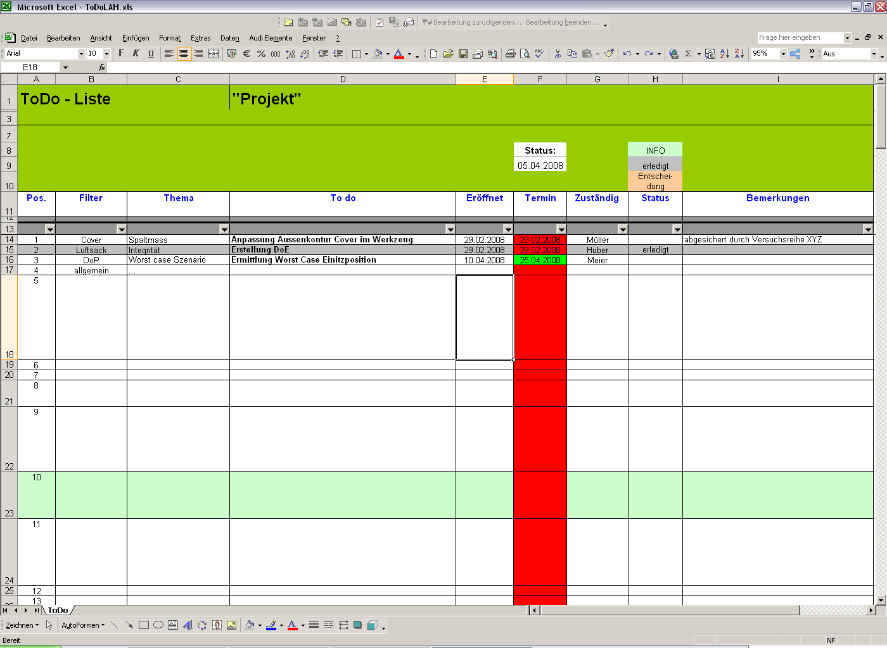
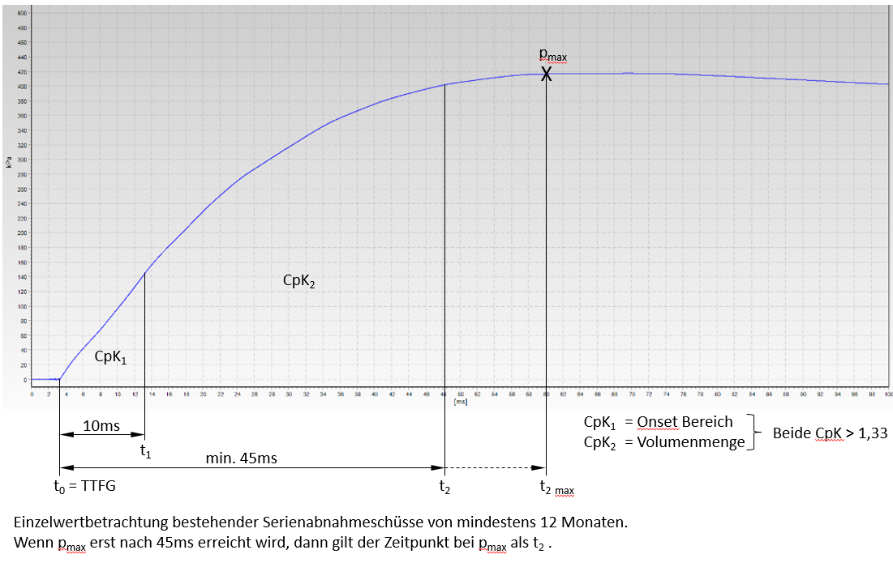
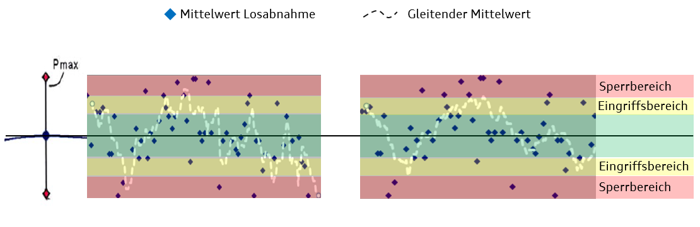

BT-LAH Vorlage-Stand-Mai[redacted-ext]_Basismodul-TE V16
Konzern-Bauteillastenheft
Fahrerairbag
| [redacted]: |
| Autoren | Jahr, Erik/ Golnik, Markus / Schweizer, Sebastian |
| Abt./OE | EKSR-2 / 1565 |
| Telefon | 39163 |
| Mobil | |
| Telefax | 5739163 |
| [redacted-person] |
| Verteiler |
| Erdin, Abdullah (BI-3/2) |
| Da [redacted-person] de Almeida, Pedro (EKSR) |
| [redacted-person] |
| [redacted-person], Javier (CTS[redacted-person]) |
| Kucera, Miroslav (EKS) |
| Weilandt, Jörg (NE-KC/2) |
| Biewendt, Marcus (EKS) |
[I: BT-LAH-941]
Änderungsdokumentation
Zum leichteren Auffinden der Änderungen gegenüber dem letzten Stand,
sind diese mit einem senkrechten Balken am linken Seitenrand
gekennzeichnet.
Inhaltsverzeichnis
2.1 Anforderungen an den Auftragnehmer 8
2.3 Zuordnung der Komponente 9
2.3.2 Einsatzort und Zielmarkt 9
2.4 Entwicklungs- und Lieferumfang 10
2.6.1 Terminplan und Meilensteine 14
2.6.1.2 Teamzusammenstellung und Aufgaben 16
2.6.1.3 To-Do-Liste (Offene-Punkte-Liste) 17
2.6.2 Metriken zur Projektverfolgung 17
2.6.3 Musterstände und Musterstückzahlen 18
2.6.4 Typprüfung und Zertifizierung 19
2.7 Qualität und Zuverlässigkeit 20
2.7.2 Risikomanagement (FMEA und FTA) 22
2.8 Fachbereichs- bzw. projektspezifische DMU-Richtlinien 22
2.9 Anforderungen an Kenntnisse im Produktdaten-Management 23
3 Projektmanagement und -organisation 24
3.1 Verantwortlichkeiten im Projekt und Projektstrukturplan 24
4.2.1 Verwendung von Norm- und Wiederholteilen 29
5.1 Benennung und Teilnummer 30
5.1.2 Kennzeichnung von Teilen 30
5.1.2.2 Versuchs- und Prototypenteile 30
5.1.2.3 Serien- und Ersatzteile 31
5.2 Block- und Prinzipschaltbild 31
5.3.1 Funktionsbeschreibung 32
5.6.3 Aufbau inerte Airbagmodule 43
5.8 Sicherheitsanforderungen 43
5.8.1 Personen- und Insassensicherheit 43
5.8.1.1 Insassenschutzwerte 43
5.8.1.2 Insassenbelastung bei OoP 43
5.8.1.3 Variationen in der Dummyposition 44
5.8.1.4 Verbrennungen und Brandgefahr 44
5.9 Alternativen und künftige Varianten 45
5.11.1 Einbauort und Einbaulage 45
5.12 Formgestaltung und Design 46
5.15 Medienbeständigkeit und chemische Anforderungen 47
5.15.1 Sauberkeitsanforderungen 48
5.17.2 Schwingungsverhalten 50
5.17.3 Steifigkeit und Federeigenschaften 50
5.17.4 Verformung und Deformation 50
5.19.1 Beschreibung der allgemeinen Anforderungen 50
5.23.3 Serien-/Systemlieferanten bei JIT-Teilen 53
5.24 Qualitätssicherungsanforderungen 53
5.24.1 Produkt- und Prozessüberwachung 53
5.24.2 Schadensteil-Analyse 54
6 Anforderungen an Erprobung 55
6.1 Prüfmittel / Erprobungsträger 57
6.2.1 Versuchsdokumentation 57
6.3.1 Qualifikationsmatrix (P-Freigabe) 59
6.3.2 Qualifikationsmatrix (B-Freigabe) 60
6.3.3 Qualifikationsmatrix für TE- und Q-Fahrzeuge 61
6.3.4 Qualifikationsmatrix (BMG-Freigabe) 62
6.3.4.1 [redacted-person] Airbagmodul (Mehrfachmontage) 63
6.3.4.2 Qualifikationsmatrix dynamische [redacted-person] 65
6.3.4.3 Qualifikationsmatrix OoP 65
6.3.4.4 Qualifikationsmatrix vorverlagerte Sitzposition 66
6.3.6 Qualifikationsmatrix bei Änderungen der Airbageinheit 66
6.4.2 Airbaginnendruckmessung 66
6.5 Testparameter und Zyklen 67
6.6 Beschaffenheit des zu testenden Musterstandes 67
6.8 [redacted-person] und Simulation 67
7 Definitionen, Begriffe, Abkürzungen 70
8.1 Zeichnungen, Pläne, Skizzen; Variantenbaum 78
8.1.1 [redacted-person], CAD und Datenqualität 78
8.1.2 Anforderung an Zeichnung und Daten 78
8.1.3 CAD-Anforderungen an Fremdfirmen 78
8.3 Typprüfunterlagen, Vorschriften, Gesetze, Verbrauchertests 82
8.3.2 Vorschriften, Verbrauchertests 82
8.4 Querschnittslastenhefte 82
8.4.1 Prioritäten der Dokumente 84
8.5 Zu beachtende Schutzrechte und Lizenzen 84
9.1 Auswertetabelle zur Standversuchsdokumentation 86
9.2 Versuchsdokumentation (Film und Fotos) 86
9.4 Dokumente zu den Freigabeprogrammen 87
[I: BT-LAH-4]
Das vorliegende Bauteil-Lastenheft (BT-LAH) ist angelehnt an die Struktur des VDA-[redacted-person] 2 (www.vda-qmc.de) und beschreibt komponentenspezifische Anforderungen. Das VDA-Modul 1 wird durch die [redacted-co]99000 abgebildet und beschreibt komponentenübergreifende allgemeine Anforderungen zur Leistungsbringung im Rahmen der Bauteilentwicklung.
[I: BT-LAH-13]
Die vom Auftragnehmer zu erfüllenden Anforderungen sind in der Identifikationsnummer (z. B: [A: BT-LAH-1]) grundsätzlich durch ein "A" gekennzeichnet. Textteile, die durch ein "I" gekennzeichnet sind, sind Informationen zum besseren Verständnis des BT-LAH. Gibt es keine Identifikationsnummer oder keine Kennzeichnung mit "A" bzw. "I", so handelt es sich ebenfalls um eine Anforderung.
[A: BT-LAH-5]
Das vorliegende Bauteil-Lastenheft und die Norm [redacted-co]99000 ff. sind zusammen Grundlage des zu erbringenden Leistungsumfanges des Auftragnehmers.
[A: BT-LAH-6]
Dieses BT-LAH beschreibt Leistungen, Anforderungen, Prüf- und Erprobungsbedingungen, die das zu entwickelnde Produkt und der Auftragnehmer erfüllen müssen.
Das BT-LAH beschreibt die an das zu entwickelnde Bauteil gestellten Leistungs- und Funktionsanforderungen sowie die hierfür zu erbringenden Entwicklungsleistungen des Auftragnehmers.
Abweichungen vom BT-LAH sind immer mit dem Auftraggeber abzustimmen.
Inhalte dieses BT-LAH dürfen Dritten ohne ausdrückliche Genehmigung des zuständigen Fachbereiches des Auftraggebers nicht zugänglich gemacht werden.
Das vorliegende Lastenheft (BT-LAH) ist gemeinsam mit dem jeweiligen projektspezifischen Lieferumfangslastenheft (PL-LAH) gültig.
Wenn für einzelne Fahrzeugprojekte keine PL-LAH existieren, dann gilt
das BT-LAH.
D.h., alle Bezüge auf ein PL-LAH beziehen sich dann auf dieses
BT-LAH.
[I: BT-LAH[redacted-ext]]
Vertraulich. [redacted-person] vorbehalten. Weitergabe oder Vervielfältigung ohne vorherige schriftliche Zustimmung des Fachbereiches der [redacted-person] verboten. Vertragspartner erhalten dieses Dokument nur über die zuständige Beschaffungsabteilung.
© [redacted-person]
[redacted-person] muss alle Anforderungen des BT-LAH auf Vollständigkeit, Widerspruchsfreiheit, Realisierbarkeit und Stand der Technik überprüfen.
[redacted-person] kann und muss während des Entwicklungszeitraumes nach Konzeptverabschiedungen gegebenenfalls korrigiert oder ergänzt werden.
[redacted-person] muss sich mit den zuständigen Fachabteilungen (Gefahrgutbeauftragter, Produktionsplanung, Produktion, [redacted-person], Berufsgenossenschaft, Gesundheitsschutz, etc.) bzgl. Montage, Lagerung an der Montagelinie, inner- und außerbetrieblicher Transport, Verpackung abstimmen.
[redacted-person] der Qualitätsfähigkeit der (eventuellen) Zweit- oder Unterlieferanten mittels System-, Verfahrens- und Produktaudits hat grundsätzlich mit der evtl. notwendigen Qualifizierung zu erfolgen und muss bis PVS abgeschlossen sein. Die [redacted-co]tierung muss durch einen vom VDA (oder vergleichbar, z. [redacted-person]) zugelassenen [redacted-co]tor erfolgen.
[redacted-person] für die Kennzeichnung (Baugruppen-Katalog [redacted]) und der entsprechenden Airbag-Wartungshinweise ist in Abstimmung mit den zuständigen Fachabteilungen (Rechtswesen, Fahrzeugsicherheit, Konstruktion, Design) umzusetzen.
Es gelten die Projektvorgaben der [redacted-co]99 000 und die nachfolgend beschriebenen Anforderungen.
[redacted-person] ist mit der uneingeschränkten Fahrzeugfreigabe (nicht mit der Baumusterfreigabe) seitens des Auftraggebers abgeschlossen.
[redacted-person] eines Auftragnehmers muss dieser nach den konzernweit abgestimmten Bewertungskriterien der [redacted-co] (bauteilbezogene Beurteilung von Entwicklungspartnern) auditiert und zugelassen sein. Dazu ist es notwendig, dass der Auftragnehmer über Erfahrung aus ähnlichen Projekten sowie über nachweisbar ausreichende Entwicklungskompetenz bzw. Entwicklungskapazitäten und über die geforderte Ausrüstung im Versuch, Labor, CAD- und CAE-Bereich und Prototypenbau verfügt. [redacted-person] der Versuchsdurchführung und Entwicklung ist vor Beauftragung zu benennen.
In Abstimmung mit der [redacted-person] sind vor Vergabe des [redacted-person] und Lenkräder sowie die dazugehörigen validierten Simulationsmodelle kostenfrei bereitzustellen. Mit diesen Modulen werden dynamische Versuche zur Bewertung der Rückhaltewirkung durchgeführt.
[redacted-person] und Zielvorgaben des Modul- und Simulationsmodellaufbaus sind im Vorfeld mit der [redacted-person] abzustimmen. [redacted-person] des dynamischen Prüfstandes wird vom Auftraggeber bereitgestellt.
Eine aktive Mitarbeit des Auftragnehmers im Auftraggeber internen Abstimmprozess ist notwendig. [redacted-person] ist in deutscher Sprache durchzuführen, Abweichungen sind nur nach Absprache mit dem jeweiligen Auftraggeber möglich.
Es ist ein Fahrerairbagmodul unter Erfüllung aller Terminvorgaben zu entwickeln, welches alle aktuellen und zu erwartenden Gesetze der Zielmärkte sowie alle Vorgaben des vorliegenden Bauteillastenheftes (BT-LAH) und der projektspezifischen Lieferumfangslastenhefte (PL-LAH) erfüllt.
Das vorliegende BT-LAH und alle aufgeführten mitgeltenden Unterlagen dienen zur Festlegung der technischen Daten und Randbedingungen für den zu beschreibenden Leistungsumfang von Fahrerairbag und Lenkrad. [redacted-person] umfasst das komplette Airbagmodul in allen Lenkradvarianten und sein einwandfreies Zusammenwirken innerhalb des Gesamtfahrzeuges.
[redacted-person] sind Vorschläge zur Produktverbesserung zu erarbeiten. Insbesondere sind die Einsatzmöglichkeiten neuer Werkstoffe und Methoden zur Verbesserung der Fahrzeugsicherheit und zur Reduzierung des Gewichts mit den Fachabteilungen zu diskutieren.
[A: BT-LAH-21]
Siehe 2.3.3
[A: BT-LAH-25]
Siehe 2.3.3
[A: BT-LAH-26]
Die relevanten Gesetzesanforderungen der Zielmärkte sind zu erfüllen.
Ab Projektstart wird vom Auftraggeber ein Variantentarget („VAMOS-Variantenbaum“) vorgegeben und separat zur Verfügung gestellt.
Das vorgegebene Variantentarget ist einzuhalten. Abweichungen sind mit dem Auftraggeber abzustimmen.
Ist für den Auftragnehmer im Verlaufe des Entwicklungsprozesses eine Erfüllung der Anforderungen durch dieses Variantentarget nicht möglich, ist dies unmittelbar mit den Fachabteilungen des Auftraggebers abzustimmen. Änderungen hinsichtlich der Varianten des Bauteils müssen über das System VAMOS dokumentiert werden.
Sollten zusätzliche Varianten notwendig sein, sind Szenarien aufzuzeigen und zu bewerten, wie bereits bestehende Varianten kompensiert werden können.
[redacted-person] inklusive der Lagerhaltung und Logistik sind durch den Auftragnehmer zu tragen.
siehe projektspezifisches LAH.XXX.880 von EKSR/2
für [redacted-co] gilt: LAH.XXX.419 von [redacted-person]-42
[redacted-person] dürfen hinsichtlich
Luftsackentfaltung
Luftsackpositionierung
Rückhaltewirkung
keine Unterschiede zeigen.
[redacted-person] sind in diesem Zusammenhang alle Modulvariationen gemeint, die innerhalb eines Fahrzeugderivates und Zielmarkts angefragt werden. [redacted-person] sind unter anderem zu betrachten:
Airbagmodul mit / ohne Tilger
Airbagmodul mit / ohne Multifuntkionskabel
Unterschiede in der Airbagcovergeometrie (rund / trapezförmig)
Materialvariationen (Kunststoff, Leder) im Airbagmodul
lokalisierte Airbagkomponenten
sowie ggf. weitere Varianten, ausgenommen Farb- und Schaltervariationen.
[redacted-person] der Varianten ist in dynamischen und statischen Ersatzversuchen durch den Auftragnehmer zu entwickeln und durch den beauftragten Rückhaltesystementwickler im Gesamtfahrzeugumfeld zu bestätigen. Bei bestehenden Unterschieden sind durch den [redacted-person] zu erarbeiten und im Modul zu integrieren.
[A: BT-LAH-31]
Es gelten die Anforderungen des Kapitels "Entwicklungs- und Lieferumfang" der [redacted-co]99000.
[A: BT-LAH-714]
[redacted-person] verpflichtet sich bei der Integration des Bauteiles beim Auftraggeber mitzuwirken.
[I: BT-LAH[redacted-ext]]
Im Rahmen der Forward-[redacted-person] wird über das Neuteilinformationsblatt die KV-Quote vorgegeben, welche im Rahmen der Vergabeverhandlungen vereinbart wird.
[A: BT-LAH-936]
Für [redacted-co] gilt:
Es gelten die Anforderungen der Konzeptverantwortungsvereinbarung. Die KV-Quote wird im Rahmen der Vergabeverhandlungen ggf. separat vereinbart.
[redacted-person] der Bauteil-Baumusterfreigabe sind für alle Varianten sowohl das BT-LAH, die PL-LAH´s, die Rückhaltesystemlastenhefte als auch alle anderen mitgeltenden Unterlagen zu erfüllen sowie die Funktion in den Gesamtfahrzeugen sicherzustellen.
[redacted-person] hinsichtlich der Erfüllung aller Anforderungen liegt beim Auftragnehmer.
Alle zur Erstellung des Lieferumfangs notwendigen Leistungen werden vom Auftragnehmer erbracht bzw. koordiniert. [redacted-person] hat dafür Sorge zu tragen, dass für die benötigten Einzelteile, soweit auf dem Markt verfügbar, ein Zweitlieferant (second source) existiert. Alternativ ist ein Absicherungskonzept vorzulegen. Für jedes benötigte Einzelteil muss neben dem Lieferantennamen auch der Fertigungsort angegeben werden.
[redacted-person] verpflichtet sich, alle beschriebenen Anforderungen des PL-LAH´s und dieses LAH‘s dem Angebot zugrunde zu legen. Er haftet für die vertragsgemäße Beschaffenheit des Liefergegenstandes, insbesondere für die Einhaltung von Beschaffenheits- und Haltbarkeitsgarantien, welche ausdrücklich als solche bezeichnet sind.
[redacted-person] oder Abweichungen müssen ausdrücklich im Angebot bzw. beim Entwicklungsvertragsabschluss ausgewiesen und mit der [redacted-person] des Auftraggebers abgestimmt sein. Diese müssen vor Auftragsvergabe schriftlich von der technischen Entwicklung des Auftraggebers bestätigt werden. Angebotspräsentationen stellen keine Vertragsgrundlage dar.
Ansonsten werden mit Abgabe eines Angebotes alle PL-LAH-Anforderungen akzeptiert.
In diesem BT-LAH nicht enthaltene Anforderungen sind vom Lieferanten beim Auftraggeber und Verfasser aufzuzeigen, nicht ausreichend beschriebene Punkte müssen in Absprache mit den Fachbereichen des Auftraggebers im Vorfeld geklärt werden und bedürfen der schriftlichen Zustimmung und sind nur gültig für die im PL-LAH erfassten Umfänge. Dies gilt insbesondere für Abweichungen von Standardforderungen.
[redacted-person] muss die ausgefüllte [redacted-person] Fahrer (siehe Anhang) beigefügt werden.
Sämtliche 3D-Datenmodelle in Freigabequalität und die unter Kapitel 2.6.3 näher definierten Musterteile für folgende Freigaben sind im Lieferumfang enthalten:
P-Freigabe, B-Freigabe, Baumuster, Erstmuster
[redacted-person] ist nach Vorgabe der Fahrzeugsicherheit bis zur Serienreife zu entwickeln.
[redacted-person] endet nicht mit der Erteilung der BMG, sondern der letzten K-Freigabe einer Vergabetranche, sofern eine [redacted-person] war.
Erst mit Erteilung der BMG und der letzten K-Freigabe (laut Vamos-Baum) ist der Entwicklungsauftrag abgeschlossen. Bis zu diesem Zeitpunkt sind sämtliche Änderungen für den Auftraggeber vollständig kostenneutral.
[redacted-person] übernimmt die Entwicklung und Fertigung eines wettbewerbsfähigen Produktes auf Basis der PL-LAH´s unter Ausnutzung aller am Markt verfügbaren Technologien.
Das zu entwickelnde Produkt soll ein Optimum an Schutzpotential für alle Fahrzeuginsassen bei gleichzeitiger Minimierung des [redacted-person]-induzierter Verletzungen bieten.
[redacted-person] beinhaltet:
die Airbagmodulentwicklung mit entsprechenden Standversuchen und Umweltsimulationen inkl. Sicherstellung der vollen Modulintegrität mittels geeigneter Versuche sowie Simulation bis zur Serienfähigkeit
die Mitarbeit bei der Abstimmung des Vergabeumfangs im Gesamtrückhaltesystem
die erweiterte Erprobung im Schlittenversuch durch Variation von Insassengröße und -position, Sitzeinstellung, Temperatureinfluss
die Mitarbeit an der Integration des Moduls ins Fahrzeugumfeld
die OoP Entwicklung (NAR) des Fahrerairbags, fahrzeug- und lenkradspezifisch nach FMVSS 208 (CMVSS 208)
die zur Durchführung von Vorversuchen, Einbauuntersuchungen, Freigabeprüfungen und Simulationen beim Auftraggeber und beim Rückhaltesystementwickler benötigten Versuchsteile (z.[redacted-person] Crash-, Schlitten-, MeRKE-, Standversuche, EMV-/ESD-Messungen, Schraubreihenuntersuchungen, Klimarütteldauerlauf, etc.) sind kostenfrei, frei Haus (jeweiliger Versuchsort) zur Verfügung zu stellen und anzuliefern. Zugehörig zu den angelieferten Airbagmodulen sind dem Auftraggeber auf [redacted-person] der verbauten Gasgeneratoren zur Verfügung zu stellen. [redacted-person] sowie die Anzahl ergeben sich aus der aktuellen Crash- und Subsystemversuchsplanung und sind rechtzeitig beim Auftraggeber bzw. dem Systementwickler einzuholen um einen planmäßigen Ablauf der Versuche zu gewährleisten. Sofern bei Abstimmung des RHS-[redacted-person] am Modul (Luftsack, Auslassöffnung, -größen, -positionen oder Gasgeneratorbeladung) erforderlich sind, sind die geänderten Teile nach Absprache mit der Fachabteilung des Auftraggebers umgehend nach Festlegung der Änderung am Erprobungsstandort zur Verfügung zu stellen.
Spätestens zwei Monate vor B-Freigabe muss in Absprache mit dem Auftraggeber ein hinsichtlich zielführender Entfaltung, Gasgeneratorleistung, Aufblaszeit, AÖ-Position und -Größe, OoP- und InPos-Erfüllung abgesichertes Fahrerairbagmodul (z.[redacted-person]) verfügbar sein.
[redacted-person] Fahrerairbagmodul beinhaltet:
siehe projektspezifisches LAH.XXX.880 von EKSR/2
für [redacted-co] gilt: LAH.XXX.419 von [redacted-person]-42
[redacted-person], welche Änderungsumfänge innerhalb des BT-LAHs zu berücksichtigen bzw. welche Umfänge separat zu vereinbaren sind, ist in der [redacted-co]99 000 festgelegt.
Es ist davon auszugehen, dass sich der Funktionsumfang (z. [redacted-person], …) der Bauteile im Laufe der Entwicklung ändern oder erweitern kann. Dafür sind bereits ab der Konzeptphase bis Projektende ausreichend Kapazitäten einzuplanen, um die vorgegebenen Termine einhalten zu können.
In den Lastenheften (BT- und PL-) nicht abgedeckte, grobe
Konzeptänderungen bedürfen einer erneuten Bewertung (z.[redacted-person] Design).
[redacted-person] der Lastenheft-Inhalte
(BT- und PL-) entstehende Kostenveränderungen sind separat zu
verhandeln.
[redacted-person] (z. [redacted-person] Bauteilen und Prozessen) - auch nach Serieneinsatz - müssen mit dem Auftraggeber abgestimmt werden. Sie werden vom Auftragnehmer anhand von 3D-Datenmodellen, Musterteilen und Änderungsprüfprogrammen dargestellt und vom Auftraggeber genehmigt.
Änderungen werden über auftraggeberseitige Änderungsprozesse
abgewickelt. Voraussetzung für die Freigabe ist eine Zeichnung, die die
Änderung beschreibt und dokumentiert, sowie das abgeschlossene und durch
den Auftraggeber positiv bewertete Änderungsprüfprogramm.
[redacted-person] im Zusammenhang mit der Erfüllung
aller LAH-Anforderungen werden nicht vergütet.
[redacted-person] werden für jede Änderung in Rechnung
gestellt.
[redacted-person] nach der Lieferung der Erstmuster auf, ist ebenfalls in Absprache mit den Fachabteilungen des Auftraggebers eine kostenlose Neubemusterung vorzunehmen. [redacted-person] ohne ausdrückliche Genehmigung des Auftraggebers erlischt die Freigabe. Es erfolgt ein erneuter Freigabeprozess.
Die erforderlichen Freigabeformulare (siehe Anhang) für die Änderungen sind in Absprache dem Auftraggeber mitzuliefern.
[A: BT-LAH-33]
[redacted-person] verpflichtet sich, alle Anforderungen dem Angebot als vereinbarte Beschaffenheit zugrunde zu legen. Abweichungen vom BT-LAH sind dem Angebot beizufügen und zu dokumentieren.
[I: BT-LAH-837]
[redacted-person] eines Auftragnehmers muss dieser nach den konzernweit abgestimmten Bewertungskriterien des Auftraggebers (bauteilbezogene Beurteilung von Entwicklungspartnern) auditiert und zugelassen sein.
[A: BT-LAH-34]
Mit dem Angebot sind vom Auftragnehmer folgende Unterlagen den technischen oder zuständigen Fachabteilungen des Auftraggebers zur Prüfung vorzulegen:
[A: BT-LAH-35]
Liste der offenen Punkte und Abweichungen vom BT-LAH (analog zur Struktur des BT-LAH)
[A: BT-LAH-36]
Pflichtenheft
[A: BT-LAH[redacted-ext]]
Erfahrungsnachweis aus ähnlichen Projekten
[A: BT-LAH[redacted-ext]]
Nachweis über ausreichende Entwicklungskompetenz bzw. Entwicklungskapazitäten
[A: BT-LAH[redacted-ext]]
Nachweis über die geforderte Ausrüstung im Versuch, Labor, CAD-Bereich
[A: BT-LAH[redacted-ext]]
Erfahrungsnachweis im Prototypenbau (insbesondere bei sicherheitskritischen Bauteilen)
[A: BT-LAH-38]
[redacted-person], die auch Engpässe bei anderen Aufträgen des Auftragnehmers berücksichtigt
[A: BT-LAH-41]
Projektplan gemäß [redacted-co]99000
[A: BT-LAH-42]
Projektzeitplan gemäß [redacted-co]99000
[A: BT-LAH-43]
Montage- und Befestigungskonzept
[A: BT-LAH-44]
Angaben zu Eigen- und Fremdanteil (Entwicklung, Produktion)
[A: BT-LAH-45]
Erprobungsplan/Testmanagement
[A: BT-LAH-46]
Werkstoffkonzept aller Einzelbauteile (nur Werkstoffe, keine Reinstoffangaben erforderlich)
[A: BT-LAH-47]
QM-Plan
[A: BT-LAH-48]
Verwertungskonzepte nach [redacted-co]91102, Beiblatt 3
[A: BT-LAH-49]
[redacted-person] durchzuführende Simulationen
Entwicklungskosten für:
Gruppe 1: Entwicklungsversuche
Gruppe 2: Dokumentationsversuche nach diesem Lastenheft. Entwicklungsversuche, die den Serienstand beinhalten und sich in Gruppe 2 eingliedern lassen, können dort angerechnet werden.
[redacted-person] für Koordination und Beschaffung von Versuchsteilen bei den Bauteillieferanten
[redacted-person] für eine NAR taugliche Entwicklung sind gesondert auszuweisen
[redacted-person] sind in einem gesonderten Formblatt (siehe Anlage) auszuweisen.
[redacted-person] Fahrer (siehe Anhang)
Angebotszeichnung
namentliche Benennung der Unterlieferanten mit Fertigungsstätte und Qualitätseinstufung. Stehen die Unterlieferanten noch nicht fest, ist ein entsprechender Beschaffungsplan vorzulegen.
[redacted-person]- und Fremdanteil
Prüfkonzept
Konzept für elektrische Kontaktierung und Erdung
[redacted-person]-Checklisten
Risikoanalyse insbesondere für Neukonzepte
Im Verlauf der Entwicklung schriftlich vom Auftraggeber festgelegte und akzeptierte Termine werden Bestandteil der PL-LAH´[redacted-person] können nur im Einvernehmen mit dem Auftraggeber geändert werden.
Es ist ein [redacted-person] auszufüllen (siehe Anhang). [redacted-person] ist als unteilbarer Bestandteil dieses Lastenheftes zu sehen und dem Einkauf und der Entwicklungsabteilung des Auftraggebers vollständig ausgefüllt bei Angebotsabgabe zu übergeben.
[A: BT-LAH[redacted-ext]]
Es ist der Nachweis zu erbringen, dass das genannte Anforderungsprofil bereits erfüllt ist oder zum Zeitpunkt der Beauftragung erfüllt sein wird, z.[redacted-person] entsprechende Qualifizierungsnachweise.
[I: BT-LAH-59]
Der aktuelle Terminplan wird von der Beschaffung des Auftraggebers den Anfrageunterlagen beigefügt.
[redacted-person] erwartet von den beteiligten Komponentenlieferanten/-entwicklern und dem Rückhaltesystemlieferant/-entwickler, dass gemeinsam Rahmenbedingungen definiert und Vereinbarungen getroffen werden, die eine reibungsfreie Zusammenarbeit im Sinne einer gemeinsamen, erfolgreichen Projektzielerfüllung ermöglichen. [redacted-person] von Geheimhaltungs-, Patent-, Know-How-Ansprüchen sind zwischen diesen Parteien ggf. gesonderte Vereinbarungen zu treffen.
Wurde ein Rückhaltesystemlieferant benannt, stellt dieser einen aktuellen und regelmäßigen Informationsaustausch mit allen beteiligten Entwicklungspartnern sicher. Darüber hinaus organisiert er regelmäßige Treffen mit allen Beteiligten.
Wenn der Komponentenlieferant/-entwickler oder Rückhaltesystemlieferant/-entwickler erkennt, dass vertraglich festgelegte Ziele durch Ursachen in seinem oder dem Verantwortungsumfang des Auftraggebers nicht, nur verspätet oder nur mit einem erhöhten Kostenaufwand zu erreichen sind, so ist der Auftraggeber sofort zu informieren. Es sind Vorschläge auszuarbeiten, die zur Beseitigung der entstandenen Probleme geeignet sind. [redacted-person] bewertet dann die eingereichten Vorschläge und entscheidet darüber, ob und nach welchem technischen Konzept die gemeinsame Entwicklung fortgesetzt wird. [redacted-person] für die Einhaltung der Ziele bleibt in vollem Umfang beim Komponentenlieferanten/-entwicklern und dem Rückhaltesystemlieferant/-entwickler bestehen.
[redacted-person] der Arbeiten hat der Auftraggeber das Recht, die bis dahin erreichten Ergebnisse für eigene Zwecke und für alle Gesellschaften [redacted-co] ohne Einschränkung zu verwenden, ohne dafür besondere Vergütungen zu leisten.
Darin enthalten ist auch die Befugnis, die Leistungen auf dem erreichten Stand durch Dritte fortführen zu lassen.
Mindestens folgende Meilensteine sind bereits bei der Angebotserstellung für die Airbagmodule zu berücksichtigen und deren Einhaltung durch Vorlage eines Entwicklungsterminplanes bei der Fachabteilung des Auftraggebers nachzuweisen. [redacted-person] hat der Auftragnehmer die Aufgabe, diese Meilensteine in einen mit allen Beteiligten abgestimmten Projekt-Terminplan einzuarbeiten:
Termine laut Beschaffung
[redacted-person]
Erstellung von PWZ und SWZ
Verfügbarkeit von Prototypen und Musterteilen
Teilebereitstellung A-/B-/C-Muster
Termin für Bauteile aus SWZ mit Note 3 und Note 1
Termine für P-, B- , K- bzw. E-Freigabe sowie BMG
Werkzeugverlagerungstermine
Start und Fertigstellung von Fertigungslinie(n)
Vorabfreigabe für TE- und Q-Fahrzeuge. [redacted-person] betrifft Erprobungsfahrzeuge, wie z. [redacted-person], Dauerlauffahrzeuge, Fahrzeuge für den Q-Absicherungslauf, etc.
UWS und Kurz-UWS
Erstmusterfreigabe
[redacted-person] nach [redacted-co]82513
OGL/UGL Gasgeneratorverfügbarkeit
Grenzmaterialien/-fertigungsprozesse
CE-[redacted-person] und Modul
Transport- / DOT- Zulassungen
[redacted-person] ist von dem Auftragnehmer zu erstellen und immer auf den aktuellen Stand zu halten.
Hier werden analog der Vergabeanforderungen alle relevanten Projekttermine und Meilensteine aufgelistet, z. [redacted-person], P-Freigabe, SOP, [redacted-person]/Winter, Bereitstellungstermine für 3D-Datenmodelle, Musterteile inkl. Mengenangabe, Baustufen, Prototypenbauplan, [redacted-person], etc..
[redacted-person] muss eine Teilebereitstellung zum jeweiligen TBT der unten genannten Projekt-Meilensteine sicherstellen. Auftragnehmer interne Meilensteine, wie Werkzeugerstellung (PWZ, SWZ), Zwischenfreigaben etc., sind mit auszuweisen.
| Projekt-Meilensteine |
| VFF |
| PVS |
| 0-Serie |
| SOP |
Aktuelle und verbindliche Termine werden vom Einkauf vorgegeben.
Der kritische Pfad ist zu identifizieren.
Die vom Auftraggeber vorgegebenen Termine sind bindend einzuhalten. Abweichungen sind nur mit Zustimmung des Auftraggebers zulässig. Abweichungen vom Terminplan sind unverzüglich und ohne Aufforderung den Auftraggeber-Verantwortlichen mitzuteilen. Gleichzeitig sind der Abweichungsgrund sowie eine geeignete Abhilfemaßnahme zur Erreichung des ursprünglichen Zieltermins aufzuzeigen.
[redacted-person] des Gesamtterminplans ist in elektronischer Form zur Verfügung zu stellen. Die elektronische Version soll entsprechend dem mit dem Auftraggeber vereinbarten Projektplanungssystem (z. [redacted-person] R-Plan) zur Verfügung gestellt werden.
Für allgemein bauartgenehmigungspflichtige Bauteile (ABG’s) sind vom [redacted-person] inkl. Testreport (z. [redacted-person] ECE, CCC, Taiwan) an den jeweiligen bauteileverantwortlichen Konstrukteur zu liefern, der es an die Typprüfabteilung der Marke (siehe auch [redacted-co]01155) weiterleitet.
[redacted-person] hat hausintern ein Projektteam inklusive Projektleiter zu benennen. [redacted-person] im Team sind vor der Auftragsvergabe aufzuzeigen, die Verantwortlichkeiten sind in Form eines projektspezifischen Organigramms darzustellen. Unterauftragnehmer sind mit aufzuführen.
[redacted-person] für die [redacted-person] Fahrerairbag besteht aus:
dem [redacted-person] Lenkrad + Airbag des Auftragnehmers
dem Projektingenieur / -konstrukteur des Auftragnehmers
dem [redacted-person]
dem Rückhaltesystementwicklungsverantwortlichen beim Auftraggeber
dem Funktions- als auch [redacted-person] beim Auftraggeber
dem [redacted-person] Fahrwerk beim Auftraggeber
dem Simulationsverantwortlichen (Integrität und OoP) [redacted-person]
dem [redacted-person] Auftraggeber
[redacted-person] trifft sich regelmäßig während des gesamten Entwicklungsablaufs. [redacted-person] des Zusammentreffens richtet sich nach dem Projektablauf und wird gemeinsam mit dem Auftraggeber festgelegt.
In Absprache mit dem Auftraggeber ist der [redacted-person] zuständig für:
die Koordination der [redacted-person] Fahrerairbag
das selbstständige Einholen und Weitergeben von Informationen zwischen allen betroffenen Entwicklungspartnern
das Erarbeiten von Synergielösungen bei auftretenden Zielkonflikten zwischen den einzelnen Entwicklungspartnern und das Abstimmen dieser Lösungen mit dem Auftraggeber
die Erfüllung der Vorgaben des BT-LAH und PL-LAH sowie für die Funktion seiner Komponente im Fahrzeug
Teilnahme an der [redacted-person]
[redacted-person] behält sich vor, bei Bedarf zusätzliche Vertreter des Auftragnehmers in dieses Team einzuberufen.
Ab Projektstart führt der Auftragnehmer eine „To Do Liste“, in der sämtliche offene Punkte, Arbeitspakete, unerledigte Aktionen usw. chronologisch geführt werden.
[redacted-person] ist ständig zu aktualisieren und den zuständigen Verantwortlichen beim Auftraggeber in elektronischer Form (z.[redacted-person], onlinebasiertes Tool) spätestens zwei Werktage nach dem Besprechungstermin zur Verfügung zu stellen.

[A: BT-LAH-73]
[redacted-person] liefert im Rahmen der Fortschrittsberichte die erforderlichen Daten für folgende Metriken:
[A: BT-LAH-74]
Meilensteintrendanalyse basierend auf den vereinbarten Meilensteinen
[A: BT-LAH-75]
Vergleich der geplanten und der tatsächlichen Dauer der Aktivitäten und Arbeitspakete basierend auf dem Projektzeitplan
[A: BT-LAH-76]
Fehlerverfolgung inkl. Priorisierung und Bearbeitungsstatus
[A: BT-LAH-77]
Weitere projektspezifische technische Metriken, die kritische Aspekte messen, werden zwischen den Projektverantwortlichen des Auftragnehmers und des Auftraggebers abgestimmt.
[A: BT-LAH-93]
[redacted-person] von Mustern sind die Musterstände für ZSB bzw. Systeme, Einzelteile, Komponenten mit dem Auftraggeber abzustimmen.
[A: BT-LAH-94]
[redacted-person] muss mit dem aktuellen Stand gekennzeichnet werden.
[A: BT-LAH-838]
[redacted-person] von 3D-CAD-Daten (digitaler Prototyp) hat zu einem definierten Zeitpunkt vor Lieferung der Musterteile zu erfolgen.
Bei funktionalen Änderungen mit Auswirkung auf die Rückhaltewirkung sind aktualisierte, validierte Simulationsmodelle innerhalb von drei Wochen zur Verfügung zu stellen. Für jeden Bauteilstand muss das jeweils gültige Simulationsmodell eindeutig über den Bauteillebenslauf zugeordnet und dokumentiert werden.
[A: BT-LAH-80]
Mindestens für alle geplanten Baustufen und Erprobungsfahrzeuge sind Musterteile anzuliefern. Termine und Stückzahlen sind mit dem Auftraggeber abzustimmen.
[I: BT-LAH-839]
[redacted-person] über Fahrzeug-Anzahl und Aufbautermin (virtuell und physikalisch) sind unter Abschnitt "Terminplan und Meilensteine" festgelegt bzw. dem Prototypenbauplan zu entnehmen.
[A: BT-LAH-924]
[redacted-person] für Änderungen laut [redacted-co]99000 Kapitel "Änderungsmanagement" erforderliche Musterteile sind erforderlich beispielsweise bei packagerelevanten Änderungen an Bauteilen, die in Vorbau/Vorderwagen und Unterflurmodellen dargestellt werden.
[I: BT-LAH-925]
[redacted-person] können sein:
Geometrieänderungen
Wechsel des Werkzeugentwicklungsstandes (Prototypen-Werkzeug, Serien-Werkzeug)
Die während der Entwicklung vom [redacted-person] benötigten Versuchsteile sind kostenfrei zur Verfügung zu stellen und frei Haus anzuliefern (jeweiliger Versuchsort). [redacted-person] werden vor Vergabe vom Auftraggeber separat zur Verfügung gestellt.
[redacted-person] ist vom Auftragnehmer zu führen.
[A: BT-LAH-91]
Die genannte Anzahl an Musterteilen ist Bestandteil des Entwicklungsumfangs und muss vom Auftragnehmer in den Entwicklungskosten berücksichtigt werden. Die genannten Musterteile sind dem Auftraggeber ohne zusätzliche Berechnung und frei Haus anzuliefern.
[A: BT-LAH[redacted-ext]]
Für die Bauteile ist eine Kennzeichnung mit einem RFID-Transponder nach [redacted-co]01067 „Einsatz von Auto-ID zur eindeutigen Objektkennzeichnung“ gefordert.
[A: BT-LAH[redacted-ext]]
[redacted-person] übernimmt das Beschaffen, Beschreiben und Montieren der Transponder, sowie die elektronische Bereitstellung des geforderten Dokumentationsumfangs.
Verantwortungsmatrix
In folgender Tabelle wird festgelegt, welcher Entwicklungspartner für die Beschaffung inkl. Bezahlung und Logistik von Versuchsteilen und –umfängen verantwortlich ist.
Anmerkungen:
Kalkulationswerte für Versuchsteilekosten sind ggf. bei der Beschaffung des Auftraggebers einzuholen
[redacted-person] von Bauteilfehlverhalten gilt das Verursacherprinzip
[redacted-person] von beigestellten Karossen erfolgt durch den Auftraggeber
Anzahl kostenfreier Teile (Kontingent) gemäß Vorgabe zur Nominierung
[redacted-person] ist mit dem Auftraggeber abzustimmen
Ein über den vereinbarten Umfang hinausgehender Bedarf an Bauteilen wird nach dem Verursacherprinzip verrechnet. [redacted-person] gilt dann der zur jeweiligen Baustufe vereinbarte Preis.
[redacted-person] aufgrund mangelnder Bauteilvorerprobung bzw. fehlerhafter Komponenten sind angefallene Versuchskosten vom Verursacher zu tragen.
[redacted-person] von Versuchsteilen haben ebenfalls bei mangelnder Versuchsperformance zu erfolgen. [redacted-person] der Versuchsperformance erfolgt durch den Auftraggeber.
[I: BT-LAH-92]
Alle darüber hinaus benötigten Prototypenteile für dieses Fahrzeugprojekt werden über das Vorseriencenter (ehemals Versuchsbau) im Rahmen des Forward-Sourcing-Prozesses an die Beschaffung gemeldet. (gilt nicht für [redacted-co].)
[A: BT-LAH-99]
Bei typprüfpflichtigen Bauteilen sind zum Erfüllungsnachweis der gesetzlichen [redacted-person] in Absprache mit der zuständigen Typprüfabteilung des Auftraggebers ggf. in Anwesenheit des [redacted-person] bzw. der Behörde durchzuführen und zu dokumentieren.
Bauteile zur Typprüfung und Zertifizierung sind kostenfrei zur Verfügung zu stellen.
[A: BT-LAH[redacted-ext]]
Für selbstzertifizierungsrelevante Teile muss eine gesetzeskonforme Dokumentation der geforderten meist experimentellen Nachweise der Gesetzeserfüllung durchgeführt werden.
[redacted-person] muss die Zertifikate vor Ablauf ihrer jeweiligen Gültigkeit sowie bei Gesetzesänderungen aktualisieren und rechtzeitig unaufgefordert an den Auftraggeber liefern. Dies gilt über den gesamten Produktlebenszyklus, der auch den Zeitraum der Versorgungs-verpflichtung von [redacted-person] beinhaltet.
[I: BT-LAH-98]
[redacted-person] ist typprüfpflichtig: Ja
[A: BT-LAH-99]
Bei typprüfpflichtigen Bauteilen sind zum Erfüllungsnachweis der gesetzlichen [redacted-person] in Absprache mit der zuständigen Typprüfabteilung des Auftraggebers ggf. in Anwesenheit des [redacted-person] bzw. der Behörde durchzuführen und zu dokumentieren.
Bauteile zur Typprüfung und Zertifizierung sind kostenfrei zur Verfügung zu stellen.
[I: BT-LAH[redacted-ext]]
[redacted-person] ist selbstzertifizierungsrelevant: Ja
[A: BT-LAH[redacted-ext]]
Für selbstzertifizierungsrelevante Teile muss eine gesetzeskonforme Dokumentation der geforderten meist experimentellen Nachweise der Gesetzeserfüllung durchgeführt werden.
[A: BT-LAH[redacted-ext]]
Fahrzeugteile / Komponenten , welche nach weltweiten Gesetzen, z. [redacted-person], EG, FMVSS, CMVSS und CCC ([redacted-person] Certification), eine Bauartgenehmigung benötigen, sind unabhängig vom Einsatzort/Zielmarkt und Fahrzeugmodell zu zertifizieren und mit der entsprechenden Identifizierung nach Gesetzesvorgabe zu kennzeichnen. Dies gilt auch für spezielle Kundendienstteile.
[redacted-person] des Bauteils entsprechend VW10511 ist vorzusehen.
Für kennzeichnungs- und bauartgenehmigungspflichtige Märkte erfolgt die Zertifizierung und Kennzeichnung unter Verwendung eines Typisierungsnamens. Die gesetzlichen Anforderungen für den [redacted-person] (CNCA-C11-01:2014) sind in der Konzernnorm VW10511 beschrieben. Falls eine Nennung des Bauteilverwendungsbereichs („Typabgrenzung“) in den Bauartgenehmigungsdokumenten erforderlich ist, erfolgt diese ausschließlich durch den „[redacted-person]“ und/oder die verkürzte Konzernprojektbezeichnung.
[A: BT-LAH[redacted-ext]]
Es gelten die Anforderungen und Verfahren bezüglich Qualität der Formel-Q-Reihe und der [redacted-co]99000.
Für [redacted-co] gilt: [redacted-person] LAH.XXX.419 von [redacted-person]-42
Es gelten die im Handbuch „Formel Q-Konkret“ beschriebenen qualitätssichernden Maßnahmen zwischen dem Auftraggeber und dem Auftragnehmer mit dem Angebot als vereinbart. Abweichend von den allgemeinen Geschäftsbedingungen leistet der Auftragnehmer uneingeschränkt Gewähr dafür, dass die Liefergegenstände den vereinbarten Spezifikationen entsprechen und keine Material-, Fertigungs- oder Funktionsfehler aufweisen. [redacted-person] der vom Auftraggeber geforderten Qualitätsfähigkeit und Qualitätsleistung (siehe Formel Q-Konkret) verpflichtet sich der Auftragnehmer, eine geeignete Ausfallstrategie für die einzelnen Werke und Anlagen (oder Unterlieferanten) des Auftragnehmers zu entwickeln, um die kontinuierliche Belieferung sicherzustellen.
[redacted-person] stellt der [redacted-person] für die Prototypenphase ein mit der [redacted-person] abgestimmtes Mess- und Prüfsystem zur Verfügung.
Im Einzelnen sind zu beachten:
Es sind die Forderungen des Qualitätslastenheftes des Auftraggebers zu berücksichtigen und einzuhalten.
Die vereinbarten Qualitätsmerkmale und -ziele sind zu erfüllen.
[redacted-person] und Maßnahmen aus den FMEAs sind in der Entwicklung und Produktion umzusetzen.
[redacted-person] und Planung muss vom Auftraggeber vorgegebene Prüftechnologien und -konzepte berücksichtigen.
Die vom Auftraggeber festgelegten Sauberkeitsanforderungen sind vom Auftragnehmer in Form von ständig wiederkehrenden Prüfungen sicherzustellen.
[redacted-person] stellt [redacted-person] für die Prototypenphase ein mit der [redacted-person] abgestimmtes Mess- und Prüfsystem zur Verfügung.
[redacted-person]:
[redacted-person] macht Angaben zur technischen Sauberkeit für alle medienführenden und -benetzten Bauteilen und/oder Bauteilgruppen entsprechend VDA-Band 19 und ISO/DIS ISO/DIS 16232ff.
[redacted-person] an die Bauteilsauberkeit und die Prüfmethode sind mit dem Auftragnehmer in einer Q-Vereinbarung (Beispiel einer Q-Vereinbarung siehe PV 3347) festzulegen. Dabei ist auch die Serienverpackung zu berücksichtigen.
[redacted-person] beachtet die gesetzlichen Anforderungen oder besondere Anforderungen des Auftraggebers und dokumentiert die Einhaltung der Anforderungen (Nachweise der Einhaltung).
Am Ende der Fahrzeugentwicklung ist gemeinsam mit der Qualitätssicherung aller beteiligten Entwicklungspartner ein Serienüberwachungskatalog für die Serienüberwachung nach PV 3545 festzulegen und gültig zu setzen.
[A: BT-LAH-103]
[redacted-person] ist zu ermitteln und bis zum B-Musterstand nachzuweisen.
[A: BT-LAH-104]
Anzahl der Ausfälle:
[A: BT-LAH-105]
0 - km Ausfälle: 0 ppm (Ziel) *)
[A: BT-LAH-108]
*) Maßnahmen zur Zielerreichung (Strategiepapier usw.) sind bei Angebotsabgabe anzugeben.
[A: BT-LAH-109]
Hiervon kann im Rahmen einer separaten Qualitätsvereinbarung (ppm-Zielvereinbarung) nur in Abstimmung mit der Produkttechnik der Qualitätssicherung des Auftraggebers abgewichen werden.
[A: BT-LAH-110]
[redacted-person] in Auftragnehmer-Angeboten werden als gegenstandslos betrachtet.
[A: BT-LAH-111]
[redacted-person] der Serienlieferung wird ein ppm-Programm (für den 0-km-Bereich) mit der Qualitätssicherung vereinbart, das eine fortlaufende Qualitätsverbesserung in der Serie sicherstellt.
[A: BT-LAH-112]
Es ist über eine 2-Tages-Produktion gemäß den Regelungen der Formel Q-Konkret die Stabilität der Qualität unter Serienbedingungen nachzuweisen.
[A: BT-LAH-927]
Es gelten die Anforderungen des Qualitäts-LAH des Auftragsgebers.
[A: BT-LAH-928]
[redacted-person] und Planung muss vom Auftraggeber vorgegebene Prüftechnologien und -Konzepte berücksichtigen.
[redacted-person] führt für die Dauer des Projektes eine Risikomanagement-Methode ein.
[redacted-person] identifiziert und priorisiert vorausschauend Risiken, die technische Fragen, den Zeitplan und die Kosten des Auftraggebers betreffen.
Er trifft Maßnahmen zur Vermeidung, bzw. Minimierung der erkannten Risiken und dokumentiert diese.
Sowohl die Risiken (neue Bewertung, z. [redacted-person] Eintrittswahrscheinlichkeit, potentielle Schadenshöhe und Priorität) als auch die Maßnahmen zur Risikominimierung werden verfolgt und regelmäßig aktualisiert
[redacted-person] erstellt für seine Entwicklungs- und Konstruktionsumfänge eine Konstruktions- und eine Prozess-FMEA. [redacted-person] und die Ausführung der FMEA´s müssen nach entsprechenden Vorgaben zur Konzeptphase vorgelegt und bis zum endgültigen Serienstand der Teile gepflegt, aktualisiert und zum Abschluss gebracht werden.
[redacted-person] der B-Muster muss die Konstruktions-FMEA auf Bauteil- sowie auf Schnittstellenebene erstellt sein und den Vorgaben der [redacted-co]99000 entsprechen. Diese sind nach Absprache dem Auftraggeber zur Einsicht vorzulegen.
[redacted-person], spätestens mit Übergabe der B-Muster, sind eine FTA und eine Ausfallratenanalyse (PCM) vom Auftragnehmer zu erstellen.
[A: BT-LAH-929]
Für [redacted-co] gilt:
[redacted-person] bezüglich CAD und DMU werden im "TE-Infocenter" (https://engineering-portal.audi.web.vwg/) geregelt.
[redacted]01059 (Anforderungen an CAD/CAM – Daten) ist zu berücksichtigen.
[redacted-person] eines durchgängigen Einsatzes von DMU sind neben den in Abschnitt 8.1.1 beschriebenen allgemeinen Richtlinien noch fachbereichs- bzw. projektspezifische Richtlinien und Arbeitsanweisungen zu beachten.
In jedem Fall muss auch ein für die Zusammenbausimulation (DMU) geeignetes 3D-CAD-Modell bereitgestellt werden. Darüber hinaus muss der Aufbau und Unterhalt einer arbeitsfähigen Datenfernübertragungs (DFÜ)-Anbindung sowie der Einsatz des Kennsatzmoduls KVS des Auftraggebers für alle CATIA-Daten sichergestellt werden.
[redacted-person] der aktuellen CAD-Modelle unter der Teilenummer im Konstruktionsdatenverwaltungssystem (KVS) ist auf Anforderung des Auftraggebers durch den Auftragnehmer durchzuführen.
Die CAD-Daten müssen die CAD-[redacted-person] zur Nutzung im DMU-Prozess enthalten:
Geometrieuntermenge DMU
Positionierung im projektspezifischen Koordinatensystem
Spiegel- und Symmetriegeometrie
Mehrfachverbauung
[redacted-person] an den regelmäßig stattfindenden DMU-Modulgesprächen, die den aktuellen Entwicklungsstand digital zeigen und zur Abstimmung der weiteren Vorgehensweise dienen, wird gefordert.
[redacted-person] an den Auftraggeber und Kennzeichnung aller für die Teileanfertigung (Laminate, Vorserienwerkzeuge, Serienwerkzeuge, etc.) vorgesehenen CAD-Modelle ist vorzunehmen.
Für bewegte Bauteile sind neben der statischen Beschreibung in 3D auch die Bewegungsfreiräume in Form von dynamischen Geometriehüllen bereitzustellen.
Für die Freigabe vorgesehene CAD-Modelle sind unter Einhaltung aller Anforderungen der Konzern-CAD-Richtlinien unter der Teilenummer ins KVS zu übermitteln.
[I: BT-LAH[redacted-ext]]
Zur prozesssicheren Einsteuerung von Entwicklungsergebnissen in die Systeme des Auftraggebers sind Grundkenntnisse über das Produktdaten-Management ([redacted]) unerlässlich.
[A: BT-LAH[redacted-ext]]
[redacted-person] des LAH.[redacted-phone]AF „Anforderungsprofil für die Beauftragung von technischen Regeln zur Aufnahme im System MBT“ sind zu erfüllen.
[A: BT-LAH-122]
[redacted-person] stellt ständige Applikationsingenieure nur für das beschriebene Einzelprojekt im eigenen Hause, sowie Residentingenieure am jeweiligen Entwicklungsstandort beim Auftraggeber.
[redacted-person] (Urlaub, Krankheit) muss gewährleistet sein und zeitnah dem Auftraggeber mitgeteilt werden.
[A: BT-LAH-123]
Sowohl für die Applikations- als auch die Residentingenieure sind die notwendigen Mess- und Applikationssysteme zu stellen.
[redacted-person] (inkl. Versuchsdurchführung) ist vor Auftragsvergabe mit dem Auftraggeber abzustimmen.
Komponentenentwickler/-lieferant Fahrerairbag
[redacted-person] ist für die Funktion ohne Auffälligkeiten und Abweichungen seiner Komponente als Einzelteil sowie in der Gesamtfahrzeugumgebung verantwortlich.
Dies weist er mindestens über die im PL-LAH geforderten Prüfungen nach und erteilt eine Freigabeempfehlung an den Auftraggeber.
[redacted-person], die die Funktion beeinflussen können, sind mit zu untersuchen und in die Auslegung des Airbags einzubeziehen. [redacted-person] hat die Konstruktion des Cockpits hinsichtlich aller seiner Funktion beeinflussender Teile zu begleiten und hat die Verpflichtung, Maßnahmen, die die Funktion seines Moduls negativ beeinflussen können, in der Konstruktionsrunde anzusprechen und zu einer Entscheidung zu bringen, die von allen Projektpartnern getragen werden kann.
Rückhaltesystementwickler/-lieferant
[redacted-person]/-lieferant koordiniert, plant und steuert den Entwicklungsprozess so, dass alle vereinbarten Ziele termingerecht erreicht werden. Er ist für die Gesamtabstimmung der Rückhaltekomponenten (Airbags, Instrumententafel, Lenkrad, Sitz, Gurt und alle im Einflussbereich liegenden Verkleidungsteile) zur Erreichung der Lastenheftziele im Gesamtfahrzeug verantwortlich.
Dies weist er mindestens über die im LAH Rückhaltesystem geforderten Prüfungen nach und erteilt eine Freigabeempfehlung an den Auftraggeber.
Fahrzeugsicherheit
[redacted-person] des Auftraggebers ist für die Einhaltung der Anforderung des Gesamtfahrzeuglastenheftes und des PL-LAH verantwortlich und erteilt nach Empfehlung des Rückhaltesystemlieferanten die Freigabe für das Rückhaltesystem im Gesamtfahrzeug und für die [redacted-person] nach PL-LAH.
Projektverantwortliche beim Auftraggeber
[redacted-person] und beteiligten Mitarbeiter beim Auftraggeber werden in unten aufgeführter Form bei Auftragsvergabe benannt.
Projektverantwortliche/r
| Name | Abteilung | Telefon | Funktion |
Projektmitarbeiter/innen
| Name | Abteilung | Telefon | Funktion |
Projektverantwortliche und -mitarbeiter beim Auftragnehmer
[redacted-person] nennt seine Projektbeteiligten in gleicher Form schon im Angebot. [redacted-person] eines oder mehrerer Projektbeteiligten in ein anderes Projektteam ist der Auftraggeber frühzeitig zu informieren und seine Zustimmung einzuholen. Dies dient der Erreichung einer projektförderlichen Kontinuität.
[A: BT-LAH-126]
Die gesamte Dokumentation ist vom Auftragnehmer in deutscher Sprache zu erstellen.
[A: BT-LAH-127]
Die jeweils aktuelle Dokumentation des Entwicklungsstandes ist alle zwei Wochen dem Auftraggeber auszuhändigen.
Die technischen Unterlagen sind entsprechend [redacted-co]99 000 nach den Vorgaben des Auftraggebers auszuhändigen.
Zu jedem Musterstand des Bauteiles muss den zuständigen Fachabteilungen in Versuch und Konstruktion des Auftraggebers eine Mustermappe mit folgenden Inhalten vorgelegt werden:
[redacted-person] mit Einzelteilbeschreibung
3D-Datenmodelle
Mess- und Prüfberichte (auf Anforderung)
Freigabebericht (auf Anforderung). Speziell für USA-/Canada-Fahrzeuge sind Freigabeberichte zu schreiben, da für diese Fahrzeuge vom Auftraggeber eine Selbstzertifizierung durchgeführt wird, die unbedingt mit einer Dokumentation bewiesen werden muss.
[redacted-person] des Bauteiles bzw. der Baugruppe (teilnummernbezogen) ist gemäß [redacted]in das [redacted-person] (IMDS) einzugeben und entsprechend dem Entwicklungsstand zu den Freigabeterminen zu aktualisieren.
validiertes Simulationsergebnis (z.[redacted-person], Werkzeugfüllstudien, …)
validierte Berechnungsmodelle (PAM-Crash, LS-Dyna, CAE-[redacted-person]) siehe Simulationslastenheft
Angebotszeichnung, Werkstoffzertifikate
System-, Schnittstellen-, Konstruktions- und Prozess-FMEA
Bei sicherheitsrelevanten Bauteilen sind zusätzlich eine Gefahren- und Situationsanalyse sowie eine FTA zu erstellen
Fertigungsablaufplan (Flowchart), Produktionslayout, Herstellbarkeitsanalyse
Rohteilzeichnung für Rohteile
Typprüfzeichnungen
CE-/DOT-Zulassung
Kundenzeichnung mit SC und CC Merkmalen, im Abgleich mit der Q-Merkmalsliste, abgeleitet aus den FMEA´s
weitere notwendige Unterlagen nach Absprache, sowie PL-LAH
[redacted-person] der Ergebnisse, insbesondere der Dokumentationsversuche, erfolgt in Abstimmung mit der Fahrzeugsicherheit und [redacted-person] des Auftraggebers.
[redacted-person] (Versuchs- und Freigabeumfänge) erfolgt nach den festgelegten Qualifikationsmatrizen im Anhang.
[redacted-person] ist die im Anhang geführte „Auswertetabelle zur Standversuchsdokumentation“ zu verwenden.
[redacted-person] in Standversuchen mehrfach verwendet, so ist diese Mehrfachverwendung am Bauteil eindeutig zu kennzeichnen und zu dokumentieren. Mehrfach verwendete Bauteile sind vor Wiederverwendung auf eine Vorschädigung zu untersuchen und ggf. auszutauschen.
Airbagmodule bzw. Umgebungsbauteile (z.[redacted-person]) sind nach dem Airbagversuch auf Verformungen zu untersuchen. Diese sind mit einer geeigneten Messmethode zu erfassen und in der Auswertetabelle zu dokumentieren.
[redacted-person] des Versuchsaufbaus und der Versuchsergebnisse ist auf Basis der [redacted-person] / Testmethoden (siehe Anhang) vorzunehmen. Abweichungen sind mit dem Auftraggeber abzustimmen.
[redacted-person] aller nicht beim Auftraggeber durchgeführten Versuchs- und Freigabeumfänge hat beim Lieferanten zu erfolgen und muss gemäß den Vorgaben der VDA 6.1 bzw. ISO TS 16499 archiviert werden.
[redacted-person] wird vom Auftragnehmer verwaltet und bei Abschluss der Entwicklung elektronisch als Paket zum Auftraggeber übermittelt. Zwischenstände müssen seitens Auftraggeber jederzeit abrufbar sein.
Bei jeder Prüfung sind mindestens folgende Punkte mit Hochgeschwindigkeitsfilm (HF) bzw. Messschrieb (M) aufzuzeichnen/zu messen:
Prüflingsnummer, Sach-Nummer, Prüftemperatur und Prüfdatum (HF und M)
Umgebungstemperatur bei der Prüfung (M) in °C
Zündpillenwiderstand aller Anzünder
Zündzeitpunkte (HF und M), Zündstrom- und Zündspannungsverläufe (M) über der Zeit
Luftsackaufblaszeit tF (HF) entsprechend Vorgabe
Zeitpunkt ta, zu dem die Öffnungselemente aufzureißen beginnen (HF)
nach Absprache: Luftsackinnendruck p(t) mit entsprechender Skalierung
Entfaltungscharakteristik des Luftsackes
Reaktionskraftmessdiagramm an den Anschraubstellen/Lagerstellen nach Absprache
[A: BT-LAH-166]
Zu jeder Lieferung eines neuen Standes des Bauteiles (Hardware, Software und Mechanik) muss den zuständigen Fachabteilungen des Auftraggebers eine Mustermappe mit mindestens folgenden Inhalten übergeben werden:
[A: BT-LAH-167]
Deckblatt mit folgendem Inhalt:
[redacted-person], Teilebezeichnung, [redacted]Mechanik-Stand (z. [redacted-person]), Projektleitername des Auftragnehmers, Unterlageninhaltsverzeichnis, Stand des Lastenheftes, Stand des Pflichtenheftes
[A: BT-LAH-168]
Kurzbeschreibung bzw. Informationen mit folgenden Angaben:
alle Änderungen gegenüber vorherigem Stand, die Notwendigkeit der Änderung, die Auswirkungen der Änderung,
Teilelebenslauf, Pflichtenheft, Mess- und Prüfberichte (inkl. Toleranzanalyse), Simulationsergebnis, Prüfbericht über Werkstoffanforderungen, Herstellungsverfahren
[A: BT-LAH-178]
[redacted-person] der Mustermappe ist in Form einer ausgefüllten Checkliste nachzuweisen.
[A: BT-LAH-179]
[redacted-person] sind innerhalb von 5 Arbeitstagen nach zu reichen.
3D-Datenmodelle sind bereits zu einem definierten Zeitpunkt vor dem Musterstand vom Auftragnehmer an den Auftraggeber auszuhändigen.
[A: BT-LAH[redacted-ext]]
[redacted-person] ist intern verwendungsbeschränkt. Intern verwendungsbeschränkte Bauteile enthalten Know-How des Auftraggebers. [redacted-person] zu intern verwendungsbeschränkten Bauteilen sind ausschließlich zur Verwendung durch den Auftragnehmer an dessen Entwicklungsstandort bestimmt.
[A: BT-LAH[redacted-ext]]
[redacted-person] muss sicherstellen, dass Daten nicht, ohne vorherige Zustimmung des Auftraggebers, an andere Standorte des Auftragnehmers weitergegeben werden.
[A: BT-LAH[redacted-ext]]
[redacted-person] an andere Standorte des Auftragnehmers weitergegeben werden müssen, muss der Auftragnehmer zuvor die schriftliche Zustimmung des Auftraggebers einholen.
[A: BT-LAH[redacted-ext]]
[redacted-person] muss die Weitergabe der Daten an andere Standorte auf solche Daten beschränken welche für die reine Fertigung notwendig sind
[I: BT-LAH[redacted-ext]]
Im Falle von Zuwiderhandlungen erhebt der Auftraggeber eine
Vertragsstrafe in Höhe von EUR 50.000,--. [redacted-person] wird auf
eine eventuelle Schadenersatzverpflichtung
angerechnet.
[A: BT-LAH[redacted-ext]]
Sollte ein Datenaustausch mit anderen Standorten notwendig werden, muss der Auftragnehmer einen Ansprechpartner benennen, der einen Datenaustausch mit dem Bauteilverantwortlichen des Auftraggebers abstimmt.
Für [redacted-co] gilt:
Es gelten die Anforderungen der Querschnittslastenhefte "TE DMU" LAH DUM 000 A und "TE CATIA V5" LAH DUM 000. [redacted-person] ist im System VisVerdi mit entsprechender Nomenklatur und im Format des Iso-MME zur Verfügung zu stellen.
Für [redacted-co] gilt:
[redacted-person] bezüglich PDMU sind unter
(https://content2.euporsche.com/prod/supplierweb/supplier.nsf/web/german-home)
und
(http://www.q-checker.de)
geregelt.
Der zukünftige Datenaustausch ist über das System „Teamcenter/CONNECT“ geplant.
Grundlage der Zusammenarbeit mit der beauftragten Partnerfirma ist die Anbindung an CONNECT.
[redacted-person] und das 3D-Datenmodell sind nach Absprache mit dem Auftraggeber im jeweils aktuellen Stand und in der aktuellen Struktur im CONNECT abzulegen.
[redacted-person] der Versuchsdaten in auftraggeberseitige Systeme
ist unbedingt sicherzustellen (siehe [redacted-person]).
[redacted-person] müssen dem Auftraggeber zwei Werktage nach
Versuchstermin zur Verfügung stehen. Über die Relevanz von abzulegenden
Versuchsdaten ist mit dem Auftraggeber abzustimmen.
Internet (E-Mail) mit PGP > 5.0
Einsatz eines kompatiblen Video-/ Web-Konferenzsystems
Einsatz eines CATIA V5 CAD-Systems
Online-Datenaustausch gemäß der Broschüre zum CAD/CAM-Datenaustausch
Anwendung der Varianten-Software „VAMOS“
KVS Zugriff zum Datenaustausch
Teamcenter - Anbindung, sobald technisch möglich
[redacted-person] zur Bildanalyse
Datenaustauschserver zur Übertragung der Versuchsdaten (z.[redacted-person], Bilder, etc.)
ausreichende Bandbreite der Datenaustauschleitungen
Eine freie IP Adresse für den Internetzugang beim Auftragnehmer
Für [redacted-co] gilt:
[redacted-co]-mynet Zugang
Nicht belegt.
Für die Bauraumfestlegung ist eine Bauteilumgebungsanalyse durchzuführen. [redacted-person] sind zu berücksichtigen. Änderungswünsche sind über die zuständige Konstruktionsabteilung des Auftraggebers einzusteuern.
Für die Bauteile sind folgende Toleranzuntersuchungen erforderlich:
statistische Toleranzuntersuchung
Untersuchung der thermischen Veränderungen
Untersuchung der Rohbautoleranzen an den Befestigungspunkten des Airbag-Moduls
Definitionen von entsprechenden Maßnahmen, um die vorgegebenen Fugenmaße/Mindestabstände der Bauteile sicherzustellen
[redacted-person], Kabelbäume und deren Befestigungselemente müssen zum Lenkrad einen Mindestabstand aufweisen.
[redacted-person] ohne Toleranzangaben vorgegeben sind, bedeutet dies, dass der Messwert einschließlich des zugehörigen Messfehlers den Grenzwert nicht erreichen darf.
Bei allen Neuprojekten sind Norm- und Wiederholteile ausschließlich aus dem Normteile-Verwaltungssystem (NVS) des Volkswagen-Konzerns zu verwenden. Ausnahmen sind mit der Abteilung EZTD/3-Norm- und Wiederholteile abzustimmen. Dies gilt grundsätzlich auch für alle Lieferanten und Fremdentwickler, die Bauteile und Baugruppen (Module) für den VW-Konzern entwickeln.
[I: BT-LAH-846]
Kapitel für mechanische Baugruppen nicht belegt.
[redacted-person] aller Funktionsanforderungen muss für alle Ausstattungsvarianten und Farben und in allen im Fahrbetrieb zulässigen Positionen von beweglichen Ausstattungsteilen und Sonderausstattungen (z. [redacted-person], Bildschirm, CD-Wechsler, Kniefänger, etc.) des Fahrzeugs gewährleistet sein. Dabei hat der Auftragnehmer mitzuwirken.
Bei der Bauteilentwicklung ist eine Material- und Technologievariante zu berücksichtigen, welche den besten Kompromiss zwischen Gewicht und Preis mit Rücksicht auf den Investitionsaufwand bei gleichzeitiger Erfüllung aller in dieser technischen Beschreibung genannten Anforderungen darstellt.
Scharfkantigkeit und Gratbildung sind insbesondere Luftsack zugewandt konstruktions- und fertigungsseitig auszuschließen.
Öffnungen, durch die Fremdkörper ins Modul gelangen könnten, sind zu vermeiden bzw. durch geeignete Maßnahmen (z.[redacted-person]) zu verschließen. Verpackungen sind mit demselben Ziel auszulegen.
Ab Projektstart ist vom Auftragnehmer ein Teilelebenslauf zu führen, in dem sämtliche Veränderungen auch für Unterkomponenten (Luftsack, Cover, Gasgenerator, Gehäuse, Kabelbaum, Stecker …) dokumentiert sind (siehe Anhang A zur [redacted-co]99000). Dieser ist dem Auftraggeber unaufgefordert bei jeder Bauteillieferung bzw. bei Änderungen in elektronischer Form zur Verfügung zu stellen. In diesem ist für jeden Stand die Netto-Treibstoffmenge sowie Zulassungsnummern für pyrotechnische Gegenstände anzugeben.
Änderungen am Bauteil sind mit dem Auftraggeber im Vorfeld abzustimmen. [redacted-person] ohne ausdrückliche Genehmigung des Auftraggebers erlischt die jeweils gültige Freigabe (z.[redacted-person]). Es erfolgt ein erneuter Freigabeprozess.
[redacted-person] sind mit Teilenummer, Farbkennzeichen und Baustand (Vorserie) deutlich lesbar und dauerhaft zu kennzeichnen. [redacted-person] muss allen [redacted-person] tragen. [redacted-person] der Teile erfolgt nach den in der [redacted-co]99000 aufgeführten Normen. [redacted-person] des Moduls darf durch die Kennzeichnung nicht beeinflusst werden.
[redacted-person] aller Bauteile muss gewährleistet sein. Abweichungen sind nur nach Rücksprache mit dem Auftraggeber zulässig.
Für die Kennzeichnung von Prototypenteilen gilt das „[redacted-person]“. [redacted-person] ist mit dem Auftraggeber abzustimmen. Sie muss mindestens folgenden Umfang haben:
Herstellerseitig:
Nummer zur Verfolgung dokumentationspflichtiger Daten
Herstellerzeichen
Fertigungsdatum (Jahr/Tag)
[redacted-person]
Bauteilestatus mittels gelbem Aufkleber nach LAH [redacted-phone]
[redacted-person] mit mehreren Zündkreisen müssen die einzelnen Zündstufen von an den Auftraggeber gelieferten Versuchsteilen unverlierbar durch Nummerierung gekennzeichnet werden. [redacted-person] der Nummerierung beginnt beim Gasgenerator und endet ggf. bei der Adaptivität.
RFID-Label nach [redacted-co]01067
Abnehmerseitig:
Warenzeichen (nach Zeichnung)
Sach-Nummer (nach Zeichnung)
[redacted-person]
Sind die Airbagmodule „inert“ aufgebaut, so ist diese „Nicht-Funktion“ eindeutig, dauerhaft und rückverfolgbar zu kennzeichnen. [redacted-person] muss im eingebauten Zustand erkennbar sein. [redacted-person] sind rot zu lackieren.
[redacted-person] verfügen über eine gesonderte Teilnummer (Index).
[redacted-person] werden zusätzlich mit einem 2D-Matrixcode für Bauzustandsdokumentation gekennzeichnet. [redacted-person] liegt der gleiche Prozess zugrunde, wie bei Serienteilen. Vorgabe für den Barcode ist die [redacted-co]01064 mit folgendem Dateninhalt:
[redacted-person] zur Bauzustandsdokumentation bei Serienteilen ist, dass die 7-stellige Seriennummer mit 7-mal X ausgefüllt wird. Beispiel: 671 HHHXXXXXXXP.
671 Baugruppennummer des Bauteils
HHH Herstellercode bei Volkswagen (mit einem führenden Leerzeichen)
XXXXXXX die 7-mal X ersetzt die Seriennummer
P Prüfzeichen
VW80150 ist anzuziehen.
zusätzlich gilt für [redacted]
für [redacted-co] gilt: LAH.XXX.419 von [redacted-person]-42
Kapitel nicht belegt.
[redacted-person] sind über die Entwicklungsversuche zu dokumentieren und statistisch auszuwerten. [redacted-person] finden im Verbau des Airbagmoduls mit dem zugehörigen Lenkrad statt.
[redacted-person] gilt gemäß Definition in [redacted-co]82511 als befüllt.
Für die Vorauslegung der Aufblaszeiten sind bei einstufigen oder mehrstufigen Systemen folgende Zielwerte anzustreben und bei Abweichungen mit der [redacted-person] abzustimmen:
Richtwerte für die Entwicklung
| Fahrerseite: Temperatur |
Aufblaszeiten |
| -35°C | 30 ... 40 ms |
| +23°C | 28 ... 33 ms |
| +85°C | 22 ... 30 ms |
Der für Standversuche zu verwendende minimale und maximale Zündzeitverzug wird in Absprache mit dem Auftraggeber vom Systementwickler definiert.
Die für die Freigabeversuche einzuhaltenden Aufblaszeiten werden vom Entwicklungsteam im Interesse eines optimalen Insassenschutzes auf Basis der Entwicklungsversuche gemeinsam festgelegt.
Diese werden dann für die Serienüberprüfung herangezogen.
In Abhängigkeit vom Luftdruck kann es zu Abweichungen in den Aufblaszeiten kommen. Diese sind in Absprache mit dem Auftraggeber neu zu definieren.
[redacted-person] muss in der Lage sein, das systemseitig geforderte Füllvolumen (siehe Luftsackvolumen) unter Einhaltung der notwendigen Aufblaszeiten sicherzustellen.
[redacted-person] sowie Leistungscharakteristik und deren messtechnischer Nachweis sowie der Generatortyp sind mit der Fahrzeugsicherheit des Auftraggebers bzgl. InPosition und OoP abzustimmen.
[redacted-person] der Wechselwirkungen der OoP vs. InPosition-Anforderungen ist durch geeignete Maßnahmen umzusetzen.
Siehe auch PL-LAH.
Neben den Funktionsanforderungen sind die ökologischen Anforderungen zu berücksichtigen.
Entwicklungsziel ist ein Gasgenerator, der im gesamten Temperaturband und Generatorkennfeld keine Partikel emittiert, die zu Schäden des Luftsackmaterials führen können.
[redacted-person] muss nachweisen, dass der Gasgenerator bzgl. Leistung und Leistungscharakteristik anpassbar (z.[redacted-person], niedrigere Beladung) ist.
[redacted-person] stimmt mit Annahme des Auftrags zu, dass alle Leistungsvarianten des Generators in einem funktionsfähigen Modul einsetzbar sind.
[redacted-person] stellt vor Vergabe nach Rücksprache mit der [redacted-person] mit allen verfügbaren Leistungsvarianten der Gasgeneratorfamilie sowie den dazugehörigen validen Simulationsmodellen kostenfrei zur Verfügung.
[redacted-person] werden im Vorfeld beim Auftraggeber erprobt und der Zielgenerator definiert. [redacted-person] muss Bestandteil des Angebotes sein.
Im Bedarfsfall sind dem Auftraggeber entwicklungsbegleitend Kannendruckkurven mit einer geeigneten Darstellung des [redacted-person] zur Verfügung zu stellen.
Der im Projekt eingesetzte Gasgenerator soll geruchsneutral, sauber und rauchfrei sein. [redacted-person] ist nicht zulässig.
[redacted-person] ist nach [redacted-co]82513 durchzuführen. Eine geringe Schwankungsbreite stellt ein Qualitätsmaß für den Gasgenerator dar.
Die pyrotechnischen Eigenschaften des Treibstoffs dürfen sich über Lebensdauer nicht verändern (z.[redacted-person] Hygroskopie). Es ist ein Nachweis zu führen, dass der Gasgenerator ohne Serviceintervall über Fahrzeuglebensdauer im Fahrzeug verbleiben kann.
Es sind ausschließlich vom Gesetzgeber zugelassene Treibstoffe zu verwenden. [redacted-person] ist mit dem Auftraggeber abzustimmen. Es sind nur Treibsätze zulässig, die kein PSAN enthalten.
Es dürfen nur Gasgeneratoren angeboten werden, die konzeptionell ausgereift entwickelt sind und der Serienanlauf eines Grundtyps beim Generatorhersteller zur Vergabe bereits erfolgt ist.
Ist die Standzeit oder Leistung des Airbagmoduls für die Rückhaltewirkung nicht ausreichend, kann der Auftraggeber kostenlose Nachbesserung fordern. [redacted-person] erfolgt durch den Auftraggeber.
Treibstoff/Pyrotechnik
Für die verwendeten Geometrien des Treibstoffs ist die nominale und kritische Dichte bzgl. des Berstverhaltens des jeweiligen Generators zu ermitteln und anzugeben. Ist die kritische Dichte in der verwendeten Geometrie nicht herstellbar, ist die jeweilige herstellbare Grenzdichte anzuwenden. Die im Serienprozess auftretenden Tablettendichten sind darzustellen. Es ist zu plausibilisieren, dass der sich ergebende Sicherheitsabstand ausreichend ist. [redacted-person] muss nachgewiesen werden.
Außerdem ist der Treibstoff nach Alterung gemäß VW82513 auf Veränderungen im Abbrandverhalten (z.[redacted-person] Dichteveränderungen) zu bewerten.
[redacted-person] hat darzustellen mit welchen Vorgaben (Methode/Grenzwerte) sichergestellt wird, dass ggf. auftretende Veränderungen nicht zu einem Versagen des Gasgenerators führen.
In Gasgeneratoren mit pyrotechnischen Treibstoffen sind Trocknungsmittel vorzusehen. [redacted-person] muss in betriebsrelevanten Temperaturen erhalten bleiben. [redacted-person] hat nachzuweisen, dass ausreichend Trocknungsmittel für die Aufnahme von Feuchtigkeit aus der Produktion sowie für die Lebensdauer, unter Berücksichtigung des Dichtkonzepts und der Treibstofftechnologie, im Gasgenerator enthalten ist.
Prüfmethoden
[redacted-person] sind mit jeder entwicklungsbegleitend ausgelieferten [redacted-person] mit einer geeigneten Darstellung des Onset-Verhaltens zur Verfügung zu stellen. [redacted-person]-Verhalten (inkl. Grenzlastgeneratoren) ist mit einer über die Kanne hinausgehenden Messeinrichtung zu definieren und nachzuweisen.
[redacted-person] der Berstsicherheit muss über das gesamte Temperaturband (-35°C bis +85°C) experimentell, auch hochdynamisch mit mind. 50bar/ms, erbracht werden.
Dieser ist sowohl im Neuzustand und auch mit gealterten
Gasgeneratoren zu führen.
Alterung gemäß VW82513 sowie zusätzlicher Salzsprühnebeltest nach
VW82511.
[redacted-person] 1,7 muss auch hier eingehalten werden. [redacted-person]
gilt der Druck bei HT OGL vom Neuteil. [redacted-person] dient zum Nachweis der
Gehäusefestigkeit, auch nach Alterung.
Es ist sicherzustellen und nachzuweisen, dass die Leistungscharakteristik des Gasgenerators über Temperaturband und Lebensdauer nicht durch mögliche Diffusionsvorgänge oder Leckagen beeinträchtigt wird. Hierzu ist in Entwicklung und Produktion eine zuverlässige Prüfmethode (He-Leckage-Test oder vergleichbar) mit Eingriffsgrenzen (z.[redacted-person] zulässige Leckagerate) anzuwenden. [redacted-person] durch Temperaturänderungen sind im Nachweis zu berücksichtigen.
GG-Schweißverbindungen sind in Schnittdarstellungen inkl. Prozessregelung und -steuerung aufzuzeigen. Schweißaustrieb innerhalb des Gasgenerators, insbesondere bei Reibschweißprozessen, ist durch geeignete konstruktive und prozessuale Maßnahmen zu vermeiden. Schweißprozess und dessen Parameter müssen zu 100% überwacht und rückverfolgbar sein.
[redacted-person] von korrektem Aufbau (inkl. Fügeverbindungen) und Funktion von Gasgeneratoren sind zerstörungsfreie Prüfmethoden (z.[redacted-person] CT) in Entwicklung, Analyse und Fertigung vorzuhalten und bei Bedarf einzusetzen.
Serienüberwachung
[redacted-person]:
[redacted-person] bestehender Serienabnahmeschüsse (Zeitraum mindestens 12 Monate) und Losdefinitionen ist durch den Auftragnehmer das generatorspezifische Kennfeld für die Bewertung von Kannenversuchen zu definieren. Ziel ist die Festlegung möglichst geringer Toleranzgrenzen. Die jeweiligen Grenzwerte müssen innerhalb der Kennfelddefinition gemäß VW82513 liegen.
[redacted-person] und Definition der Losgrößen sowie die verwendeten Werte (x, y, w, a und b) sind dem Auftraggeber vorzulegen und mit diesem abzustimmen.
Prozessfähigkeit:
[redacted-person] muss über die Werte des Integrals der Kannenkurven nachgewiesen werden. Ein CPK von mindestens 1,33 ist zu erreichen.

Versuchsanzahl je Los:
Ergänzend zu Versuchen bei NT und HT sind als COP-Umfang 0,1 % eines Fertigungsloses als Abnahmeschüsse bei RT durchzuführen. Mindestens jedoch 5 Generatoren bei RT.
Forderung zentrierte Losfertigung (Mittelwertbetrachtung):
Ziel ist, jedes Generatorlos mit einer Leistungscharakteristik gemäß Nominallinie des generatorspezifischen Kennfeldes für Kannenversuche auszuliefern. [redacted-person] ist der Drift mittels gleitender Mittelwerte (Bandbreite w) der Serienabnahmeschüsse zu überwachen.
Weicht der gleitende Mittelwert mehr als den Betrag x (Eingriffsgrenze) vom Nominal ab, sind Maßnahmen zu definieren und umzusetzen um einen fortgesetzten Drift der nächsten Lose zu vermeiden und Nominal wieder zu erreichen.
Ab Überschreitung des Wertes y (Sperrgrenze) ist das Los zu sperren, Maßnahmen sind zu definieren und weitere Schritte mit dem Auftraggeber abzustimmen.

x: Eingriffsgrenze gleitender Mittelwert
y: Sperrgrenze gleitender Mittelwert
w: [redacted-person] für Berechnung gleitender Mittelwert
[redacted-person] (Streubreite/Druckdifferenzbetrag):
[redacted-person] jedes Loses ist über die Differenz des maximalen und minimalen Druckwertes der Abnahmeschüsse des jeweiligen Loses zu überwachen.
Überschreitet die Differenz den Betrag a (Eingriffsgrenze) sind Maßnahmen zu definieren und umzusetzen um die Streubreite der nächsten Lose zu reduzieren.
Ab Überschreitung des Wertes b (Sperrgrenze) ist das Los zu sperren, Maßnahmen sind zu definieren und weitere Schritte mit dem Auftraggeber abzustimmen.
a: [redacted-person]
b: [redacted-person]
Einzelwertforderung (Sperrkriterium):
Liegt ein Einzelwert außerhalb der Spezifikation ist das Los zu sperren, Maßnahmen sind zu definieren und weitere Schritte mit dem Auftraggeber abzustimmen.
Analog der Staffelung in der PV3545 ist eine Übersicht der Überschreitung der Eingriffsgrenzen sowie die Wirksamkeit der getroffenen Maßnahmen regelmäßig der jeweiligen Qualitätssicherung des Auftraggebers vorzustellen.
Feldbeobachtung
Vorwort:
Die beschriebene Vorgehensweise liefert Indikatoren für mögliche Treibsatzveränderungen von pyrotechnischen Gasgeneratoren unter dokumentierten Klima-/Einlagerungs-bedingungen. Sie dient zur Früherkennung und soll ggf. Hinweise für weitere Untersuchungen liefern.
Allgemein:
Für den Modullieferanten besteht eine kontinuierliche
Marktbeobachtungspflicht bezogen auf seine Lieferumfänge. Insbesondere
für Module mit Gasgeneratoren mit (anteiliger) Pyrotechnik im
Haupttreibsatz ist zur Vergabe das Konzept dem OEM vorzulegen und mit
diesem abzustimmen. Das konkrete Konzept ist bis zur kundentauglichen
Freigabe umzusetzen.
[redacted-person] von technologisch vergleichbaren Typen einer
Gasgeneratorfamilie ist möglich, bereits laufende
Marktbeobachtungsumfänge können auch auf später in den Markt gebrachte
Module/Gasgeneratoren dieser Familie übertragen werden.
[redacted-person] aller, innerhalb der Marktbeobachtung erhobenen
Daten, muss auf den Neuzustand (des verwendeten Loses) gewährleistet
werden. Aus diesem Umfang sollen dafür zusätzlich Treibsatzproben
(Mindestmenge 1000 g; Tabletten, Wafer, etc.) in eingefrorenem Zustand
gelagert werden. Insbesondere für die Brennkammerinnendrücke sowie
Treibsatzabbrandrate (z.[redacted-person] vessel) müssen entsprechende
Beurteilungskriterinen (Charakteristik, max. zulässige Werte über Zeit)
festgelegt werden.
[redacted-person] muss die Klimazonen "heiß-feucht", "heiß- trocken"
sowie "gemäßigt" umfassen und jeweils mit denselben
Randbedingungen/Methoden umgesetzt werden.
[redacted-person] der Treibsätze muss nach Zerlegung im Labor (Dichte,
Feuchte, Bruchkraft, Treibsatzgeometrie, Verfärbung, Staubanteil,
Bruchanteil, Gewicht, etc.) sowie mittels Schussversuchen (bei RT) in
der Kanne mit Dokumentation der Kannen- sowie Brennkammerinnendrücke
erfolgen. Generatorspezifisch abweichende bzw. zusätzliche
Analyseumfänge sind mit dem OEM abzustimmen.
[redacted-person] kann auf Basis der folgenden Beschreibung erfolgen,
andere Vorgehensweisen sind mit dem OEM abzustimmen.
[redacted-person]:
Eine kontinuierliche Erfassung der Wetterdaten sowie der klimatischen Bedingungen innerhalb des Containers ist zu gewährleisten. Temperatur und Luftfeuchte sowie ggf. weitere, relevante Klimadaten sind hierfür im Intervall von 1 h zu erfassen und dauerhaft zu speichern.
Moduleinlagerung:
[redacted-person] der Module kann in Containern nach ISO668, Länge 20 Fuß, graue Außenfarbe, erfolgen. Diese sind in den jeweiligen Klimazonen ohne jegliche Abschattung aufzustellen. [redacted-person] zur homogenen Temperaturverteilung innerhalb des Containers ist vorzusehen.
[redacted-person] werden ohne Verpackung in einem offenen Regal in identischer Ausrichtung eingelagert. [redacted-person] sollen zueinander und zu allen Außenwänden berührungsfrei sein.
Prüfumfang:
[redacted-person] sind nach 10, 15, 20, 23, 26, 29 und 31 Jahren einzuplanen. (noch genau zu definieren)
Für jedes Prüfintervall und jede Klimazone sind 12 (gemäßigtes Klima 4) Module einzulagern.
Jeweils 3 (gemäßigtes Klima 2) Gasgeneratoren werden der Laborprüfung nach Zerlegung zugeführt, weitere 3 (gemäßigtes Klima 2) inkl. Brennkammerinnendruckmessung in der Kanne gezündet.
6 (gemäßigtes Klima 0) Module dienen als Reserve für mögliche Fehler in der Versuchsdurchführung oder notwendige Ergebnisplausibilisierung.
Werden die Reservemodule nicht benötigt, verbleiben diese in der Alterung für spätere Prüfintervalle. In Abhängigkeit der Lebensdauer und Marktdurchdringung erfolgt nach Rücksprache mit dem OEM die Klärung, wie mit den Reservemodulen weiter verfahren wird.
Berichtspflicht:
[redacted-person] sind der QS des OEM spätestens 3 Monate nach Ende des jeweiligen Überwachungsintervalls vorzulegen und daraus ggf. notwendige weitere Empfehlungen (z.[redacted-person] von Feldteilen) zu definieren.
In Absprache mit dem Auftraggeber sind unter Berücksichtigung der [redacted-co]82513 Grenzlastgasgeneratoren für die Überprüfung der Systemintegrität aufzubauen.
Die OGL-/UGL-Generatoren sind nicht nur auf Basis von theoretischen Betrachtungen (statistische Schwankung, 4 Sigma-Kriterium) auszulegen, sondern an den realen Prozessen zur Herstellung (Prozessparametern) auszurichten.
Eine detaillierte Analyse des Einflusses der Toleranzen in der Fertigung auf die Leistung des Generators ist vorzulegen und mit entsprechenden Auswertungen zu hinterlegen. Anhand dieser Analysen werden die wichtigsten Einflussgrößen auf die Generatorkennung festgelegt und die Grenzlastgeneratoren anhand dieser Musterteile aufgebaut.
[redacted-person] mit den Grenzkurven für den jeweiligen Temperaturbereich sind mit unterer Grenze und oberer Grenze in der Airbagmodulzeichnung mit aufzunehmen.
[redacted-person] sind einzuhalten. Abweichungen davon sind nur mit Zustimmung des Auftraggebers zulässig:
[redacted-person] hat gemäß [redacted-co]82512 zu erfolgen
[redacted-person] (daraus resultierend Abdeckbereich und Luftsackvolumen) ist so zu wählen, dass alle Entwicklungsanforderungen erfüllt werden. [redacted-person] zwischen 5 %-[redacted-person] 95 %-Mann sowie alle Sitzpositionen müssen bei der geometrischen Auslegung des Luftsackes berücksichtigt werden. Ein flächiges Ankoppeln des Luftsacks mit dem Insassen ist zu gewährleisten. [redacted-person] soll symmetrisch erfolgen, um eine Links- und Rechtslenkervariante zu vermeiden. [redacted-person] muss projektabhängig mit bis zu 64 Liter befüllt werden können. [redacted-person] ist ein Wert von 60 Litern, nach [redacted-co]82036, anzunehmen.
[redacted-person] ist als reproduzierbare Faltung auszuführen. [redacted-person] sind die Luftsäcke mit einem Muster (z.B. 100´er Raster) zu bedrucken (mindestens während der Entwicklung) und die reproduzierbare Faltung durch eine geeignete Videoanalyse nachzuweisen. Qualitätsmerkmale der Faltung und des Faltprozesses sind auf der Zeichnung darzustellen. [redacted-person] der Reproduzierbarkeit der Entfaltung ist zur Erlangung der B-Freigabe zu erbringen.
[redacted-person] aller Abströmöffnungen (AÖ) ist so zu wählen, dass Verletzungsrisiken (insbesondere Verbrennungen durch Heißgase) für Insassen vermieden werden. Gleichzeitig ist die Position so zu wählen, dass eine Verdeckung durch andere Bauteile (insbesondere Kopfairbag) verhindert und ein möglichst frühes und ungehindertes Freilegen während der Entfaltung sichergestellt wird (auch bei OoP).
Entwicklungsziel ist keine Beschädigung (Durchbrand, Riss, Nahtaufweitung, etc.) am Luftsack bei allen geforderten Prüfungen.
Maßnahmen zur Reduzierung der Ausbreitungsgeschwindigkeit und Ausdehnung („Anschießen des Insassen“) sind vorzusehen. Luftsackfaltungen, die dies unterstützen, sind zu bevorzugen und können bei Eignung andere Maßnahmen (z. [redacted-person]) ersetzen oder unterstützen. [redacted-person] während des Entfaltungsvorgangs des Luftsacks (schneller Kontakt mit Luftsackmaterial) der oberen Körperteile (Brust, Hals, Kopf) des Insassen darf nicht erfolgen. Dies gilt für alle Lastfälle, insbesondere für die 5 %-[redacted-person].
Sollte zur Erfüllung der Gesamtanforderungen eine Änderung des Luftsackes nötig sein, kann der [redacted-person] im Rahmen des angebotenen Luftsackdesigns beim Auftragnehmer anfordern und umsetzen lassen.
Der für eine termingerechte Freigabe notwendige Luftsackfreeze ist durch den Auftragnehmer zur B-Freigabe zu kommunizieren und mit der Fachabteilung des Auftraggebers abzustimmen.
[redacted-person] ist so auszulegen, dass Abwertungen oder Modifier bei weltweiten Verbraucherschutzprüfungen verhindert werden. Hierzu zählen z.B. u.[redacted-person] EuroNCAP-Modifier „"Hazardous airbag deployment", "[redacted-person]", "Bottoming out", "Incorrect airbag deployment".
[redacted-person] des EURO-NCAP-Modifiers „Hazardous airbag deployment“ sind mit den ersten werkzeugfallenden Bauteilstand beim Auftragnehmer zwei Standversuche in Fahrzeugumgebung des Zielprojektes mit vorverlagertem und messbarem HIII 5%-Dummy durchzuführen. Die fahrzeugprojektabhängige Position des vorverlagerten Dummys wird dabei von der RHS-Fachabteilung des Auftraggebers definiert. [redacted-person] des Modifierrisikos erfolgt anhand des zum Vergabezeitpunkt gültigen, von EURO-NCAP veröffentlichten Rating-Protokolls durch die RHS-Fachabteilung des Auftraggebers.
[redacted-person] hinsichtlich des EURO-NCAP-Modifiers „Incorrect airbag deployment“ erfolgt anhand obiger Versuche, kann aber alternativ auch mit Standversuchen ohne Dummy durchgeführt werden.
[redacted-person] des Euro-NCAP „Hazardous deployment“ ist zu erfüllen. Ist die Funktion aus üblichen Kamerapositionen nicht erkennbar, so sind Nachweisversuche aufzubauen, aus denen klar ersichtlich wird, dass der Airbag kein „Hazardous deployment“ hat, bzw. sich eine Argumentation belegen lässt.
Ebenso muss auch beim 5 %-Dummy in der vorverlagerten Sitzposition in der Fahrzeugumgebung ein ordnungsgemäßer Entfaltungsvorgang/Luftsackaufbau gewährleistet sein. Dies ist durch Versuche beim Lieferanten nachzuweisen.
Eine ordnungsgemäße Entfaltung ist erfüllt wenn sich der Luftsack unter dieser Randbedingung vollständig in seiner vorgegebenen Geometrie im 6h Bereich nach unten zwischen Lenkradkranz und Abdomen entfaltet.
[redacted-person] (H-[redacted-person]) für den 5% Dummy werden durch die [redacted-person] Frontschutz auf Basis folgender Tabelle vor Versuch definiert:
| Markt | Lastfall | Puls | Dummy | Beckenvorverlagerung in mm |
|---|---|---|---|---|
| RDW | 50 km/h 0° | Worst case | 5% | zum Zeitpunkt TTF +30 ms |
| NAR | 40 km/h 0° passiv |
Worst case | 5% | zum Zeitpunkt TTF +30 ms |
| NAR | 56 km/h 0 aktiv |
Worst case | 5% | zum Zeitpunkt TTF +30 ms |
[redacted-person] und Positionierung des Luftsacks muss reproduzierbar sein.
Es soll keine unzureichende Positionierung der geometrischen Luftsackform und pendelnde Bewegungen bzw. Verdrehen des gefüllten Luftsacks stattfinden.
[redacted-person] des Luftsackgewebes und der Nähte mit dem Insassen/Dummy ist zu verhindern.
[redacted-person] und die Luftsackkonstruktion sind so zu wählen, dass das Verletzungsrisiko durch Abschürfungen minimiert wird, Luftsacknähte müssen innenliegend sein.
[redacted-person] wie u.[redacted-person], Garnart, Nähprozess, Orientierung [redacted-person] sind als Qualitätsmerkmal auf der Zeichnung des Auftraggebers zu dokumentieren.
Interaktionen des Airbags mit evtl. vorhandenen Kopfschutzsystemen sind zu vermeiden bzw. zu berücksichtigen.
[redacted-person] ist in Abstimmung mit dem Auftraggeber so auszulegen, dass alle gesetzlichen und Verbraucherschutzanforderungen modifierfrei sicher erfüllt werden.
Kappe und Scharnierlinien
[redacted-person] sind einzuhalten, Abweichungen davon sind nur mit Zustimmung des Auftraggebers zulässig: Verlauf der Aufreißlinie ist so zu gestalten, dass genügend Querschnitt für ein vollständiges Ausbringen des Luftsackes im gesamten Temperaturbereich vorhanden ist.
[redacted-person] der einzelnen Klappen und deren Aufreißlinien-Ausläufe sind so zu wählen dass die Positionierung und Ausrichtung des Luftsacks während der Entfaltung und im aufgeblasenen Zustand nicht negativ beeinflusst werden und für die Erfüllung von OoP-Anforderungen (insbesondere [redacted-person] mit Dummy-Kinn [Position1]) an das Modul geeignet sind.
Sichtbarkeit der Aufreißlinie ist auch nach einer UWS nicht zulässig.
[redacted-person] der geplanten Splitlinedicke vor Einbringung der Narbung ist im Werkzeug einzuplanen und mit dem AG abzustimmen.
[redacted-person] (z. [redacted-person]) sollen nicht auf den Lenkradkranz schlagen bzw. keine relevanten Verletzungen an Händen erzeugen. Gleichmäßiges, definiertes Aufreißen und Öffnen der Abdeckkappe ist durch konstruktive Maßnahmen über den gesamten Temperaturbereich von -35°C bis +85°C auch nach UWS sicherzustellen (z.[redacted-person]). Scharnierlinien müssen reproduzierbar erhalten bleiben, es dürfen keine Partikel separieren.
[redacted-person] (Klappensegmente, Logos...) sind möglichst gering zu halten
Nach der Auslösung und während der Entfaltung dürfen keine scharfen oder rauen Kanten vorhanden sein, durch die Luftsackbeschädigungen entstehen bzw. die Verletzungsgefahr für den Insassen erhöht werden könnte.
Die gesetzlich vorgeschriebenen Mindestradien sind einzuhalten, die Anforderungen der ECE R12 und FMVSS 201 sind zu erfüllen.
[redacted-person] von Mehrkomponententechnik für die Abdeckkappe dürfen sich die Komponenten nicht voneinander lösen.
Einlegeteile in der Airbagkappe
Ergänzend zu den allgemeinen Anforderungen sind folgende Entwicklungsziele einzuhalten:
Einlegeteile (z. [redacted-person]) dürfen sich bei Airbagauslösung (im Temperaturbereich) nicht so verformen, dass sie ganz oder teilweise aus der Kappenoberfläche herausstehen. Sie sind so zu gestalten, dass sich für den Fahrzeugführer kein zusätzliches Verletzungsrisiko ergibt. [redacted-person] dürfen sich bei Airbagauslösung nicht lösen oder deformieren und insbesondere keine scharfen Kanten ausbilden (Vorder- und Rückseite).
[redacted-person]/Gehäuse
Entwicklungsziel ist kein Lösen der Verbindung (Clipse/Nieten) auch nicht während des Auslöse- bzw. Entfaltungsvorgangs. [redacted-person] auch ohne Beeinträchtigung der Airbagfunktion ist zu vermeiden und nur in Absprache mit dem Auftraggeber zulässig.
[redacted-person] muss die behördlichen Zulassungsversuche für pyrotechnische Gegenstände (z.[redacted-person], DOT) unbeschadet bestehen.
Statische und dynamische Versuche sind ohne Beschädigungen am Gehäuse im gesamten Temperaturband zu bestehen. [redacted-person] der Rissfreiheit ist an den Versuchsteilen zu erbringen.
[redacted-person] des Gehäuses ist durch Berechnung und in mit dem Auftraggeber abgestimmten geeigneten Ersatzversuchen nachzuweisen. Variierungsumfang sind Temperatur, Gasgeneratorladung.
[redacted-person] des Gehäuses ist zu minimieren.
Das geforderte Maximalvolumen des Luftsacks, inkl. des dafür erforderlichen Gasgenerators, muss bei der Gehäuseauslegung im vorgegebenen Bauraum berücksichtigt werden.
[redacted-person] ist verliersicher an das Modul anzubringen. [redacted-person] darf sich über Lebensdauer im Fahrbetrieb nicht öffnen.
[redacted-person] der Luftsackabdeckung ist so zu wählen, dass keine Schnittverletzungen in der Luftsackabdeckung durch den Entfaltungsvorgang entstehen.
[redacted-person] soll so gestaltet sein dass die Perforierung sich mit geringem Widerstand (<100 N im statischer Reißversuch) beim Airbagversuch öffnet. [redacted-person] soll so positioniert werden, dass die Gesamtöffnungskraft möglichst gering ist. [redacted-person] zwischen Luftsack und Luftsackabdeckung muss gering sein, so dass sich schnell ein Gleitvorgang ohne Widerstände einstellt. [redacted-person] muss so am Modul befestigt sein, dass sie über den gesamten Entfaltungsvorgang am Modul fixiert bleibt.
[redacted-person] muss über das komplette Temperaturband und nach Alterung ihren vollen Funktionsumfang erfüllen. Dies gilt auch für alle Grenzmuster inkl. Gasgenerator. [redacted-person] der Adaptivität dürfen das Entfaltungsverhalten des Moduls nicht beeinträchtigen. [redacted-person] der Funktion u.[redacted-person] und Öffnungsverhalten ist während des Versuches aufzuzeigen z.[redacted-person] Kameraposition. [redacted-person] im Rückhaltesystem ist durch Impaktorversuche mit Innendruckmessung zu bestätigen.
Ca. 15-ms (23°C) nach Aktivierung der Zündung muss die volle Querschnittsfläche der Adaptivität offen sein.
[redacted-person] muss als zusätzliche Abströmöffnung fungieren und darf nicht über eine Massestromableitung direkt am GG erfolgen.
[redacted-person] des Moduls im Lenkrad ist auch unter Einfluss von Querkräften und –beschleunigungen sicherzustellen. Das ZSB Airbagmodul muss so im Lenkrad fixiert sein, das eine Auslenkung des Modules (Querkraft) die Feder nicht aus der Überdeckung der Haken auslenken kann. Der max. Auslenkweg der Feder muss durch geeignete Maßnahmen zur Selbsthemmung wie Kulissen, Layrinthe, Überdrückungen, etc. begrenzt werden. [redacted-person] soll über eine Bewegungsanalyse (Rockingstudy) und durch Simulation von Querkraft und Querbeschleunigung auf die Schnittstelle überprüft werden.
Nicht belegt.
Nicht belegt.
[I: BT-LAH-847]
Kapitel für mechanische Baugruppen nicht belegt.
[I: BT-LAH-848]
Kapitel für mechanische Baugruppen nicht belegt.
[redacted-person] und Anforderungen der zuständigen Fachabteilung des Auftraggebers.
Die elektrischen Kenndaten der Anzünder sind mit der [redacted-person] des Auftraggebers abzustimmen. [redacted-person] des Airbagmoduls und der Anzünder muss nach [redacted-co]80150 und [redacted-co]80152 erfolgen.
[redacted-person] sowohl modul- als auch fahrzeugseitig ist mit dem Auftraggeber abzustimmen.
Die elektromagnetische Verträglichkeit (EMV) und elektrostatischer Schutz (ESD) für das Gesamtsystem sind entsprechend TL 81000, [redacted-co]80150, [redacted-co]80152 sicherzustellen und mit dem Auftraggeber abzustimmen.
[redacted-person] des Zündkabels am Airbagmodul hat derart zu erfolgen, dass ein Scheuern an scharfkantigen Teilen ausgeschlossen wird. Verlegung der kompletten Verkabelung ist so zu gestalten, dass bei Einbau, Ausbau oder beim Betrieb keine Beschädigungen möglich sind. [redacted-person] darf nicht entstehen.
[A: BT-LAH-983]
[redacted-person] mit Bordnetzschnittstellen, d. [redacted-person] Vorverkabelungen und Adapterleitungen, Bauteile mit Anschlussleitungen, und Leitungen in Komponenten, die als ZSB geliefert werden, gelten die Anforderungen des Querschnittslastenheftes LAH 5Q0.971 „[redacted-person]-Anforderungen“.
[redacted-person] des Zündpillensteckers gegen Schlag und Stoß ist in Absprache mit Elektrik, Fahrzeugsicherheit, Konstruktion, Produktion (Montage) und Qualitätssicherung vorzusehen.
Stecker- und Leitungskonfiguration, sowie Bauraum für Stecker und Kabel sind entsprechend der Vorgabe des Auftraggebers auszuführen.
[redacted-person] sind mit einer Zugentlastung vorzusehen.
[redacted-person] und Anschlüsse sind am Airbagmodul so zu verlegen und zu schützen, dass der Gasgenerator jederzeit (auch bei Absenkung, Aufschlagen, Einquetschen usw.) elektrisch auslösefähig bleibt.
siehe LAH.XXX.[redacted-phone](EEKK/1)
Für [redacted-co] gilt: LAH.XXX.419 von [redacted-person]-42
Für alle pyrotechnischen Bauteile ist eine Masseanbindung vorzusehen. Die dreipolige sog. AK2+Gasgeneratorschnittstelle soll zusammen mit den entsprechenden Steckern die Masseanbindung zum Bordnetz sicherstellen. [redacted-person] der einzelnen pyrotechnischen Komponenten innerhalb des Moduls muss sichergestellt sein (gilt auch für die evtl. vorhandene adaptive Komponente). [redacted-person] des Verbindungsprozesses ist notwendig und eine dauerhafte Masseanbindung über Lebensdauer muss gewährleistet werden.
[redacted-person] des Airbagmoduls (Masseschleifen) sind nicht zulässig, und konstruktiv vom Auftragnehmer zu vermeiden.
[redacted-person] des Auftraggebers sind inerte Airbagmodule für Erprobungen nach den Entwicklungsprüfvorschriften kostenfrei zur Verfügung zu stellen. [redacted-person] werden vor Vergabe vom Auftraggeber separat zur Verfügung gestellt. [redacted-person] müssen bzgl. Gewicht und Massenschwerpunkt dem aktuellen Projektstand entsprechen.
Die inerten Module sind elektrisch n.i.O., nach [redacted-co]80150 auszuführen.
Nicht belegt.
[redacted-person]
Grundsätzlich sind als Entwicklungsziel alle gesetzlichen Grenzwerte sowie alle Anforderungen bzgl. Selbstverpflichtung mit einer 20 %-igen Sicherheit unter Berücksichtigung aller möglichen Schwankungen der Umgebungsbedingungen zu erfüllen.
Dies dient der Absicherung von Produktionsschwankungen (bzgl. Verbindungstechnik, Materialgüte, Materialstärke) sowie Versuchsstreuungen und gewährleistet eine sichere Erfüllung aller Anforderungen (Gesetz, Selbstverpflichtung) in der Serienfertigung über die gesamte Laufzeit.
Abweichungen vom Lastenheft sind im Einzelfall bei Nachweis einer entsprechend notwendigen Prozessgüte und serienbegleitender Qualitätsprüfungen im Herstellungsprozess möglich, erfordern jedoch zwingend die Genehmigung durch die Fahrzeugsicherheit unter Einbeziehung der zuständigen Qualitätssicherungsabteilungen.
[redacted-person] der Insassenbelastungen für OoP gemäß FMVSS 208 und CMVSS 208 abzüglich 20 % Sicherheit muss beim Zünden der Leistungsstufe des Moduls gemäß Lastfall 16mph 0°-Crash gewährleistet sein. [redacted-person] gilt über den gesetzlich festgelegten Auswertezeitraum hinaus bis 300 [redacted-person] (für [redacted-co]gilt die gesetzliche Grenze (125 ms)).
Eine adaptive Funktionserweiterung darf zur Reduzierung der Insassenbelastungen in diesem Lastfall nur nach ausdrücklicher Genehmigung durch den Auftraggeber frühestens 20 [redacted-person] (t0) in Einsatz gebracht werden.
Abweichungen vom Lastenheft sind im Einzelfall bei Nachweis einer entsprechend notwendigen Prozessgüte und serienbegleitender Qualitätsprüfungen im Herstellungsprozess möglich, erfordern jedoch zwingend die Genehmigung durch die Fahrzeugsicherheit unter Einbeziehung der zuständigen Qualitätssicherungsabteilungen.
Variationen der Dummypositionierung ergeben sich, wenn nach den Gesetzestexten oder nach der davon abgeleiteten Einsetzprozedur verfahren wird. [redacted-person] sind die Unterschiede und Auswirkungen auf die Insassenbelastungswerte aufzuzeigen. [redacted-person] der robusten Gesetzeserfüllung muss auf jeden Fall in allen Dummypositionierungen gewährleistet sein. Analog ist dies für alle OoP-Lastfälle durch Abtesten der aus der Toleranzbetrachtung schlechtesten Position („Worst-Case“) des Dummy nachzuweisen.
Zusätzlich sind die Auswirkungen verschiedener Dummies für alle Lastfälle OoP während der Entwicklung aufzuzeigen. Zu jedem durchgeführten Versuch ist in der Dokumentation das jeweils gültige Zertifizierungsprotokoll des eingesetzten Dummy einzubinden.
[redacted-person] des Airbagmoduls muss so ausgeführt sein, dass sich bei einem Fahrzeugbrand und Auslösung des Airbags keine Teile lösen.
Bei einem Ausströmen der Reaktionsgase aus dem Airbagsystem, z. [redacted-person] den Innenraum, muss die Gefahr von Verbrennungen beim Insassen, sowie eine Brandgefahr an Bau- und Umgebungsteilen ausgeschlossen sein (TL 1010). Dies gilt auch für den nach Auslösung heißen Gasgenerator. [redacted-person] bzgl. Verbrennungen durch den Luftsack siehe Kapitel 5.3.1.3
Der direkte Kontakt des Insassen zu kritischen Bauteilen (z. [redacted-person] Gasgenerator nach Airbagauslösung) ist durch geeignete Maßnahmen zu verhindern.
[redacted-person] darf keinerlei Partikel emittieren, die den Luftsack beschädigen oder eine Brandgefahr im Airbagumfeld darstellen können. Bei adaptiven Systemen ist eine bauartbedingte Partikelemission nur nach Absprache mit dem Auftraggeber zulässig. [redacted-person] muss so gewählt werden, dass keinerlei Insassengefährdung und Brandgefahr durch die Partikelemission entsteht.
[redacted-person] des Auftraggebers ist für die Einhaltung der Anforderung des Gesamtfahrzeuglastenheftes und des PL-LAH verantwortlich und erteilt nach Empfehlung des Auftragnehmers die Freigabe für die [redacted-person] nach PL-LAH.
[redacted-person] des Rückhaltesystems im Gesamtfahrzeug erfolgt durch den Auftraggeber.
Alternativen und künftige Varianten werden durch den Auftraggeber mit PL-LAH definiert.
siehe PL-LAH
[A: BT-LAH-468]
[redacted-person] ist gewichtsoptimiert zu entwickeln.
Für [redacted-co] gilt: siehe LAH.XXX.419 von [redacted-person]-42
siehe PL-LAH
Für [redacted-co] gilt: siehe LAH.XXX.419 von [redacted-person]-42
Für [redacted-co] gilt: siehe LAH.XXX.419 von [redacted-person]-42
[A: BT-LAH-475]
Teile sind grundsätzlich so zu konstruieren, dass ein Falscheinbau (z. [redacted-person], seitenverkehrt, Fehlfunktion bei Falscheinbau) nicht möglich ist.
[redacted-person] der Modulbefestigung erfolgt hinsichtlich der maximal auftretenden Auslösekraft, der Dauerfestigkeit über Laufzeit und der Erfüllung des Kopfaufschlagkriteriums nach FMVSS 201 und ECE R21, EG 74/60.
Alle für die Airbagfunktion relevanten Verbindungsstellen sind so zu gestalten, dass eine Prozesssicherheit erreicht wird und eine einfache Dokumentation von Prozessparametern möglich ist. [redacted-person] und Demontage des zu entwickelnden Fahrzeugteiles muss über die Fahrzeuglebensdauer mit geringst möglichem Aufwand unter Berücksichtigung der Anforderung an den Diebstahlschutz und zerstörungsfrei durchführbar sein. [redacted-person] muss mit einem deutlich hörbaren Verrastgeräusch einclipsen.
Alle für die Fahrer - Airbagmodulbefestigung relevanten Teile zwischen Lenkradskelett und Airbagmodul (insbes. Klipselemente, Blechteile) sind neben den üblichen Prüfungen auch in Standversuchen und über Umweltsimulation zu qualifizieren.
Durch das Befestigungssystem darf das Airbagmodul nicht verspannt werden, d. [redacted-person] ist ein Toleranzausgleich vorzusehen. Es ist auszuschließen, dass das Airbagmodul sowie elektrische Verbindungen während der Montage und im Betrieb beschädigt oder eingeklemmt werden können.
[redacted-person] muss mindestens 20 x montiert und demontiert werden und die Montagekräfte aufnehmen können, ohne dass eine Beschädigung oder Beeinträchtigung der Funktion/Optik auftritt.
[redacted-person]-Verbindungen sind die jeweiligen Beanspruchungen an das Bauteil zu berücksichtigen. Clip-Verbindungen aus PP-Bauteilen sind zu vermeiden.
Montageschritte, die beim Fahrzeughersteller vorgenommen werden, sind analog zu qualifizieren.
[redacted-person] der Bauteile durch Fehlbedienung und Missbrauch durch den Kunden ist durch konstruktive Maßnahmen auszuschließen.
siehe PL-LAH
Für [redacted-co] gilt: siehe LAH.XXX.419 von [redacted-person]-42
[A: BT-LAH-480]
[redacted-person] muss die äußere Geometrie der Baugruppe und insbesondere die Lage und Ausführung der Befestigungspunkte (falls vorhanden) mit den zuständigen Fachabteilungen des Auftraggebers, unter Zugrundelegung des vom Auftraggeber definierten Bauraumes, abstimmen.
[redacted-person] werden in Absprache mit der Qualitätssicherung des Auftraggebers in der technischen Zeichnung definiert. Diese sind durch eine vollständige Toleranzuntersuchung durch den Auftragnehmer nachzuweisen. Dieser hat bei seiner Toleranzbetrachtung auch alle fahrzeugseitig gültigen Toleranzen angrenzender Bauteilen zu berücksichtigen.
siehe PL-LAH
[A: BT-LAH-484]
Für alle Strakbauteile sind die vom Auftraggeber gelieferten Strakdaten verbindlich. Änderungen der Strakoberfläche sind ausschließlich über den Strakprozess in Abstimmung mit dem Design des Auftraggebers zulässig.
[redacted-person] AIRBAG ist mit dem Design des Auftraggebers abzustimmen.
Für [redacted-co] gilt: siehe LAH.XXX.419 von [redacted-person]-42
siehe PL-LAH
[A: BT-LAH-491]
Bauteile mit äußeren optischen Funktionselementen sind so auszulegen, dass es im Betrieb auch unter extremen Bedingungen nicht zu einer Funktionsbeeinträchtigung kommt.
[A: BT-LAH-492]
[redacted-person] ist nach Vorgabe des Auftraggebers auszuführen und muss umlaufend gleichmäßig sein.
Werkstoffe und Oberflächen sind mit den zuständigen Fachabteilungen des Auftraggebers abzustimmen, z. [redacted-person], Lackierung und Narbung.
[redacted-person] sind ggf. bezüglich Geometrie, Farbe, Narbung, Lackierung und Kaschierung den unterschiedlichen Ausstattungsvarianten anzupassen.
[A: BT-LAH-498]
Geräusche dürfen im Fahrgastraum nicht oder nicht störend wahrnehmbar sein.
Akustik-Bauteilprüfungen beim Auftragnehmer müssen die kritischen späteren Betriebszustände im Fahrzeug vor Kunde abdecken.
[redacted-person] ist mit Absprache des Auftraggebers eine Anregungskurve über eine vorgegebene Strecke aufzunehmen. Diese ist im Akustiklabor des Auftragnehmers als ZSB Lenkrad und Fahrerairbag zu erproben und zu beurteilen.
[redacted-person]-Beurteilung des Bauteils erfolgt durch die Fachabteilung des Auftraggebers im oder am Fahrzeug im Stand- und Fahrbetrieb.
[redacted-person] darf das Bauteil nicht zu Verletzungen führen (z.[redacted-person] Kanten).
Eine undefinierte Handhabung ist konstruktiv auszuschließen (z.[redacted-person] durch Adapterleitung).
[redacted-person] des Bauteiles sind entsprechend [redacted-co]01088 auszuführen.
siehe PL-LAH
[redacted-person] gemäß [redacted-co]99000.
[redacted-person] sind hinsichtlich [redacted-person] zueinander auszusuchen und zu prüfen. Teile im Fahrzeuginnenraum müssen entsprechend TL 1010 schwerentflammbar sein.
Für [redacted-co] gilt: siehe LAH.XXX.419 von [redacted-person]-42
Es sind die Umweltnorm [redacted-co]91100ff, das Emissionsverhalten nach [redacted-co]50180 und die Anwendungsrichtlinie AWR 3211 Labor [redacted-co] IN zu beachten.
[redacted-person] für die toxische Belastung der Fahrzeuginsassen, definiert im VDA-Arbeitskreis, sind einzuhalten. [redacted-person] gelten für das Gesamtfahrzeug. Diesbezüglich ist vom Auftragnehmer eine Schadgasanalyse beim Auftraggeber vorzulegen, die nach [redacted-co]80151 durchzuführen ist.
Bei der Entwicklung mit einem umweltverträglichen Gasgeneratorsystem darf die Schadgasbelastung maximal 20 % der in der VW80151 festgelegten Grenzwerte im Fahrzeug betragen. Abweichungen sind mit dem Auftraggeber abzustimmen. Die entsprechenden Messungen seiner Einzelkomponenten sind vom Auftragnehmer durchzuführen. [redacted-person] im Fahrzeug muss unterhalb der Grenzwerte nach VW80151 liegen.
Abweichend zu VW80151 darf die Messung der einzelnen Komponente nicht im Fahrzeug durchgeführt werden.
Für [redacted-co] gilt zusätzlich: siehe LAH.XXX.419 von [redacted-person]-42
[A: BT-LAH-508]
[redacted-person] muss geruchsneutral sein.
Verschmutzungen dürfen zu keiner Beeinträchtigung der Funktion und bleibender Veränderung der Optik führen.
[redacted-person] herkömmlicher Reinigungsmittel darf zu keiner Beeinträchtigung der Funktion und der Optik führen.
[redacted-person] der Oberflächenschutzarten hat nach [redacted-co]13750 zu erfolgen.
[redacted-person] müssen gemäß EU-Richtlinie [redacted-phone]EG Artikel 4(2) ausgeführt werden.
[redacted-person] ist bezüglich der Korrosionsanforderungen nach der [redacted-co]82511 zu entwickeln. Es darf keine funktionsrelevante Korrosion auftreten (insbesondere bei Befestigungselementen und Druckbehältern). Einschränkungen in Funktion und Wirkungsweise der Airbageinheit sind nicht zulässig.
Nicht belegt.
Für [redacted-co] gilt: siehe LAH.XXX.419 von [redacted-person]-42
[redacted-person] gemäß der EU-Richtlinie [redacted-phone]EG sind verbindlich einzuhalten.
Es gelten die [redacted-person]/Umweltforderungen gemäß den Ausführungen der [redacted-co]99000.
[redacted-person] in Chromoptik sind vollständig Chrom(VI)-freie Beschichtungsverfahren zu verwenden.
Grundsätzlich sind die spezifischen Vorgaben des [redacted-person] bzw. des [redacted-co]-Lastenheftes LAH [redacted-phone]"Umwelt- und Humanverträglichkeit“ zu erfüllen.
[redacted-person] basieren auf den EU-Richtlinien [redacted-phone]EG (Altfahrzeuge) und [redacted-phone]EG ([redacted-person]) sowie den nationalen Altfahrzeuggesetzen.
[redacted-person] gilt:
recyclinggerechte Materialauswahl (Werkstoffverbunde vermeiden)
Optimierung der Recycling- und Verwertungskosten
anteiliger Rezyklateinsatz ist vorzusehen, freizugeben und bei verfügbaren Mengen auch umzusetzen
Gesetzlich dürfen pyrotechnische Einheiten/Treibsätze/Druckbehälter nicht der direkten oder indirekten Verwertung zugeführt werden. Sie müssen im Einbauort bestimmungsgemäß ausgelöst/abgebrannt/entleert werden.
In inertem/reaktionslosem Zustand sind die Vorschriften dann auch auf diese Fahrzeugkomponenten anzuwenden.
Für den in der Umweltnorm [redacted-co]91102ff beschriebenen Bauteil-/Baugruppenumfang ist
[redacted-person]-/Verwertungskonzept mit Angabe der in der Praxis umsetzbaren Recycling-/ Verwertungsverfahren inkl. notwendiger Demontagearbeiten unter Berücksichtigung der späteren Verwertungskosten zu erstellen. Es ist ein möglichst hohes stoffliches Recycling anzustreben. [redacted-person] sind in einem Recycling- und Verwertungskonzept (vom demontierten Bauteil bis zum vermarktbaren Rezyklat) zur Verfügung zu stellen:
[redacted-person] des Recyclingprozesses (inkl. Angaben zu Betreiber und Stand der Umsetzung)
Input- und Outputströme der Fraktionen in %
Recycling- und Verwertungskosten der einzelnen Verfahrensschritte
Verwendungszweck der gewonnenen Fraktionen
Demontagekonzept (falls für den Recyclingprozess notwendig)
Bei flüssigkeitstragenden Teilen ist zusätzlich ein in der Verwertungspraxis durchführbares Trockenlegungskonzept mit dem Ziel einer vollständigen Betriebsstoffentnahme vorzulegen.
Für den in diesem Lastenheft beschriebenen Umfang wird eine
stoffliche Quote von mindestens
85 % (bezogen auf das Gesamtbauteil-/Baugruppengewicht)
gefordert.
[redacted-person] Bauteil
Die optimale Demontierbarkeit von Bauteilen ist durch den Auftragnehmer zu gewährleisten und in einer Demontageanweisung zu dokumentieren. [redacted-person]:
[redacted-person] zur Demontage des Gasgenerators aus dem Airbagmodul sind unter Berücksichtigung der aktuell in Japan gültigen Gesetzesanforderungen zu dokumentieren. Ferner sind die Sicherheitsanweisungen für diese Arbeitsschritte zu beschreiben. [redacted-person] soll beiliegende Datei verwendet werden. [redacted-person] muss gewährleistet sein. [redacted-person] muss zur BMG vorliegen.
Nicht belegt.
Alle in Montage, Transport, Verbau, Lagerhaltung und im Betrieb im Fahrzeug entstehenden Lasten sind ohne Einschränkung in Funktion und Optik zu bestehen.
Inhalte [redacted]einfügen
Für [redacted-co] gilt: siehe LAH.XXX.419 von [redacted-person]-42
Inhalte [redacted]einfügen
Für [redacted-co] gilt: siehe LAH.XXX.419 von [redacted-person]-42
Siehe 5.3.1.4 Gehäuse
Kapitel nicht belegt.
[redacted-person] ist so auszulegen, dass eine gleichbleibende Funktionssicherheit über die gesamte Fahrzeuglebensdauer gewährleistet ist.
Dies wurde bei unterschiedlichen Systemen über eine 3-fach-Umweltsimulation nachgewiesen.
[redacted-person] hiervon abweichender Technologien (Treibstoffe, Luftsackmaterialien etc.) ist vom Auftragnehmer ein gleichwertiger Nachweis zu führen (vgl. [redacted-co]82511).
[redacted-person] der Anforderung ist eine Kurz-UWS durchzuführen.
[A: BT-LAH-542]
[redacted-person] ist bis zur B-Freigabe zu erbringen.
[redacted-person] der Baumusterfreigabe ist vom Auftragnehmer eine einfach-UWS gemäß [redacted-co]82511 zu erbringen.
Bei der Entwicklung des Fahrerairbagmoduls sind nachfolgende Randbedingungen zu berücksichtigen:
Für NAR Fahrzeuge sind die NHTSA Lastfälle inkl. Oblique links / rechts und FMVSS208 (CMVSS208) zu berücksichtigen. [redacted-person] dieser Lastfälle kommen der THOR-Dummy und die H3-Familie zum Einsatz. [redacted-person] und die Geometrie des Luftsackes muss daraufhin entwickelbar sein. [redacted-person], insbesondere die des Kopfes bzgl. BrIC, muss stabilisiert und geführt werden. Beim „Oblique-links“ darf der Kopf nicht zwischen Fahrer- und Kopfairbag durchrutschen, um Kontakt mit Innenraumbauteilen auszuschließen.
[redacted-person] und alle daran angrenzenden oder funktionsrelevanten Bauteile sind aufeinander abzustimmen.
Über DOE und das eigenverantwortliche Identifizieren und Abtesten von grenzwertigen Szenarien ist die sichere Erfüllung der LAH-Anforderungen nachzuweisen. [redacted-person] sind u. [redacted-person] möglichen Toleranzen aller Bauteile im Zusammenbau unter Serienfertigungsbedingungen.
Bei einstufiger Auslösung muss eine Entsorgungszündung der nicht gezündeten Stufen bzw. adaptiven Funktionseinheit technisch möglich sein. [redacted-person] der nicht gezündeten Stufen bzw. der adaptiven Funktionseinheit(en) muss ausgeschlossen sein.
[redacted-person] im System (Zweistufigkeit, adaptive Funktionserweiterung, Entsorgungszündungen) erfolgen in Abstimmung mit der Fahrzeugsicherheit des Auftraggebers.
[redacted-person] des Insassen durch den aufgeblasenen Luftsack in den geforderten Crashversuchen darf nicht erfolgen.
Ist der Restabstand von Kopf und Torso zu Innenraumbauteilen zu gering, sind Maßnahmen am Airbagmodul kostenneutral durch den Auftragnehmer umzusetzen. [redacted-person] erfolgt durch den Auftraggeber.
Die dem Insassen zugewandte Seite von nicht nachgebenden Teilen aus dem Inneren des Moduls (z. [redacted-person], Bleche etc.) ist so zu gestalten, dass eine Verletzungsgefahr vermieden wird (Second impact). Dazu sind bei Notwendigkeit, Energie absorbierende Materialien zum Verhindern von Kraft-/Verzögerungsspitzen vorzusehen.
Liegt das Fahrermodul im Kopfaufschlagbereich, so hat der Auftragnehmer die Erfüllung der Kriterien nach der gesetzlichen Kopfaufschlagregelung nach FMVSS 201 und ECE R21 bzw. EG74/60 sicherzustellen.
[redacted-person] darf die Frontscheibe keinen Bruch erleiden, an dem sich der Luftsack beschädigen könnte.
Werkstoffpaarungen und Konstruktion sind so zu wählen, dass Berührungsgeräusche wie Quietschen, Knistern, Knarren etc. vermieden werden, wenn nötig durch Zusatzteile (z .[redacted-person]), die im Kostenumfang enthalten sind.
[redacted-person] der Einzelkomponenten (DOT, CE, Japan) ist durch den Auftragnehmer zu erbringen und nachzuweisen. Dabei ist sowohl eine Zulassung auf GG-Ebene als auch eine Zulassung des Gesamtmoduls sowie die Lagerqualifizierung und Transportgenehmigung zu erbringen.
[redacted-person], die Einfluss auf das Funktionsprinzip des Airbagsystems haben, sind dokumentations- und BMG-pflichtig.
Ist der Fahrerairbag integriert oder angrenzend an andere Bauteile, sind die Anforderungen dieser Bauteile zu berücksichtigen
[redacted-person] nach der TLD ([redacted-person] für Dokumentation) muss erfüllt werden. [redacted-person] sind vom Auftragnehmer in Abstimmung mit der Konstruktion und Versuch des Auftraggebers vorzunehmen. [redacted-person] sind gemäß Zeichnungseintrag anzupassen. [redacted-person] hat diese Umfänge den entsprechenden Konstruktionsabteilungen umgehend mitzuteilen, um einen entsprechenden Zeichnungseintrag beim Auftraggeber zu ermöglichen.
Grenzwerte siehe Kapitel 6 Prüfanforderungen.
[A: BT-LAH-851]
Die minimale Lagerfähigkeit ist mit dem Auftraggeber zu Angebotsvergabe gemeinsam zu definieren und zu dokumentieren.
[A: BT-LAH-853]
Nach der Lagerzeit müssen alle Anforderungen einschließlich
Lebensdauer erfüllt werden.
[redacted-person] der Funktion nach Lagerung ist vom Auftragnehmer vor
Erteilung der Baumusterfreigabe zu erbringen.
[redacted-person] der zuständigen Abteilungen des Auftraggebers sind zu berücksichtigen.
[redacted-person]- und Ersatzteilanforderungen gelten gemäß den
Ausführungen der
[redacted-co]99 000 bzw. LAH [redacted-phone]
Das instandhaltungsgerechte Konstruieren ist gemäß R 00 020 nachzuweisen und zu dokumentieren.
[redacted-person] muss mindestens bis 15 Jahre nach EOP für den Kundendienst verfügbar sein bzw. solange bis ein rückwärtskompatibles Nachfolgeteil im Einsatz ist.
[redacted-person] 5.23ff
Teile müssen in einem einwandfreien, funktionsfähigen Zustand mit ausreichender Kennzeichnung angeliefert werden.
Art und Ort der Teilekennzeichnung, sind mit dem Auftraggeber abzustimmen.
Mind. 18 Monate vor Serienanlauf ist mit der zuständigen [redacted-person] des Auftraggebers die Art und Ausführung der Verpackung sowie Teilekennzeichnung und Beschaffung abzuklären. Es gilt das Logistik-Standardlastenheft des VW-Konzerns.
Für [redacted-co] gilt der aktuelle Stand des spezifischen [redacted-person]-Airbag_MAO_[redacted-phone]
[redacted-person] (KLT) ist entsprechen zu verfahren.
Es sind vor [redacted-person] für den Außenbrandtest, für die Transportzulassung (BAM, BVI) der [redacted-person] kostenfrei zur Verfügung zu stellen. Die maximale Stückzahl entspricht dem jeweiligen Transportbehälter.
Die gefahrgutrechtliche Zulassung hat zu erfolgen. Bei der Grundkonzeption des Moduls ist zu beachten, dass das Ergebnis der transportrechtlichen Klassifizierung die Einstufung in die Gefahrgutklasse 1.4 S bzw. 9, UN 3268 sein muss (u. [redacted-person] Außenbrandtest lt. [redacted-person] Book der UN).
[redacted-person] ist nicht nur bei innerstaatlichen, sondern auch bei Zulassungen und Klassifizierungen in den Ziel- und Transitstaaten zu berücksichtigen.
[redacted-person] ist aufgefordert, eine geeignete Verpackung für die beschädigungsfreie und saubere Anlieferung des Bauteiles in Abstimmung mit dem Auftraggeber auszuwählen. Speziell auf die lackierten und vom Kunden sichtbaren Oberflächen und Dichtungsflächen ist besonders zu achten.
[redacted-person], Ersatzbeschaffung, Sauberkeit und Entzettelung ist durch den Auftragnehmer sicherzustellen und ist im kalkulierten Preis enthalten.
[redacted-person] bzw. Materialien sind so zu entwickeln, dass für die [redacted-person] des Auftraggebers für die Anlieferung verwendet werden können, d. [redacted-person] hervorspringende Anschlüsse, Ecken, Kanten, soweit das der Strak zulässt.
Es ist ein Konzept für bauteilspezifische Einlagen für den zu verwendenden Standardbehälter durch den Auftragnehmer vorzulegen.
Verpackungshilfsteile (z.[redacted-person]) sind wieder zu verwenden.
[redacted-person] richtet sich nach dem Line-Back-Prinzip, d. [redacted-person] hängt von den Prämissen des Verbauortes ab. Teile müssen zu Fahrzeugsätzen, Teilefamilien etc. in Verpackungseinheiten zusammengefasst und geliefert werden können. [redacted-person] der Teile pro Verpackungseinheit erfolgt in Absprache mit der Logistik.
Bei unterschiedlichen Auftragnehmern für Grundmodell und Derivat (z. [redacted-person] und Coupe) für ein Teil muss der Auftragnehmer des Grundmodells auf Anforderung des Auftraggebers und auch für Logistikbelange als Systemlieferant auftreten und dafür Sorge tragen, dass die Anlieferung der Teile für das Derivat mit in den Anlieferungskreislauf des Grundmodells integriert wird. Andernfalls ist der Steuerungsaufwand innerhalb einer Prozesskette nicht beherrschbar. Gleiches gilt, wenn für eine Modulfamilie ein Volumensplitting vorgesehen ist.
für [redacted-co] gilt: LAH.XXX.419 von [redacted-person]-42
[redacted-person] 2.7
[redacted-person] ist BZD-pflichtig (Bauzustandsdokumentation): Ja
[A: BT-LAH-634]
Es gelten die Vorgaben der [redacted-co]99000 und der Formel Q-Konkret (Kap. "Produktsicherheit, Produkthaftung" und "Verpflichtung zur eigenen Feldbeobachtung mit Meldepflicht") zur Verantwortung des Lieferanten und dessen Unterlieferanten für eingebaute Kaufteile.
[redacted-person] behält sich das Recht einer stichprobenartigen Qualitätsprüfung vor.
[A: BT-LAH-900]
[redacted-person] muss das Prüfkonzept für Schadensteile dem Bauteilverantwortlichen vorstellen und mit ihm bis PVS abstimmen.
Die notwendigen Prüfungen sind in Abstimmung mit der Qualitätssicherung und der Fahrzeugsicherheit des Auftraggebers durchzuführen. Die zur Durchführung erforderlichen Unterlagen (Versuchsauswertung und Bewertungskatalog) und Prüfvorrichtungen sind vom Auftragnehmer zu erarbeiten und von der Fahrzeugsicherheit sowie der Qualitätssicherung des Auftraggebers freizugeben. [redacted-person] trägt der Auftragnehmer.
[redacted-person] des Auftraggebers definiert zur Baumusterfreigabe die Bewertungskriterien.
[redacted-person] übernimmt die Funktions- und Dauererprobung der von ihm entwickelten Einzelkomponenten.
[redacted-person] ist im Vorfeld über alle Versuche zu informieren, um eine Versuchsbesichtigung und Abnahme des Prüfstandes zu ermöglichen.
Es sind Mess- und Analyseverfahren zu entwickeln, mit denen eine eindeutige Bewertung des Versuchs bezüglich Varianz und Sicherheitsabstand zu einem möglichen Bauteilversagen erfolgen kann. Vor der Durchführung aller im Folgenden genannten Qualifikationsmatrizen muss daher eine Bewertung zur Stabilität des Systems unter variierenden Randbedingungen auch angrenzender Bauteile erfolgen. Falls keine Aussage zur Stabilität getroffen werden kann, sind die Versuchszahlen in Abstimmung mit dem Auftraggeber gegebenenfalls zu erhöhen.
Die für die Stabilitätsaussage notwendigen Grenzmuster-Bauteile sind mit allen Beteiligten und unter Zuhilfenahme der Simulation zu definieren und zur Verfügung zu stellen. Grundsätzlich müssen mindestens folgende Parameter berücksichtigt werden:
[redacted-person] (inkl. [redacted-person])
Kleinste und größte Naht- und Stichabstände beim Luftsack
Grenzlastgeneratoren
Einbautoleranzen (max. und min. Spalten, Unter- und Überstände)
Grenzmaterialien (insbesondere Kunststoffe) aus Serienproduktion
Grenzfaltungen gemäß Fertigungstoleranzen
Farben sowie Materialien (Kunststoff/Leder)
[redacted-person] mehrerer Werkzeuge bzw. Kavitäten ist vor Start der Freigaben der Nachweis gleicher Funktionalität aufzuzeigen. Ansonsten sind, zu Lasten des Auftragnehmers, zusätzliche Freigabeprogramme mit dem Auftraggeber abzustimmen und durchzuführen.
[redacted-person] sind dem Auftraggeber vorzustellen und auszuhändigen.
[redacted-person] erfolgt durch den Auftraggeber.
[redacted-person] für die Durchführung der Standversuche müssen dem jeweils aktuellen Stand der Fahrzeugumgebung entsprechen und sind mit dem Auftraggeber abzustimmen.
[redacted-person] der Airbagentfaltung im Standversuch sind Umgebungsbauteile mit Farbmarkierungen zu versehen.
Standversuche sind im Temperaturbereich, d. [redacted-person] -35°C, +23°C und +85°C ohne Ausnutzung der in der [redacted-co]82511 angegebenen Toleranzen durchzuführen. Prüfaufbau und -durchführung müssen die vorgeschriebenen Temperaturen beim Zündzeitpunkt sicherstellen. [redacted-person] ist für jedes Airbagmodul, abhängig vom Einbauort, versuchsbegleitend zu erfassen und zu dokumentieren (siehe auch 3.2 Dokumentation). Die exakte Position der Temperaturmessung ist mit dem Auftraggeber abzustimmen.
Abweichungen sind nur mit Zustimmung des Auftraggebers zulässig.
Sollte es zur [redacted-co]82511 einen aktualisierten oder ergänzenden Stand geben, so gilt diese, wenn dies nicht durch die Fahrzeugsicherheit des Auftraggebers aufgehoben wird.
Schlittenversuche/Standversuche mit Ersatzumgebung können nicht zu einer Freigabeempfehlung führen. Freigaben (OoP) sind in Fahrzeugumgebung mit Serienstand durchzuführen.
Sind die geforderten Leistungen nachweislich nicht erfüllt, bessert der Auftragnehmer zu seinen Lasten nach.
Nachweise über Funktion und Qualifikation des Rückhaltesystems müssen gegenüber dem Auftraggeber und Dritten gegebenenfalls auch zu einem späteren Zeitpunkt noch geführt werden können.
Erprobungs-/Versuchsteile müssen immer den aktuellsten Entwicklungsstand darstellen und sind mit dem beizulegenden Teilelebenslauf zu dokumentieren. [redacted-person] ist jeweils eine Abstimmung über den zu liefernden Musterteilestand durchzuführen.
Aus den Lieferscheinen muss der gelieferte Baustand hervorgehen, so dass die Bauteile zweifelsfrei zu identifizieren sind.
Die zur Durchführung von Versuchen, Funktions- und Freigabeprüfungen und Simulationen beim Auftraggeber und beim Rückhaltesystementwickler benötigten Versuchsteile (Bauteilfreigabe, Crash, Schlitten, OoP, Kneemapping, Pendel, Bodyblock, Standversuche etc.) sind termingerecht anzuliefern.
[redacted-person] ist gemäß Versuchsplanung und Prototypenaufbau eine Musterbedarfsplanung zu erstellen und bedarfsgerecht zu aktualisieren.
[redacted-person] erhält bei Bedarf den aktuellen Baustand als Muster.
[redacted-person] ist dem Auftraggeber als repräsentatives Schnittmodell in ausreichender Stückzahl zur Verfügung zu stellen.
[redacted-person], die beim Auftragnehmer durchgeführt und von ihm verantwortet werden gelten folgende Bedingungen:
Die beim Auftragnehmer für Prüfungen erforderlichen Bauteile inkl. Umgebungsbauteile sind kostenseitig im Entwicklungsumfang einzuplanen.
[redacted-person] und Logistikleistung (Planung, Anfrage, Bestellung, Verwaltung, Entsorgung etc.) der benötigten Umgebungsteile obliegt dem Auftragnehmer. [redacted-person] sind einzeln auszuweisen.
Die für den Entwicklungsumfang beim Auftragnehmer notwendigen Versuchsanzahlen werden bei der Vergabe plausibilisiert.
Für alle Freigabeprüfungen auf Komponentenebene sind die benötigten Airbagmodule kostenfrei und frei Haus zur Verfügung zu stellen.
Standversuche ([redacted-person] of Position):
[redacted-person] sind in der Nominierung der Fahrerairbagentwicklung enthalten. [redacted-person] wird durch den Auftraggeber als Versuchsumgebung gestellt. Anpassungen/Umbauten an dem Versuchsträger werden durch den Versuchsdurchführenden vorgenommen. [redacted-person], Lagerung der Bauteile, Planung der Versuche, Entsorgung der Verbrauchsteile übernimmt der Auftragnehmer.
Aus den [redacted-person] of Position des Auftragnehmers generiert sich eine Freigabeempfehlung OoP nach FMVSS 208 (CMVSS 208).
[redacted-person] behält sich vor die Freigabeversuche in einem alternativen Prüflabor zu verifizieren. [redacted-person] sind freigaberelevant.
Für [redacted-co]gilt: [redacted-person] erfolgen immer In House.
Freigabeversuche (Funktionsentwicklung nach LAH):
[redacted-person] sind in der Nominierung der Fahrerairbagentwicklung enthalten. [redacted-person] (OoP) sind für jede nominierte Fahrzeugumgebung vorzuhalten.
Die im Freigabeprogramm verwendeten Teilestände müssen aus den Serienwerkzeugen und Serienprozess stammen (Ausnahme: Grenzlastgeneratoren).
[A: BT-LAH-694]
In Absprache mit dem Auftraggeber sind Fahrzeuge mit Mess- und Applikationsgeräten auszurüsten und für die Dauer der Entwicklung (bis 3 Monate nach SOP) bereitzustellen.
Aufbau und Positionierung sind nach folgender Beschreibung durchzuführen:
[A: BT-LAH-697]
Sämtliche unten aufgeführten Erprobungen sind nach den zitierten Vorschriften durchzuführen.
[A: BT-LAH-698]
[redacted-person] und Simulationen sind die festgelegten Verfahren und Systeme anzuwenden. [redacted-person] erfolgt gemäß den Anforderungen der [redacted-co]99000, Abschnitt "Produktdatenmanagement".
[redacted-person] der gesetzlichen Anforderungen sind Prüfungen in Absprache mit der zuständigen Typprüfabteilung des Auftraggebers ggf. in Anwesenheit des [redacted-person] bzw. der Behörde durchzuführen und zu dokumentieren.
[redacted-person] 3.2
[redacted-person] für Versuche ist in Absprache mit dem Auftraggeber festzulegen.
[redacted-person] ist lückenlos mit einer Versuchsübersicht in Tabellenform zu begleiten, in der Bauteilstände, Versuchskonfigurationen und die Analyseergebnisse aufgeführt sind. Ein dazugehöriger Versuchsbericht ist binnen einer Woche zu erstellen und gemeinsam mit o.[redacted-person] dem Auftraggeber zur Verfügung zu stellen.
[redacted-person] und ein Erprobungsterminplan sind vom Auftragnehmer zu erstellen, mit dem Auftraggeber abzustimmen und in elektronischer Form in Übereinstimmung mit dem Gesamtterminplan vorzulegen.
[redacted-person] beschreibt mindestens:
Die allgemeine Testprozedur (sh. auch Anhang)
[redacted-person] (sh. auch Anhang)
[redacted-person] mit dem Modul [redacted-person] Unterkomponenten für jeden Anwendungsfall
Integrations- und Testabfolge
Zeitpläne für Integration und Test (in Übereinstimmung mit dem Gesamtterminplan)
Tools und Hilfsmittel
[redacted-person] der Versuchsdurchführung liegt beim Airbaglieferanten.
Für die Erteilung der P-Freigabe bzw. Vergabe des Auftrages ist mindestens folgender Umfang ohne Auffälligkeiten zu erfüllen und dem Auftraggeber als Dokumentenordner (inkl. der in den Meilenstein-Checklisten geforderten Unterlagen) zu übergeben.
[redacted-person] und -umfänge erfolgen in enger Abstimmung mit der Fahrzeugsicherheit des Auftraggebers.
|
||||||||
| Gasgenerator | Temperatur | Anz | ∆t [ms] | Modulausführung | ||||
| Nom | OGL | UGL | RT | +85° | -35° | Zündzeitverzug | ||
| X | X | 3 | n.a. |
|
||||
| X | X | 3 | n.a. | |||||
| X | X | 3 | n.a. | |||||
| X | X | 3 | min |
|
||||
| X | X | 3 | min | |||||
| X | X | 3 | min | |||||
| X | X | 3 | max |
|
||||
| X | X | 3 | max | |||||
| X | X | 3 | max | |||||
[redacted-person] der Versuchsdurchführung liegt beim Airbaglieferanten.
Für die Erteilung der B-Freigabe ist mindestens nachfolgender Umfang ohne Auffälligkeiten zu erfüllen und dem Auftraggeber als Dokumentenordner (inkl. der in den Meilenstein-Checklisten geforderten Unterlagen) zu übergeben. [redacted-person] und -umfänge erfolgen in enger Abstimmung mit der Fahrzeugsicherheit des Auftraggebers.
Für diese Versuche sind Grenzmusterbauteile (siehe Kapitel 6) in Abstimmung mit dem Auftraggeber zu verwenden.
Eine B-Freigabe kann auf Basis eines aussagefähigen Simulationsmodelles (Rückhaltesystem, OoP, Integrität) sowie repräsentativen Vergleichsversuchen nach VW82511 ff. erteilt werden.
[redacted-person] einer Übertragbarkeit der geplanten Konzepte aus diesen Vergleichsversuchen auf die Zielgeometrie des freizugebenden Modules ist zu führen.
|
||||||||
| Gasgenerator | Temperatur | Anz | ∆t [ms] | Modulausführung | ||||
| Nom | OGL | UGL | RT | +85° | -35° | Zündzeitverzug | ||
| X | X | 4 | n.a. |
|
||||
| X | X | 3 | n.a. | |||||
| X | X | 3 | n.a. | |||||
| X | X | 3 | n.a. | |||||
| X | X | 3 | n.a. | |||||
| X | X | 3 | n.a. | |||||
| X | X | 4 | min |
|
||||
| X | X | 3 | min | |||||
| X | X | 3 | min | |||||
| X | X | 3 | min | |||||
| X | X | 3 | max | |||||
| X | X | 3 | min | |||||
| X | X | 4 | max |
|
||||
| X | X | 3 | max | |||||
| X | X | 3 | max | |||||
| X | X | 3 | Max | |||||
| X | X | 3 | Min | |||||
| X | X | 3 | Max | |||||
Bei mehrstufigen Systemen sind die Zündabstände mit der Fahrzeugsicherheit abzustimmen. Für eventuell erforderliche Prüfungen mit anderen Stufungen müssen weitere Prüfungen eingeplant und kostenseitig berücksichtigt werden.
Falls kein HWZ eingeplant/verfügbar, sind mindestens folgende Punkte mittels Simulation bzw. Vergleichsversuche nach VW82511ff.
in Abstimmung mit dem Auftraggeber nachzuweisen:
Integrität aller Bauteile über das Temperaturband
Füllsimulation für alle Kunststoffbauteile
Erfüllung OoP für alle Derivate
[redacted-person]
[redacted-person]/Entfaltung in Zielgeometrien
[redacted-person], die in Erprobungsfahrzeugen (VFF-Baustand, Sommer- und Winterfahrer, Dauerläufer, Q-Absicherung, etc.) verbaut werden, ist mindestens die nachfolgende Qualifikationsmatrix mit dem zu verbauenden Baustand (evtl. chargenbezogen) erfolgreich abzuschließen.
| Qualifikationsmatrix für TE- und Q-Fahrzeuge | ||||||||
| Gasgenerator | Temperatur | Anz. | ∆t [ms] | Modulstand | ||||
| Nom | OGL | UGL | RT | +85° | -35° | Zündzeitverzug | ||
| X | X | 6 | n.a. |
|
||||
| X | X | 6 | n.a. | |||||
| X | X | 6 | n.a. | |||||
| X | X | 6 | min |
|
||||
| X | X | 6 | min | |||||
| X | X | 6 | min | |||||
| X | X | 6 | max |
|
||||
| X | X | 6 | max | |||||
| X | X | 6 | max | |||||
[redacted-person] der Versuchsdurchführung liegt beim Airbaglieferanten.
Für [redacted-co]gilt: ausgenommen OoP-Versuchsreihe
Für die Erteilung der BMG-Freigabe ist mindestens nachfolgender Umfang ohne Auffälligkeiten zu erfüllen und dem Auftraggeber die Ergebnisse als Dokumentenordner (inkl. der in den Meilenstein-Checklisten geforderten Unterlagen) zu übergeben. [redacted-person] sind mit Serienbauteilen durchzuführen. [redacted-person] und -umfänge erfolgen in enger Abstimmung mit der Fahrzeugsicherheit des Auftraggebers.
[redacted-person] der BMG Freigabe dienen der Bestätigung einer abgeschlossenen Modulentwicklung und sind mit allen für den Fahrzeugserieneinsatz vorgesehenen Bauteilständen durchzuführen.
Eine ausreichende Anzahl und Bandbreite an vorerprobten Ständen inkl. UWS und worstcase Versuchen mit Grenzmuster, welche den finalen Stand darstellen, muss vor Beginn der BMG Versuchsreihe vorliegen.
[redacted-person] gilt:
|
|||||||
| Gasgenerator | Temperatur | Anz. | Bemerkung | ||||
| Nom | OGL | UGL | RT | +85° | -35° | ||
| X | X | 10 |
|
||||
| X | X | 10 | |||||
| X | X | 10 | |||||
| X | X | 5 |
|
||||
| X | X | 5 | |||||
| X | X | 5 | |||||
| X | X | 2 |
|
||||
| X | X | 2 | |||||
| X | X | 2 | |||||
| X | X | 3 |
|
||||
| X | X | 3 | |||||
| X | X | 2 |
|
||||
| X | 70°C | 2 | |||||
| X | X | 2 | |||||
|
|||||||||
| Gasgenerator | Temperatur | Anz. | ∆t [ms] | Bemerkung | |||||
| Nom | OGL | UGL | RT | +85° | -35° | Zündzeitverzug | |||
| X | X | 10 |
|
|
|||||
| X | X | 10 | |||||||
| X | X | 10 | |||||||
| X | X | 1 |
|
||||||
| X | X | 1 | |||||||
| X | X | 1 | |||||||
| X | X | 2 |
|
|
|||||
| X | X | 5 | |||||||
| X | X | 5 |
|
||||||
| X | X | 5 | |||||||
| X | X | 2 |
|
|
|||||
| X | X | 2 | |||||||
| X | X | 2 | |||||||
| X | X | 3 |
|
|
|||||
| X | X | 3 | |||||||
| X | X | 2 |
|
|
|||||
| X | 70°C | 2 | |||||||
| X | X | 2 | |||||||
[redacted-person] werden mit Grenzmuster-Bauteile durchgeführt. [redacted-person]-konfigurationen müssen mit dem Auftraggeber vereinbart werden.
[redacted-person] aller Werkzeuge sind unterzumischen. [redacted-person] z.[redacted-person], Farben (Grundmaterial), Lenkräder usw. müssen eine separate Freigabematrize durchlaufen.
Die hier genannte Modulanzahl berücksichtigt nicht die in der VW82511 vorgehaltenen Reservemodule.
Bei mehrstufigen Systemen sind die Zündabstände mit der Fahrzeugsicherheit abzustimmen. Für eventuell erforderliche Prüfungen mit anderen Stufungen müssen weitere Prüfungen eingeplant und kostenseitig berücksichtigt werden.
[redacted-person] wird nach Vorschrift gemäß PDM Blatt montiert und elektrisch kontaktiert. Danach wird der ZSB wieder komplett demontiert. [redacted-person] wird 20mal wiederholt. Danach erfolgen die Standversuche nach untenstehender Matrix:
| [redacted-person] Airbagmodul | ||||||||
| Gasgenerator | Temperatur | Airbag | Anz. | Bemerkung | ||||
| Nom | OGL | UGL | RT | +85°C | -35°C | |||
| X | X | nach Mehrfachmontage | 3 | [redacted-person] je nach Modulart Systemfestigkeit |
||||
| X | X | [redacted-person] | 3 | [redacted-person] je nach Modulart Systemfestigkeit |
||||
[redacted-person] der Versuchsdurchführung liegt beim Airbaglieferanten.
[redacted-person] ist für NAR und RdW zu berücksichtigen. [redacted-person] erfolgt mittels einer der folgenden Versuchskonfigurationen, welcher mit dem Auftraggeber abzustimmen ist.
| Lastfall | Gurt | Frontairbag | Kneebag | Dummy | St. | Anforderung | Puls, Ausstattung |
Schlitten: 30 mph, 0°, 100 % |
ohne | OGL 2st.: min adapt.: max |
je nach Auslösestrategie | 95 %*** | 2 | [redacted-person] | Worst case, NAR, RT |
| Pendel-versuch: 8,5 m/s |
- | OGL 2st.: min adapt.: max |
- | 35 kg Torso | 2 | Luftsackfestigkeit | +85°C |
MeRKE: EPK-4 30 mph, 0°, 100 % |
ohne | OGL 2st.: min adapt.: max |
je nach Auslösestrategie | 95 %*** | 2 | Luftsackfestigkeit | Worst case, RT |
*** 95% - Ballastdummy,
Für [redacted-co] gilt: zur Freigabe sind die entsprechenden MeRKE Versuche gemäß obiger Tabelle beim Auftraggeber zu beauftragen und durchzuführen. Schlitten und Pendelversuche sind nicht freigaberelevant.
[redacted-person] der Versuchsdurchführung liegt beim Airbaglieferanten.
Für [redacted-co]gilt: Versuche werden bei [redacted-co]in house durchgeführt
[redacted-person] sind mit Serienbauteilen durchzuführen.
Die geforderte [redacted-person] ist für jede Lenkrad- und Modulvariante einzuplanen und im Vorfeld mit dem Auftraggeber abzustimmen.
| [redacted-person] | Anzahl | F/BF | Prüf- und Beurteilungskriterien |
|---|---|---|---|
|
|||
| [redacted-person] | 5 | F | FMVSS 208 (CMVSS 208) Limits, abzüglich 20% Sicherheit |
| [redacted-person] | 5 | F | FMVSS 208 (CMVSS 208) Limits, abzüglich 20% Sicherheit |
Für [redacted-co]gilt: 10 Versuche pro Position
Diese OoP- Freigabeversuche dienen der Bestätigung einer abgeschlossenen Modulentwicklung und sind mit dem für den Fahrzeugeinsatz vorgesehenen Bauteilstand durchzuführen.
Eine ausreichende Anzahl und Bandbreite an Versuchen inkl. worstcase Randbedingungen z.[redacted-person] und Dummy, muss vor Beginn der BMG Versuchsreihe vorliegen.
[redacted-person] einer robusten Entfaltung des Luftsacks bei vorverlagerter Sitzposition sind zusätzlich Versuche einzuplanen. [redacted-person] und die Ergebnisbewertung erfolgt in Absprache mit dem Auftraggeber.
|
|||
| [redacted-person] | Anzahl | F/BF | Prüf- und Beurteilungskriterien |
| Statisch, 5%-Dummy, vorverlagerte Sitzposition | 5 | F | siehe 5.3.1.3 |
Für [redacted-co] und [redacted-co]gilt [redacted-person]
[redacted-person] nach erteilter BMG, muss eine Neuqualifizierung gemäß Punkt 6.3.4 erfolgen.
Abweichungen von dieser Vorgehensweise sind mit dem Auftraggeber abzustimmen.
[redacted-person] durch Partikelflug ist auszuschließen.
Grundsätzlich sind alle Entwicklungs- und Freigabeversuche mit Fangkorb durchzuführen. [redacted-person] ist nur nach Absprache mit dem Auftraggeber zulässig.
Aufbau, Positionierung sowie technische Beschreibung des Fangkorbes gemäß 6.1.1
[redacted-person], die Reaktionskräfte und [redacted-person] sind in Absprache mit dem Auftraggeber zu messen.
Grundsätzlich muss es möglich sein, am Airbagmodul geeignete Messaufnehmer oder Druckadapter anzubringen und das Modul auf der Montagelinie zu fertigen. [redacted-person] schon bei Projektbeginn ist eine Basis für die Bewertung des Luftsackinnendrucks während des Projektablaufes zu schaffen.
[redacted-person] der Versuche ist bzgl. Art und Umfang dem Auftraggeber abzustimmen.
[redacted-person] gemäß EP [redacted-co]003 fallen in den Umfang der Fahrzeugadaption und werden beim Fahrzeughersteller durchgeführt. Die den jeweiligen Entwicklungsständen entsprechenden Funktionsteile sind vom Auftragnehmer zur Verfügung zu stellen. [redacted-person] der Dauerversuche im Terminplan ist erforderlich.
Bewertet werden die [redacted-person], Vibration, Geräusch, Aussehen und Korrosion, welche die Funktion des Systems gegenüber dem Ausgangszustand nicht beeinträchtigen dürfen.
Nach durchlaufener Prüfung ist eine positive Beurteilung im Standversuch beim Airbagentwickler bei -35°C bzw. +85°C erforderlich.
[redacted-person] 6.3 ff.
[redacted-person] und Bildausschnitte sind mit dem Auftraggeber abzustimmen. Es sind mindestens drei Kamerapositionen pro Airbagmodul einzuplanen.
[redacted-person] sind zusätzliche Kamerapositionen zu realisieren, um
spezielle Problemstellungen
(z. [redacted-person] Airbagmodul von unten mit Lagerstellen,
Aufreißverhalten der Abdeckkappen etc.) zu dokumentieren.
[redacted-person] und der Bildausschnitt sind im Einzelfall so auszuwählen, dass die Problemstellung auch bei zeitlich sehr kurzen Vorgängen erkennbar wird.
[redacted-person] für HS-Aufnahmen muss mindestens 3000 Bilder/Sek bei einer Auflösung von 1280*1024 und Shutterzeiten von maximal 100 µ-Sekunden betragen. Im Einzelfall sind in Abstimmung mit dem Auftraggeber höhere Bildfrequenzen einzusetzen.
[redacted-person] ist ausreichend zu dimensionieren, so dass Luftsackfalten, Details und Muster zur Beurteilung deutlich sichtbar werden.
Einsatz weiterer Messtechnik nach Bedarf (GOM ….)
Die aktuelle Beschaffenheit des zu testenden Musterstandes ist anhand eines Teilelebenslaufs (siehe Kapitel 5.1.1) zu dokumentieren.
Kapitel nicht belegt.
[redacted-person] und Simulationen sind die festgelegten Verfahren und Systeme anzuwenden. [redacted-person] erfolgt gemäß den Anforderungen der [redacted-co]99000, Abschnitt "Produktdatenmanagement".
[redacted-person] der projektbegleitenden Simulation wird im LAH [redacted-person] VW82036 und im LAH.DUM.880.FB [redacted-person] Komponente (nur [redacted-co]) beschrieben.
[redacted-person] der Auftragsvergabe muss ein Simulationsmodell des Airbagmoduls dem Auftraggeber zur Verfügung gestellt werden. [redacted-person] sollte folgende Grundeigenschaften aufweisen:
Airbagmodell gefaltet
Airbagmodell FPM bzw. CPM ([redacted-person] Method bzw. [redacted-person] Method) tauglich
[redacted-person]/Validierungen sind in Abstimmung mit der Simulation des Auftraggebers durchzuführen.
[redacted-person] sind die zur Entwicklung erforderlichen FEM-Modelle (Komponenten und Funktionsmodell PAM-Crash, MADYMO und LS Dyna) des Airbagsystems in Absprache mit der Berechnung des Auftraggebers zu erstellen. Das zu verwendende Berechnungsmodell ist im Vorfeld mit den jeweils zuständigen Berechnungsabteilungen des Auftraggebers abzustimmen. [redacted-person] und die Rückhaltewirkung des Gesamtsystems sind mit Hilfe dieser Modelle und Insassensimulation nachzuweisen.
Aus der Komponentensimulation sollen folgende Prognosen getroffen werden:
Berechnung der Airbagkappenöffnung beim Versuch
[redacted-person] auf die [redacted-person]/Lenkrad
Auslegung der [redacted-person], Materialeignungen
Verhalten der Klappen und Anbauteile beim Öffnen
Auslegung der [redacted-person]/Gehäuse (Container) sowie der Anbauteile
Versagensgrenzen für alle Modulbauteile bei HT/NT
[redacted-person] bei NT und Stufung
[redacted-person] bei HT, so dass das System gerade noch nicht versagt
Nachweis der Luftsackfestigkeit
Füllverhalten bei Kunststoff- und Gußbauteilen
[redacted-person] für die OoP-Positionierung (NAR)
Auslegung des Airbagmoduls bzgl. OoP-Erfüllung (NAR)
Luftsackeinströmverhalten mit allen beteiligten Bauteilen
Kopfaufschlag
Grundsatzproblemlösungen der Konstruktion
[redacted-person] sind vor der B-Freigabe den jeweils zuständigen Berechnungsabteilungen des Auftraggebers für darüber hinausgehende Berechnungen zur Verfügung zu stellen.
[A: BT-LAH-713]
[redacted-person] ist verpflichtet im jeweiligen Zielfahrzeug die entsprechenden Untersuchungen durchzuführen, um damit den Nachweis der Funktionsfähigkeit des Produktes zu erbringen. [redacted-person] hierzu sind dem Auftraggeber offen zu legen.
[redacted-person] verpflichtet sich bei der Integration des Bauteiles beim Auftraggeber mitzuwirken.
[A: BT-LAH-715]
Teile aus Fahrzeugdauerläufen sind auf Anforderung vom Auftragnehmer zu analysieren.
[I: BT-LAH-899]
2-Tages-Produktion
siehe Formel-Q-Konkret
[I: BT-LAH-719]
A-Muster:
Darstellung der Grundfunktionen zur Abstimmung des Bauteil-Lastenheftes:
Vervollständigung des Bauteil-Lastenheftes
Erprobung von alternativen Funktionen
[redacted-person]
Ziele:
Konzept bestätigen und ergänzen
BT-LAH endgültig festschreiben
Auftraggeber:
Ersteller des PL-LAH
Auftragnehmer:
Die vom Auftraggeber beauftragte Gesellschaft
[I: BT-LAH-722]
Baumustergenehmigung:
siehe [redacted-co]99000-4
[I: BT-LAH-723]
Bearbeiter:
Mitarbeiter/in der [redacted-person] des Auftraggebers, der die Verantwortung für das BT-LAH trägt und das BT-LAH durch Änderung auf dem aktuellen Stand hält
B-Freigabe (Beschaffungsfreigabe)
Beschaffungsfreigabe der Serienwerkzeuge nach freigegebener Zeichnung im KVS; erste i.O.-Prüfergebnisse der Funktion; Volumenmodelle; siehe VW99000-2
B-Muster (Grundsatzmuster):
Umsetzung des Bauteil-Lastenheftes in seriennaher Form:
Zeichnungen, Schalt- und Bestückungsplan und Layout sowie Softwarebeschreibung entsprechend vorliegendem Baustand vorhanden
[redacted-person], Layout, Bestückung und Software in seriennaher Ausführung (aus Hilfswerkzeugen)
Erfüllung sämtlicher Funktionsanforderungen
Beseitigung von Fehlern, Änderungen in begrenztem Umfang möglich
Laborprüfungen sind vom Auftragnehmer durchzuführen
Ziele:
[redacted-person] durch Labor- und Fahrversuche feststellen
Beauftragung der Werkzeuge für die Einzelteile durch die Beschaffung
[I: BT-LAH-725]
C-Muster ([redacted-person]):
[redacted-person]- oder Serienfertigungsanlage hergestellte Teile:
[redacted-person] aus Serien-Fertigung
Serien-Software
[redacted-person] bezüglich Spezifikation
Dokumentationen (Zeichnungen, Schaltungsunterlagen, usw.) und
Prüfberichte liegen komplett vor
Ziele:
Serientauglichkeit bestätigen
Baumustergenehmigung durch die [redacted-person] des Auftraggebers
[I: BT-LAH-726]
E- bzw. K-Freigabe (Entwicklungs- bzw. Konstruktionsfreigabe)
Siehe VW99000-3
Erprobung:
Gesamtumfang aller Tests und/oder Prüfungen
Ersteller:
Bearbeiter/in der ersten Ausgabe des BT-LAH
[I: BT-LAH-898]
Erstmuster:
siehe Formel-Q-Konkret
Formel Q:
Konzern-Richtlinien der [redacted-person]:
Formel Q-Konkret, -Neuteile, -Fähigkeit, -Serienreife
Komponentenentwickler/-lieferant:
Gesellschaft, der den Fahrerairbag entwickelt und in der Serie liefert. [redacted-person] wird von ihm gesteuert. Mitarbeit an dem Gesamtfahrzeugrückhaltesystem
P-Freigabe (Planungsfreigabe)
Freigabe von geprüften Datenmodellen einschließlich der mitgeltenden technischen Unterlagen (planungsgerechte Zeichnungsunterlagen usw.); siehe [redacted-co]99000-1
Rückhaltesystementwickler/-lieferant:
Gesellschaft, die durch den Auftraggeber beauftragt wird, das Fahrzeugrückhaltesystem zu entwickeln
[I: BT-LAH-729]
2D / 3D
Zwei- / Dreidimensional
ÄA
Änderungsantrag
AÖ
Abströmöffnung
AWE
Abweicherlaubnis
ADR
[redacted-person] Rule
ÄKO
Änderungskontrolle
AV
Arbeitsanweisung
AVON
System „[redacted-person]“
B-
Beschaffung
BAM
Bundesanstalt für Materialprüfung
BVI
[redacted-person]
B-Muster
Grundsatzmuster mit hohem Reifegrad (funktionsfähiges Muster)
[I: BT-LAH-731]
BT-LAH
Bauteil-Lastenheft
[I: BT-LAH-732]
CAD / CAM
[redacted-person] Design / [redacted-person] Manufacturing
CC
Critical characteristic (kritisches Merkmal)
[I: BT-LAH[redacted-ext]]
CCC
[redacted-person] Certification
CE
[redacted-person]
CES
CATIA [redacted-person] (Bibliothek für 3D-Beschreibung im VOBES)
CKD
[redacted-person] Down (Fahrzeug komplett in Einzelteile zerlegt)
[I: BT-LAH[redacted-ext]]
CMVSS
[redacted]Standards
D-
Disposition
DKM
Datenkontrollmodell
[I: BT-LAH-734]
DMU
[redacted-person]-Up
DOE
Design of Experiments
DOT
Department of Transportation
E-
Entwicklung
[I: BT-LAH[redacted-ext]]
ECE
[redacted-person] for Europe
[I: BT-LAH[redacted-ext]]
EG
[redacted-person]
ENT
Entwurf
EOP
End of Production (Ende der Produktion)
EP
Entwicklungsprüfvorschriften
FEM
[redacted-person] Methode
[I: BT-LAH-738]
FMEA
Failure mode and effects analysis
[I: BT-LAH[redacted-ext]]
FMVSS
[redacted]Standards
[I: BT-LAH-740]
FTA
[redacted-person] Analysis
GG
Gasgenerator
HF
Hochgeschwindigkeitsfilm
HT
Hochtemperatur
[I: BT-LAH-741]
HW
Hardware
HWZ
Hilfswerkzeug
IMDS
[redacted-person] Daten-System
i.O.
in Ordnung
ISO
[redacted-person] for Standardization
JIT
Just-In-Time
KLT
Kleinmengentransportbehälter
KR
Konstruktionsrichtlinie
[I: BT-LAH-746]
KW
Kalenderwoche
KVS
Konstruktionsdaten-Verwaltungs-System
LAH
Lastenheft
LL
Linkslenker
LS
Luftsack
MDB
Materialdatenblatt
MeRKE
Methode zur effizienten Rückhalte-Komponenten-Entwicklung
MTM
Modulteam-Mitglied ([redacted-person] ist die Nachfolgeorganisation der
SE-Fachgruppen)
NAR
[redacted-person]
NCAP
[redacted]
NT
Niedrigtemperatur
OE
Organisations-Einheit des Auftraggebers
OGL
Gasgenerator, geladen auf die obere Grenze des Kennfeldes
OoP
Out Of Position
P-
Planung
PCM
Ausfallratenanalyse (part count measurement)
[I: BT-LAH[redacted-ext]]
ppm
Parts per Million
[I: BT-LAH[redacted-ext]]
PDM
Produktdatenmanagement
PGP
[redacted-person] Privacy (Software zur sicheren Übertragung von E-Mails und
deren Anlagen)
PL-LAH
[redacted-person]
PP
Polypropylen
PSAN
[redacted]
PV
Prüfvorschrift
[I: BT-LAH-751]
PVS
Produktionsversuchsserie
RL
Rechtslenker
Q(S)-
Qualitätssicherung
[I: BT-LAH-752]
QM
Qualitätsmanagement
QP
Qualitätsspezifikation
QTS
Qualitätssicherungsteileverfolgungssystem
RdW
Rest der Welt
RFID
Radio-[redacted-person]
RHS
Rückhaltesystem
RPS
Referenz-Punkt-Systematik
RT
Raumtemperatur
SB
Sachbearbeiter
SC
Significant characteristic (signifikantes Merkmal)
[I: BT-LAH-756]
SE
[redacted-person]
[I: BT-LAH-758]
SOP
Start of Production
[I: BT-LAH-759]
SW
Software
SWZ
Serienwerkzeug
TBT
Teilebereitstellungs-Termin
TE
[redacted-person]
[I: BT-LAH-760]
TL
[redacted-person]
UGL
Gasgenerator, geladen auf die untere Grenze des Kennfeldes
UGL10ms
Kannendruck abgestimmt auf den Wert bei t = 10 ms
UWS
Umweltsimulation
[I: BT-LAH-762]
VDA
Verband der Automobilindustrie e.V.
VFF
[redacted-person] Fahrzeug
VW
Werknorm [redacted-co]
[I: BT-LAH-763]
ZSB
Zusammenbau
[A: BT-LAH-766]
Es gelten die am Ausgabedatum des BT-LAH gültigen mitgeltenden Unterlagen, sowie die darin genannten Dokumente.
[A: BT-LAH-767]
[redacted-person] stellt sicher, jeweils mit den für dieses BT-LAH gültigen mitgeltenden Unterlagen zu arbeiten.
[I: BT-LAH-769]
Bezugsquelle:
Dokumente können über die B2B-Lieferantenplattform des [redacted-person] unter der Internetadresse: www.vwgroupsupply.com mit einer Zugangsberechtigung abgerufen werden. (Kontakt auch über [redacted]99 bzw. International: [redacted-phone] oder e-Mail: [redacted-email] )
siehe PL-LAH
siehe PL-LAH
siehe PL-LAH
siehe PL-LAH
siehe PL-LAH
siehe PL-LAH
[A: BT-LAH-869]
Formel Q
Konzern-Richtlinien der [redacted-person]: Formel Q-Konkret, -Neuteile integral, -Fähigkeit
[A: BT-LAH-780]
[redacted-co]91102
[redacted-person], Fahrzeugteile, Werkstoffe, Betriebsstoffe; Recyclinganforderungen, Rezyklateinsatz
[A: BT-LAH-781]
[redacted-co]99000
[redacted-person] zur Leistungserbringung im Rahmen der Bauteilentwicklung
[A: BT-LAH-782]
[redacted-co]99000-1
Teil 1: [redacted-person] zur Leistungserbringung im Rahmen der Bauteilentwicklung; Planungsfreigabe
[A: BT-LAH-783]
[redacted-co]99000-2
Teil 2: [redacted-person] zur Leistungserbringung im Rahmen der Bauteilentwicklung; Beschaffungsfreigabe
[A: BT-LAH-784]
[redacted-co]99000-3
Teil 3: [redacted-person] zur Leistungserbringung im Rahmen der Bauteilentwicklung; Konstruktions- ([redacted-co]) bzw. Entwicklungsfreigabe (VW)
[A: BT-LAH-785]
[redacted-co]99000-4
Teil 4: [redacted-person] zur Leistungserbringung im Rahmen der [redacted-person]
sowie die darin genannten Dokumente.
Nach erfolgter Modulzulassung sind der Freigabezeichnung im KVS das Sicherheitsdatenblatt und der Modulzulassungsbescheid des Prüfinstitutes beizufügen.
[redacted-person] der beiden Dokumente muss PDF sein.
[redacted-person] erfolgt nach dem zum Freigabezeitpunkt aktuellen Ausgabestand.
Es gelten ferner folgende Unterlagen:
Bezeichnung Thematik
DIN 40 050-9 Straßenfahrzeuge; IP-Schutzarten; Schutz gegen Fremdkörper, Wasser und Berühren; [redacted-person]
EP [redacted]
EP [redacted-phone]Korrosionsschutzprüfung; Fahrwerksteile und Aggregate
TL 1010 Innenausstattungs-Materialien; Brennverhalten
TL 226 Lackierung nichtmetallischer Werkstoffe im Innenraum
TL 52064 [redacted-person]
TL 82042 Funktions- und Festigkeitsanforderungen
TL 81000 EMV von Kfz-Elektronikbauteilen
[redacted-co]82036 Modellierungsrichtlinien für Airbagmodell
[redacted-co]82511 Airbag – System
[redacted-co]82512 Airbag – System, unbeschichtete Luftsäcke
[redacted-co]82513 Gasgeneratoren, Anforderungen und Prüfung
[redacted-co]82514 Rohrgasgeneratoren, Anforderungen und Prüfung
[redacted-co]82517 Airbagmodule, Anforderungen und Prüfung
[redacted-co]82518 Luftsäcke, Anforderungen und Prüfung
[redacted-co]82519 Rund- und Rohrgasgeneratoren
TL 52038 Haftetiketten
TL 527 Ausf. B ABS Werkstoffanforderungen, Fertigteile
TL 528 Kunststoffteile, Verchromt, Werkstoffanforderung
TL 534 Polyamid, Fertigteile
[redacted-co]50125 Polyamid, Fahrzeuginnenraum
VDA [redacted-phone]Werkstoffklassifizierung im Kraftfahrzeugbau; Aufbau und Nomenklatur
VDA 260 Kunststoffkennzeichnung
[redacted-co]01055 Referenz-Punkt-System
[redacted-co]01059 CAD
[redacted-co]01059-1 Anforderungen an CAD/CAM-Daten; Darstellung technischer Sach- verhalte
[redacted-co]01059-2 Anforderungen an CAD/CAM-Daten; Datenqualität
[redacted-co]01059-2 [redacted-person] an CAD/CAM-Daten; Datenqualität
[redacted-co]01059-3 Anforderungen an CAD/CAM-Daten;
Richtlinien für CAD-System CATIA-Fahrzeugteile
[redacted-co]01059-3 Beiblatt 1 Anforderungen an CAD/CAM-Daten;
[redacted-person]
[redacted-co]01059-4 Anforderungen an CAD/CAM-Daten;
Richtlinien für CAD-System CATIA in der Produktion
[redacted-co]01059-5 Anforderungen an CAD/CAM-Daten;
Richtlinien für CAD-System ProE
[redacted-co]01064 [redacted-person] (2D-Matrixcode)
[redacted-co]01065 [redacted-person] (2D-Matrixcode)
[redacted-co]01067 Einsatz von Auto-ID zur eindeutigen Objektkennzeichnung
[redacted-co]01088 Werkstückkanten; Begriffe, Zeichnungsangaben
[redacted-co]01155 Fahrzeugzulieferteile allgemein
[redacted-co]10500 Firmenzeichen, Teilekennzeichnung; Richtlinie für die Anwendung
[redacted-co]10511 Kennzeichnung von Fahrzeugbauteilen; Typisierungsname
[redacted-co]10514 Warenzeichen für Fahrzeugteile
[redacted-co]10540-1 Herstellercode für Fahrzeugteile
[redacted-co]10540-7 Ventilfedern; Kennzeichnung
[redacted-co]10550 Herstellland-Kennzeichnung, Fahrzeugteile
[redacted-co]10560 Datumskennzeichnung, Fahrzeugteile
[redacted-co]13705 Oberflächenschutz
[redacted-co]13750 [redacted-person]
[redacted-co]50180 Bauteile des Fahrzeuginnenraumes
[redacted-co]80101 Elektrische und elektronische Baugruppen in Kraftfahrzeugen
[redacted-co]80150 [redacted-person] von Airbageinheiten und Gurtstraffer (zusätzlich Matrix für Pyrotechnik-Schnittstellen)
[redacted-co]80151 [redacted-person] im Fahrzeug
[redacted-co]80152 [redacted-person] für [redacted-person]
VW82036 Modellierungsrichtlinien für Airbagmodelle, [redacted-person]
[redacted-co]91100 [redacted-person], Fahrzeugteile, Werkstoffe, Betriebsstoffe; Zielsetzung, Festlegungen
[redacted-co]91101 [redacted-person], Fahrzeugteile, Werkstoffe, Betriebsstoffe, Schadstoffvermeidung
[redacted-co]91101 Beiblatt 1 [redacted-person], Umwelt-Stoffliste, Liste der Stoffe mit Verwendungsverbot/Deklarationsverpflichtung
[redacted-co]91102 [redacted-person], Fahrzeugteile, Werkstoffe, [redacted-person], Recyklierbarkeit, Rezyklateinsatz
[redacted-co]91102 Beiblatt 1 [redacted-person], Fahrzeugteile, Werkstoffe, [redacted-person], Recyklierbarkeit
[redacted-co]91102 Beiblatt 2 [redacted-person], Fahrzeugteile, Werkstoffe, [redacted-person], Recyklierbarkeit
[redacted-co]91102 Beiblatt 3 [redacted-person], Fahrzeugteile, Werkstoffe, [redacted-person], Recyklierbarkeit
[redacted-co]91102 Beiblatt 4 [redacted-person], Fahrzeugteile, Werkstoffe, [redacted-person], Recyklierbarkeit
[redacted-co]91102 Beiblatt 5 [redacted-person], Fahrzeugteile, Werkstoffe, [redacted-person], Recyklierbarkeit
[redacted-co]91104 [redacted-person], Grundlagen, [redacted-person], Sachbilanz
[redacted-co]Baugruppenkatalog:
[redacted-co]99000 [redacted-person] zur Leistungserbringung im Rahmen der Bauteilentwicklung
[redacted-co]Baugruppenkatalog:
PV 3545 Serienüberwachung von Airbagsystemen
PV 1200 Fahrzeugteile, Prüfung der Klimawechselfestigkeit (+80, -40°C)
PV 1303 [redacted-person], Belichtungsprüfung für Bauteile des Fahrzeuginnenraumes
PV 2005 Fahrzeugteile, Prüfung der Klimawechselfestigkeit
PV 3015 [redacted-person] der Innenausstattung
PV 3341 [redacted-person] in der [redacted-person]
PV 3900 [redacted-person] (Geruchsprüfung)
[redacted]
[redacted]
sowie die darin genannten Dokumente.
Die gesetzlichen Bestimmungen für Kraftfahrzeuge sind einzuhalten.
[redacted-person] der gesetzlichen Anforderungen sind Prüfungen in Absprache mit der zuständigen Typprüfabteilung des Auftraggebers ggf. in Anwesenheit des [redacted-person] bzw. der Behörde durchzuführen und zu dokumentieren.
Durch die Zielmarktdefinition werden die zu erfüllenden Gesetze definiert.
Z. B: Sprengstoffgesetz, Druckbehälterverordnung, Transportgesetze, Lagerung etc.
[redacted-person] der zu erfüllenden Gesetze für das jeweilige Fahrzeug ist dem PL-LAH zu entnehmen.
[redacted-person] der zu erfüllenden Vorschriften und Verbrauchertests für das jeweilige Fahrzeug ist dem PL-LAH zu entnehmen.
[A: BT-LAH[redacted-ext]]
LAH 5Q0 971
[redacted-person]-Anforderungen
[A: BT-LAH[redacted-ext]]
Für [redacted-co] gilt:
LAH [redacted-phone]
Qualitätslastenheft
[A: BT-LAH-938]
Für [redacted-co] gilt:
LAH DUM 000 A
TE DMU
[A: BT-LAH-939]
Für [redacted-co] gilt:
LAH DUM 000
TE CATIA V5
[A: BT-LAH[redacted-ext]]
LAH [redacted-phone]AF
Anforderungsprofil für die Beauftragung von technischen Regeln zur Aufnahme im System MBT
LAH XXX 880
[redacted-person]
LAH XXX XXX
RHS-LAH Fahrzeugsicherheit [redacted-co]
LAH.XXX.880.K
[redacted-person] AUXXX
LAH DUM 880 FB
[redacted-person] Komponente (nur [redacted-co])
LAH DUM 880 DF
Konzernmodellierungsrichtlinien
LAH DUM 880 DL
Konzern-Nummerierungskonvention
LAH [redacted-phone]J
[redacted-person] Fahrzeugsicherheit ([redacted-co])
Qualitätsrichtlinie für Entwicklungsteile ([redacted-co])
[redacted-person]
Die zu erfüllenden Lastenhefte für das jeweilige Fahrzeug sind dem PL-LAH zu entnehmen.
Bei abweichenden Forderungen gilt die folgende Prioritätenliste:
Gesetzesanforderungen
Zeichnung und 3D-Datenmodell
BT- und PL-Lastenheft
[redacted-person]
[redacted-person], die im PL-LAH angezogen werden
[redacted-person] Regeln (TL, PV, [redacted-co] KR, QP) und Formel Q-Schriftenreihe
Unverbindliche nationale und internationale Normen (DIN, EN, ISO)
Pflichtenheft des Auftragnehmers
Zu den jeweiligen Projektmeilensteinen ist der Erfüllungsgrad der Entwicklung durch die im Anhang befindlichen Checklisten nachzuweisen und durch Unterschrift des Auftragnehmers und Auftraggebers zu bestätigen.
[redacted-person]- und Urheberrechte sowie Geheimhaltungsvorschriften gelten die Regelungen der [redacted-co]99000 sowie die darin genannten Dokumente.
[redacted-person] stellt sicher, dass bestehende Patente nicht verletzt werden.
Bei der Entwicklung entstehende Patente sind dem Volkswagen-Konzern kostenlos für dieses und andere Projekte zur Verfügung zu stellen (Mitaufnahme in der Patentanmeldung).
[redacted-person] und daraus resultierende Lizenzgebühren sind vom Auftragnehmer zu tragen.
CAD/CAM-Richtlinie
CAD-Datenaustausch
mit VW
CES-Bauteile
Leitfaden
zur Erzeugung von Details und CES-Bauteilen
Formel Q
Konzern-Richtlinien der [redacted-person]: Formel Q-Konkret,
-Neuteile,
-Fähigkeit,
-Serienreife
Logistik-Handbuch
Handbuch der Transportmittel der Logistikplanung des Auftraggebers
Konzernverpackungsrichtlinien
[redacted-person]
Logistik-Standardlastenheft des VW-Konzerns
Logistik-Standardlastenheft des
VW-Konzerns
Logistikkonzept für JIT-Teile
Logistikkonzept
Prototypenteile
Lieferantenhandbuch
für Prototypenteile des Versuchsbaus [redacted-co]
SE-Checkliste
Umweltmanagement
VW-Umweltmanagement-Handbuch
[redacted-person]
Leistungsanforderung
des [redacted-person]
Kleinteile-Katalog
Anweisungen für den Einsatz von Verbindungselementen
Emissionen im Innenraum
[redacted-co]
Anwendungsrichtlinie 3211
Qualitätsrichtlinien „Prototypen – [redacted-person]/Fahrwerk/Getriebe“
https://sso.volkswagen.de/VWPortal_Secure/qsaudi/qr_proto_bauteile.pdf
Qualitätsrichtlinien „Prototypen- Blechteile“
https://sso.volkswagen.de/VWPortal_Secure/qsaudi/qr_proto_blechteile.pdf
sowie die darin genannten Dokumente.
Anmerkung zu den Bezugsquellen für Normen und Dokumente:
[redacted-person] können über die B2B Lieferantenplattform des [redacted-person] unter der Internetadresse: http://www.vwgroupsupply.com mit einer Zugangsberechtigung abgerufen werden.
[redacted-person] dient als Vorlage und muss projektspezifisch angepasst werden.
[redacted-person] dient als Vorlage und muss projektspezifisch angepasst werden.
Für [redacted-co] gilt: LAH.XXX.419 von [redacted-person]-42
Es gilt die ausgefüllte Checklist sowie der folgende komprimierte Umfang:
| Nr. | Anforderung | erfüllt | Bemerkung |
|---|---|---|---|
| 1. | [redacted-person] ([redacted-person] in Standversuchen – Quercheck mit Systemversuchen) |
||
| 2. | Kein gefährdendes Anschießen der oberen Körperteile (Brust, Hals, Kopf) des Insassen beim Entfaltungsvorgang; [redacted-person] an allen Dummys ohne Gleitvorgänge die Verletzungen erzeugen (Beurteilung aller durchgeführten Versuche mit Dummy), kein [redacted-person] | ||
| 3. | [redacted-person]/Luftsackaufbau beim 5 %-Dummy | ||
| 4. | Kein negativer Einfluss der Klappen auf die Luftsackausrichtung | ||
| 5. | [redacted-person] über den gesamten Temperaturbereich von –35° C bis +85° C nach PV 3545/[redacted-co]82511 | ||
| 6. | Keine scharfen Kanten vor und nach Airbagauslösung | ||
| 7. | Keine separierenden Teile oder Fragmente (gemäß 5.1) | ||
| 8. | [redacted-person]/Separieren von Einlegeteilen/ Unterkonstruktionsbauteilen und Verkleidungen | ||
| 9. | Kein zusätzliches Verletzungsrisiko in In-Position und Out-of-Position durch Einlegeteile/ Unterkonstruktionsbauteile und Verkleidungen | ||
| 10. | Lage der Ausströmöffnungen so, dass ungehindertes Ausströmen und keine Verbrennungsgefahr des Insassen (auch bei OoP) gewährleistet ist | ||
| 11. | [redacted-person] des Luftsacks bei den Lastenheftprüfungen | ||
| 12. | Luftsackintegrität in Überlastversuchen nachgewiesen (siehe Anlage) | ||
| 13. | CE – (ggf. Japan-) GG-Zulassung, [redacted-co]82513 | ||
| 14. | CE - Modulzulassung + Klassifizierung (P1/P2) | ||
| 15. | DOT- Transportzulassung | ||
| 16. | BAM/BVI-zugelassenes Transportbehältnis (Kleinmenge + Großmenge) | ||
| 17. | Kennzeichnung von 1. und 2. Stufe auf dem GG | ||
| 18. | Aufblaszeiten für Systemperformance i. O. (siehe Anlage) | ||
| 19. | [redacted-person] | ||
| 20. | Kurz UWS nach [redacted-co]Vorgabe | ||
| 21. | UWS (3-fach UWS oder gleichwertiger Nachweis bei neuer Technologie) | ||
| 22. | Prozess und Dokumentation für Serienüberwachung erstellt | ||
| 23. | Qualifikationsprogramm erfüllt (siehe 6.3) | ||
| 24. | Schadgas- und Partikelmessung nach [redacted-co]80151 durchgeführt (siehe Anlage) | ||
| 25. | Festigkeitserprobung nach Vielfachverschraubung erfüllt (siehe Anlage) | ||
| 26. | CAD- und Versuchsdaten archiviert | ||
| 27. | DMU Kollisionsuntersuchung, DMU Modell archiviert | ||
| 28. | Freigabezeichnung mit allen Ansichten und Bauteilen die funktionsrelevant sind archiviert | ||
| 29. | SC und CC Merkmale aus der FMEA sind in der Zeichnung eingetragen | ||
| 30. | Schnittstellen-FMEA (Verkleidungsdurchtritt, Montage) | ||
| 31. | Prozess-FMEA | ||
| 32. | Konstruktions-FMEA | ||
| 33. | Zündeinheiten gemäß [redacted-co]80150 u. [redacted-co]80152, Unterlagen der Prüfung ([redacted-person]) |
||
| 34. | Grenzlastdefinition mit Grenzkurven | ||
| 35. | Toleranzkettenuntersuchung für den Fahrzeugeinbau | ||
| 36. | Bauteilkennzeichnung und Kennzeichnungsinhalt gemäß BAM/CE-Bestimmungen |
||
| 37. | 2D-Matrixcode entspricht [redacted-co]01064 | ||
| 38. | Einzelteilrückverfolgung für GG, Luftsack, Abdeckkappe möglich | ||
| 39. | 2D-Matrixcode wird nur ausgedruckt, falls Produktentstehungskette i.[redacted-person] zwangsverknüpft | ||
| 40. | Werkstoffanforderungen, Korrosionsschutz definiert und erfüllt | ||
| 41. | Pflichtenheft erstellt und erfüllt | ||
| 42. | To Do Arbeitsliste abgeschlossen | ||
| 43. | Freigabeempfehlung und Freigabeordner erstellt und übergeben | ||
| 44. | Modul-Prüfung nach [redacted-co]82511 | ||
| 45. | Laborprüfungen i.O. (Kunststoff, Metall, Luftsack) | ||
| 46. | Dauererprobungen i.O. (EVP, EWP, Tilger) | ||
| 47. | OOP - Anforderungen nach FMVSS 208 (CMVSS 208) erfüllt | ||
| Zusammenfassung | |||
| Alle gesetzlichen Anforderungen sind erfüllt | |||
| Alle LH-Anforderungen sind erfüllt |
Gemäß der Qualifikationsmatritzen in 6.3.
| 1. Airbagmodul |
|---|
[redacted-person]:
Hersteller: _____________________
CE GG-Zulassung erfolgt : Ja □ Nr: Nein □ Termin:
CE Modul-Zulassung erfolgt : Ja □ Nr. Nein □ Termin
Zeichnung : Nr.
(Die angehängte Zeichnung sollte folgende Details beinhalten)
Kabelverlegung am Modul soll erkennbar sein
Kabelschutz der Leitungsverlegung
Wie ist der GG im Gehäuse gehalten
Luftsacküberstand über Gehäuse
Abdichtflächen GG zu Luftsack
Abdichtung GG zu Gehäuse
Freigänge zum Verschrauben
[redacted-person] und Zugänglichkeit der Steckerposition(en)
[redacted-person] in der Umgebung
Toleranzen zu den angrenzenden Bauteilen
| 2. Gasgenerator |
Einstufig □ Adaptiv □ Gewicht eist. ______ [gramm] [redacted-person]. ______ [gramm]
Geometr. Anschlussmaße gleich zwischen 1 + 2 [redacted-person]. □
Überdrückerdesign □ [redacted-person] □
Einkammersystem □ Zweikammersystem □ Mischkammersystem □
[redacted-person] 1 : min. ____ [Gramm] bis max.____ [Gramm]
[redacted-person] 2 : min. ____ [Gramm] bis max.____ [Gramm]
Kaltgasbehälterinnendruck : min____ [bar] bis max.____ [bar] Bertstdruck : ______ [bar]
Kaltgas = Inertgas □ oder Reaktionsgas □
[redacted-person] Stufe 1 : min./max. ______ [Gramm]
[redacted-person] Stufe 2 : min./max. ______ [Gramm]
Auto-[redacted-person] : □Nein □Ja → Wo im GG ______________________________________
Fixierung im GG_________________________________________
Stufungsteilung : Stufe1 min. ___ % - max. ____% zu Stufe 2 min.___ % - max. ___ %
GG CE Zulassung P1 abgeschlossen : □ Ja / □ Nein ----> Termin ________
GG Zulassung übertragbar auf das Modul : □ Ja
□ Nein → [redacted-person] ________
Filter am Gasaustritt: □ Nein / □ Ja → Maschenweite, Beschreibung
Tank – wash : □Nein → Termin _______
□Ja Partikelmenge _________ [Gramm]
Max. Partikelgröße _______ [Gramm]
Gasdurchtrittsdrossel im GG vorhanden : □Nein
□Ja → Durchmesser _____ [mm]
Durchmessertoleranz _____ [mm]
Max. möglicher Durchmesser ____ [mm]
Min. möglicher Durchmesser ____ [mm]
Gasaustritt am Gasgenerator : □ radial □ axial
Wird das Luftsackgewebe direkt durch den Gasstrahl angeblasen □ Ja □ Nein
Temperaturverlauf an der GG Gasaustrittsstelle :
Hier ist ein Diagramm nötig, Y Achse; Einheit [°C] X Achse; Einheit [ms]; Bereich 0-15 ms
Anzünder : Hersteller, Typenbezeichnung ____________________________________
TL 80150 Erfüllungsnachweis: □Ja □Nein → Termin ______
[redacted-person] kojiri-sicher : □Ja □Nein
Temperaturmessung an GG Anschlussplatte in der nähe der Stecker :
(+85°C Versuch, Messdauer 30 min), Temperaturdiagramm bitte beifügen
Schadgasmessung nach [redacted-co]80151 : □ Ja, Auswertung beigefügt
□Nein → Termin _________
Darstellung der pyrotechnischen Folgekette im Schnitt (Zeichnung beifügen):
Wie werden die Tabletten platziert?
Wie werden die Tabletten dort gehalten?
[redacted-person] zerstört/verdrückt bei der Herstellung des ZSB GG?
Ist ein Durchbrand der 2 Stufe möglich?
Durch welche Faktoren kann die Zündkette unterbrochen werden?
Gibt es einen geometrisch Bauraumkompatibeler GG der bereits in Serie ist? : □ Ja □ Nein
Grenzlastuntersuchungen nach LAH (3 [redacted-person]) :
Hier sind Druckkurven erforderlich :
1 x OGL -35°C, 1 x UGL -35°C
1 x OGL +85°C, 1x UGL +85°C
2 x Nominal RT
Druckkurven bitte alle auf einen 0 Punkt triggern, damit die TTFG Zeiten herauslesbar werden.
| 3. [redacted-person] |
Beschreibung/[redacted-person] Funktionserweiterung
[redacted-person]: innerhalb/außerhalb des Moduls
| 4. Luftsack |
Hersteller: _____________________
Luftsackvolumeninhalt entfaltet : _________ [Liter] Luftsackgewicht incl. Flammschutz______[gr.]
Luftsackvolumeninhalt gefaltet : __________ [cm³]
Luftsackausführung : □ 2D □ 3D
Luftsackmaterial : _______________________ Hersteller: _______________
Gewebeklassifizierung : __________ [dtex] Filamentanzahl/Faden: ___________
Luftsackoberfläche (innen): □ unbeschichtet □ beschichtet → Material: _________
Luftsackoberfläche (außen): □ unbeschichtet □ beschichtet → Material: __________
Beschichtungsdicke ______ [gr./m²]
Fangbänder : □ Nein □Ja → Anzahl : Position :
Reißnähte : □ Nein □Ja → Anzahl : Position :
Innenluftsäcke im Luftsack : □ Nein □Ja → Größe und Position :
Entfaltungssteuerung : □ Nein □Ja → Beschreibung :
[redacted-person] der oberen Lage: □Ja □Nein
Durchmesser AÖ : _______[mm] AÖ umnäht : □Ja □Nein
Befestigung des Luftsackes im Modul : (Zeichnung)
Flammschutzlagen : □Ja □Nein
Einfaltkonzept LS : □ Einfaltung des Luftsackes direkt ins Modul
□LS Prepackage vorgefaltet ins Modul
[redacted-person] Kennung LS : (Stempel ∅ 50mm, Modul fest gelagert), Diagramm
Faltungsart : □ unregelmäßig □ teilweise unregelmäßig □ regelmäßig
Schemazeichnung bitte beifügen.
| 5. Gehäuse |
Hersteller: ____________________ Land: ____________________
Material : ____________________ Herstellungsverfahren : _______________________
[redacted-person]?
Festigkeit der Befestigungsstellen : (Druckversuche, Kraft-/Weg-Diagramm)
Schemazeichnung bitte beifügen:
| 6. Gasleitsysteme |
Gewebediffusor : □Ja □Nein
Metalldiffusor : □Ja □Nein
Verteilerkanal : □Ja □Nein
Alternativsysteme, Beschreibung :__________________________________________________
| 7. Abdeckkappe |
Hersteller: _______________ Land:
Materialname 1. Komponente (Trägerschicht) ________ Materialtyp: ______________
Materialname 2. Komponente (Deckschicht) ________ Materialtyp: ______________
Lackierung: 1-Schicht: □ 2- Schicht: □Ja
Bezeichnung und Hersteller: 1-Schicht: ___________ 2-Schicht: ___________
Cover-Lackvorbehandlung: ____________
Verlauf der Aufreißkante (Zeichnung)
Material [redacted-co]-Ringe ________________ Anbindung über _____________
[redacted-person] ________________ Anbindung über _____________
Besonderheiten: ________________ (Bottom hinge, Sidehinging etc.)
| 8. Visualisierung |
Fotos des ZSB-Airbagmodul und einzelner Details.
[redacted-person] muss vollständig ausgefüllt mit der Angebotsangabe vorliegen.
| [redacted-person]: | Datum: | |||||||||||||
| Firma/Ansprechpartner: | ||||||||||||||
| Fahrzeug | VW-Teilenr.: | |||||||||||||
| □ Fahrer | □ Beifahrer | □ Knie FS | □ Knie BFS | |||||||||||
| Stück p.a. | □ RdW | □ US | ||||||||||||
| Termine: | ||||||||||||||
| [redacted-co]B-Freigabe | [redacted-co]PV-Serie | Baumusterfreigabe | ||||||||||||
| [redacted-co]Erstbemusterung | [redacted-co]0-Serie | [redacted-co]SOP | ||||||||||||
| Bei der Entwicklung vorgesehene Gesetzes- und [redacted-co]Prüfvorschriften | ||||||||||||||
| □ FMVSS 208 [redacted-person] | □ ECE 21 Fahrzeuginnenraumgestaltung | |||||||||||||
| □ FMVSS 302 Schwerentflammbarkeit | □ ADR 10 [redacted-person] | |||||||||||||
| □ FMVSS 201 [redacted-person] | □ ADR 21 Fahrzeuginnenraumgestaltung | |||||||||||||
| □ FMVSS 204 Lenksäulenverschiebung | □ 78/632 EEC Fahrzeuginnenraumgestaltung | |||||||||||||
| □ ECE 12 [redacted-person] | □ 91/662 EEC [redacted-person] | |||||||||||||
| □ [redacted-co]PV 3545 | □__________________________________ | |||||||||||||
| Generator-System: | □ azidfrei | □ Festtreibstoff | □ Hybrid |
|
||||||||||
| Bem./Sonstiges:_______________________________________________________________________________________________________________________________________ | ||||||||||||||
| Maße (L x B x H/mm) | Gewicht(g) | |||||||||||||
Modulbefestigung (Beschreibung):_______________________________________________ ___________________________________________________________________________ |
||||||||||||||
| Seite 1 von 4 | ||||||||||||||
| Zsb. Abdeckung: | |||||||||||||||||||
| Schutzabdeckung aus | □ Hytrel | □ Tyvek | □ Papier | □ Gewebe | □ Keine | ||||||||||||||
| Bem./Sonstiges:_________________________________________________________________________________________________________________________________________ | |||||||||||||||||||
| Sichtabdeckung ist im Lieferumfang | □ ja | □ nein | |||||||||||||||||
| Sichtabdeckung ist | □ sichtbar | □ unsichtbar | |||||||||||||||||
| Anbindung an: | □ Modul | □ I’Tafel | □ | □ Sitz | |||||||||||||||
| Bem./Sonstiges:_____________________________________________________________ | |||||||||||||||||||
| Klappenbefestigung mit: | □ Haltebändern | □ Blechen | □ Kunststoffeinleger | ||||||||||||||||
| Bem./Sonstiges:_________________________________________________________________________________________________________________________________________ | |||||||||||||||||||
[redacted-person]): ______________________________________________________ ____________________________________________________________________________ |
|||||||||||||||||||
| Konzeptbeschreibung über Lage und Form der Aufreißkante möglichst mit Bild im Anhang:____ | |||||||||||||||||||
| ____________________________________________________________________________ | |||||||||||||||||||
| Aufbau: | □ 1-K | □ 2-K | |||||||||||||||||
| □ unlackiert | □ lackiert | □ kaschiert (Folie/Leder) | |||||||||||||||||
| □ PU-[redacted-person]-lackiert mit Metall- oder Kunststoffeinleger | |||||||||||||||||||
| □ Folienhinterschäumt mit Metall- oder Kunststoffeinleger | |||||||||||||||||||
| Bem./Sonstiges:_________________________________________________________________________________________________________________________________________ | |||||||||||||||||||
| Werkstoffe:_______________________ | Farben_________________________________ | ||||||||||||||||||
| Firmenlogo | □ geschäumt | □ gespritzt | □ Emblem | ||||||||||||||||
| Typ/Ausführung:_______________________________________________________________ | |||||||||||||||||||
| Maße der sichtbaren Abdeckung(L x B x H/mm):____________ | Gewicht(g):_____________ | ||||||||||||||||||
| Zsb. Generator: | |||||||||||||||||||
| Typ/Modell _______________________________________________________________ | |||||||||||||||||||
| Bem./Sonstiges:_________________________________________________________________________________________________________________________________________ | |||||||||||||||||||
| [redacted-person] | □ Lead wire | Typ/Ausführung:____________ | |||||||||||||||||
| Drucküberwachung | □ ja | □ nein | Typ/Ausführung:____________ | ||||||||||||||||
| Adapterkabel: | □ ja | □ nein | Typ/Ausführung:____________ | ||||||||||||||||
| Masseleitung: | □ ja | □ nein | Typ/Ausführung:____________ | ||||||||||||||||
| Seite 2 von 4 | |||||||||||||||||||
| Zsb. Luftsack: | |||||||
| Luftsackvolumen (l.):___________________________________________________________ | |||||||
| Form: |
|
□ 2D | |||||
| Bem./Sonstiges:_____________________________________________________________ | |||||||
| Fangband: |
|
□ nein | Anzahl/Länge:__________ | ||||
| Reißnaht |
|
□ nein | Typ/Ausführung:________ | ||||
| Abströmöffnung |
|
□ nein | Anzahl/Ø/Lage:_________ | ||||
| Einblasmund: |
|
□ mit Einlegeteil | |||||
| Bem./Sonstiges:_____________________________________________________________ | |||||||
| Faltung: | Typ/Beschreibung: ________________________________________ | ||||||
| Faden: | Typ/Beschreibung: ________________________________________ | ||||||
| Naht: | Typ/Beschreibung: ________________________________________ | ||||||
| Gewebe:(dtex) | □ beschichtet | □ unbeschichtet | □ sonstige | ||||
| Typ/Beschreibung: __________________________________________________________ | |||||||
| Zsb. Airbaggehäuse: | |||||||
Ausführung: __________________________________________________________ Verbindungselemente: ______________________________________________________ Werkstoffe: __________________________________________________________ Oberflächenbehandlung: ______________________________________________________ Maße (L x B x H/mm): ____________________________ Gewicht(g): ________________ |
|||||||
| Aufkleber: (Art/Anzahl): ________________________________________________________ | |||||||
| Seite 3 von 4 | |||||||
| weitere Komponenten: |
| Benennung: _________________________________________________________________ |
| Ausführung: __________________________________________________________ |
| Verbindungselemente: ______________________________________________________ |
| Werkstoffe: __________________________________________________________ |
| Oberflächenbehandlung: ______________________________________________________ |
| Maße (L x B x H/mm): __________________________________ Gewicht(g): _______________ |
| Benennung: _________________________________________________________________ |
| Ausführung: __________________________________________________________ |
| Verbindungselemente: ______________________________________________________ |
| Werkstoffe: __________________________________________________________ |
| Oberflächenbehandlung: ______________________________________________________ |
| Maße (L x B x H/mm): __________________________________ Gewicht(g): _______________ |
| Seite 4 von 4 |
__________________________ __________________________
[redacted-person] Auftragnehmer